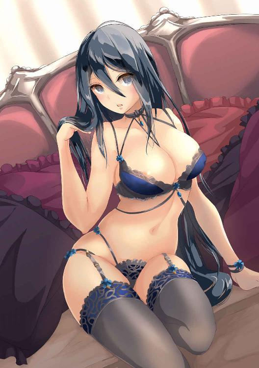
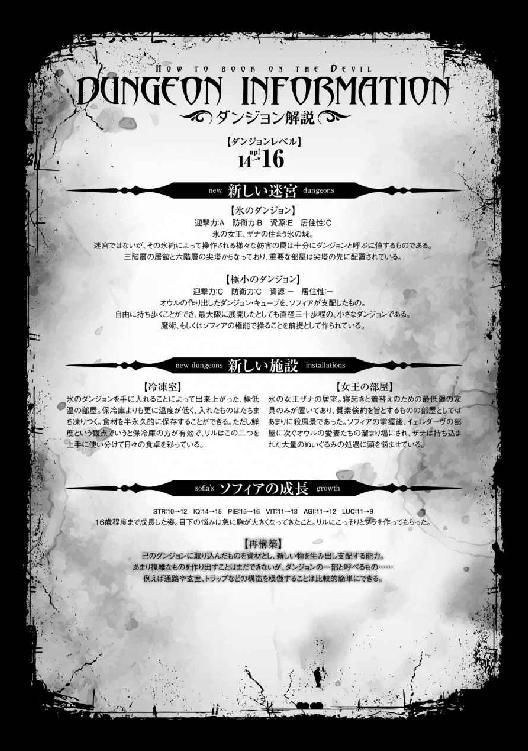

| 魔王の始め方6 魔王の始め方シリーズ (ビギニングノベルズ) | |
| 笑うヤカン | |
| 株式会社キルタイムコミュニケーション (2018) | |


※本作品の全部あるいは一部を無断で複製・転載・配信・送信したり、ホームページ上に転載することを禁止します。本作品の内容を無断で改変、改ざん等行うことも禁止します。また、有償・無償にかかわらず本作品を第三者に譲渡することはできません。
※本作品は電子書籍配信用に再編集しております。
目次
Ｓｔｅｐ．12 戦後処理を片付けましょう
１
魔王オウルが作り上げ、その娘であるとともにダンジョンの神でもある少女、ソフィアが管理する広大な地下迷宮の最深部。魔王本人の部屋よりも更に厳重に守られた場所に、それはあった。
それは外部からの攻撃への備えであると同時に、内部からの脱出への備えでもある。品の良い調度品が飾られ、使い心地の良い家具が揃えられ、扉には鍵すらなく。
それでもそこは、ある種の牢獄であった。
「入るぞ」
オウルはその部屋を訪れ、几帳面に三度ノックする。
「あ、オウル、いらっしゃーい」
『はい、お入り下さい、陛下』
扉を開けると、そこには女が一人。しかし二つの同じ声がオウルを出迎えた。
「何か不都合はないか？」
『いいえ。とても......よく、して頂いておりますから』
褐色の肌に、紫の髪の少女。イェルダーヴは、口を動かさぬままにそう答える。
「なんとかなりそう？」
彼女の口を動かしてそう尋ねるのは、イェルダーヴの身体を操るリルだ。
「いや......悪いが、もう少しかかりそうだ」
砂の国の王ウセルマートの持っていた支配の杖。その中に封じ込められたイェルダーヴの魂は、ザナの魂と入れ替わりに元々の肉体に戻っていった。しかしその首に嵌められた服従の首輪によって再び封じられ、自由を奪われたままであった。
服従の首輪に封じられてからは何の指示も与えられていないせいかオウルたちに襲い掛かるようなことはなかったが、そのままでは行動どころか食事や排泄すらままならない。仕方なく、リルがその身体に宿って必要最低限の生活をこなしている状態だった。
「じゃあ、わたしはちょっと休憩いってくるから、イェルダーヴのことお願いね」
リルは突然そう言うと、イェルダーヴの身体からするりと抜け出す。途端、イェルダーヴの身体は支えを失い、ぐらりと揺れた。
「おい！ ......全く、奴はどうも仕事が雑でな。怪我はないか」
『はい、いえ、あの......大丈夫です』
慌ててその身体をオウルが支える間に、リルは部屋を出ていってしまう。オウルが服従の首輪に追加した発声機能のお陰でなんとか意思の疎通だけは取れるが、それ以外は人形のようなものだ。厄介なことに今のイェルダーヴはウセルマートの命令がなければ、自分で立っていることさえできなかった。
『お聞きして、よろしいでしょうか......』
オウルがその身体をベッドの上に寝かせてやると、イェルダーヴはおずおずとした様子でそう切り出した。
「なんだ？」
『何故陛下は......わたしに、このように良くして下さるのですか？』
自分の意思で指一つ動かせぬ女に部屋を与え、部下に甲斐甲斐しく世話をさせ、暇な身分でもなかろうにこうして度々訪れては何か困っていることがないか尋ねる。
イェルダーヴの力を利用するのが目的だとしても、あまりに丁重な扱いだった。
「何故だと？」
オウルにしてみれば思っても見ないことを問われ、返答に詰まる。言われてみれば、これほどに世話を焼く理由もなかった。
ザナの妹だから。美しい女だから。そういった理由がないわけではない。
「そうだな。強いて言えば────同情か」
だが改めてよくよく考えてみれば、一番の理由はそれだった。
「己の意思さえ奪われ、選択の余地もなく無理やり従わされるのは辛かろう」
それはかつてオウル自身が受けた、もっとも苦い過去の記憶。同じ目に、それも何年もあってきた彼女に対する憐憫の思いが強くあった。
『......やっぱり......』
オウルの言葉に、イェルダーヴは小さくそう呟く。
『陛下。不躾ながら、一つだけ、お願いをしてもよろしいでしょうか』
「なんだ？ 必要なものがあるなら、一つと限らずともある程度は便宜してやるぞ」
『いいえ......』
振れぬ首の代わりにイェルダーヴは答え、そこで言葉を切る。
そしてしばらくの間沈黙した後、逡巡を振り切るように声を上げた。
『わたしを......抱いては、頂けませんでしょうか』
「なんだと？」
出し抜けの要望に、オウルは眉を顰める。
『はい。わたしを助けて頂き、尽力して頂く御恩。今のこの身では、それくらいしか返す術がありません。このような粗末な身体で良ければ、どうか』
粗末な身体、というのは随分な謙遜であった。金の装飾で飾られた褐色の肌はその黄金に負けぬほどの輝きを放っているかのように艶めいていて、まるで芸術品のように美しい。彼女の身体を申し訳程度に覆う布を押し上げる豊満な双丘ときゅっと括れた腰、そして熟れた桃のような尻は男であれば誰もが手を伸ばしたくなるに違いない。
「ふむ......」
オウルはイェルダーヴのむっちりとした太腿に手を添えて、ゆっくりと撫ぜる。どこまでも柔らかく、しかしそれでいて指を押し返す張りの強さ。極上の触り心地だ。
『陛下のお好きなようになさって頂いて......構わないんですよ』
「それは実に魅力的な提案だな」
動かぬ人形のような身体といえど、彼女にそう言われて滾らぬ男はいないだろう。
本物の人形ならともかくとして、身体を動かせないだけで魂はそこにあるのだ。見聞きができているということは、触れられる感触もあるということだ。
『んっ......』
ついと滑らされるオウルの指先。それはイェルダーヴの膝の辺りを軽く撫ぜただけであったが、イェルダーヴは敏感に声を漏らした。この極上の肉体をほしいままに弄び、征服し、鳴かせるのはどれほど心地よいことだろうか。
「要らん」
『え......』
しかしきっぱりと拒否するオウルに、イェルダーヴは小さく声を漏らした。
「生憎と俺は女には困っておらんからな。わざわざ身動きもできぬ女を抱く必要はない」
それに、とオウルは鋭い視線をイェルダーヴへと向け、言った。
「抱けばお前は力を失う。......それが狙いであろう」
『ご存じ......でしたか』
イェルダーヴの問いに、オウルは頷く。
「神の中には純潔を重んじるものも多いそうだな。男神ならばなおさらだ。抱かれればお前は力を失い、価値を失くし、これ以上利用されることもなくなる」
『......はい』
力なく返事をするイェルダーヴに、オウルは呆れたように深く息をついた。
「案ぜずとも、俺はお前を利用するつもりなどない......と言っても信用ならぬだろうがな。まあ悪いようにはせぬ。あたら純血を散らすこともあるまい」
全知の力の一端を担う彼女であれば、オウルがザナや他のものたちに行ってきた悪辣な所業も知っているだろう。疑心暗鬼になるのは無理もないことだとは思うが、オウルには本当に彼女を利用するようなつもりはなかった。
『そんなことは、ありません！』
だがオウルのそんな言葉に初めて、イェルダーヴは声を大きく張り上げる。
『陛下は......わたしを、助けて下さいました。そればかりか、わたしをこの首輪から解放するために自ら尽力して下さってます。そんな恩人を疑うような恥知らずではありません』
熱のこもったイェルダーヴの言葉にオウルはかえって居心地の悪い思いを感じ、額に手を当てた。
「こう言ってはなんだが、お前はもののついでだ。別にお前自身を助けようと思って助けたわけではないし、首輪の解除方法を調べているのもうちの部下が巻き込まれたからだ。俺が自ら作業にあたっているのも、俺以外にそれができるものがいないからにすぎん」
『はい。それは勿論、わかってます』
あのザナの妹にしては随分と義理堅い奴だ、とオウルは思う。魂を直接響かせるその装置では、肉体を持っている時のように虚言を弄することはできない。思っていることがそのまま出力されるからだ。
つまりはザナのように猫を被っているわけではなく、真実彼女はオウルに感謝しているということだ。
『ですから、これは、運命だと思うのです』
「運命だと？」
表情を歪め、オウルはオウム返しに言葉を返す。
それは正直嫌いな言葉であった。天の定めた進むべき道など、反吐が出る。
『はい。空に座す太陽の神すら見通せぬ、埒外の出来事。望むべくもなく、与えられるべくもない僥倖。わたしがいくら願い祈っても、天は助けてなどくれなかった』
だが。
『──ですから、陛下。あなたが、あなたこそがわたしの運命。望むと望まざるとに拘わらず、わたしの行く末を決めて下さった方なのです』
声を震わせ語られるイェルダーヴの言葉は、オウルが思ったそれとは真逆の意味が込められていた。
『ですからわたしはこの身を......神ではなく、あなたに捧げたいのです』
魂は嘘をつけない。力を失いたいという思いはあったにせよ、恩を返すために身を尽くしたいというその思い自体には一切の虚飾はなく、イェルダーヴの本心であったのだ。
「わかった。そうまで言うなら、抱いてやる。だが肉体の自由を取り戻した後でも遅くはあるまい。もうしばし待て」
『それは......このままでは、いけないのですか？』
存外食い下がってくるイェルダーヴ。
「物のように扱われ、人形を犯すように純潔を失いたいというのなら構わんが。お前はそういった性癖を持っているのか？」
『いいえ、そういうわけでは、ありませんが......』
「ならばもうしばし待て」
オウルの言葉にイェルダーヴは押し黙るが、あまり納得がいっていないようでもあった。肉体の制御を失い表情や身体はピクリとも動かないのに、そんな雰囲気が漂うというのも奇妙な話だ、とオウルは思う。
『......では、別にもう一つ、お願いしてもよろしいでしょうか？』
しばしの沈黙の後、おずおずとイェルダーヴはそんなことを言い出した。
２
「ついたぞ」
『ご面倒をおかけします』
イェルダーヴの身体を横抱きにして、オウルがやってきたのは浴場であった。
火山を丸々取り込んだソフィアのダンジョンの中には、大小様々な浴室がある。
彼らがやってきたのはその中でも比較的こぶりな一室だ。
身体を洗って欲しい。それが、イェルダーヴの告げた望みであった。
無論、わざわざ魔王にさせるようなことではない。侍女でもリルにでも頼めばいいことではある。つまりそれは、露骨な誘惑だ。何をそんなに焦っているのやら、とオウルは内心嘆息した。
「一体何を企んでいる？」
『......言えません』
尋ねれば、素直にそう返ってくる。魂から直接発せられる言葉は、嘘を言うことはできなくとも黙っていることはできるのだ。
「まあ良い。俺を害するような理由ではないのだろうな」
『はい。それは勿論です』
そうとだけ言質が取れればいい。彼女が文字通り手も足も出ないのは確かなことなのだ。オウルに何かを能動的に仕掛けられるような状態であれば、こんなに苦労はしていない。
「ならばいい。脱がすぞ」
脱がすと言っても、イェルダーヴが身に纏うそれは殆ど服の用を成してはいなかった。リルが普段着ている服よりも身体を覆う面積が小さく、扇情的だ。そのくせ、面紗で顔の半分は覆われて見えないのがかえって蠱惑的であった。
それを取り払って現れた顔立ちは、存外に若い。いっそ幼いと言ってしまってもいいかもしれないくらいだ。ふわふわとウェーブした紫色の髪に、宝玉のように澄んだ紫の瞳。どこか儚げな美しさを持つ姉とは違って、柔らかな愛らしさがあった。
しかし下には、あどけない顔立ちに不釣り合いな二つの膨らみが強烈に己の存在を主張している。そこを覆う布は肩と首にかかった金枠からまるでカーテンのように垂れ下がっているだけで、めくり上げればすぐに褐色の双丘と、恥ずかしげにその頂点を彩る薄桃色の蕾が丸見えになってしまった。
「いい趣味をしているな」
『王の......ウセルマートの趣味です......』
オウルの皮肉に、イェルダーヴは消え入りそうな声で答える。自らの意思を全て封じられていたのだ、本人の趣味でないことは明白だった。
「これはどう......ああ、ここか」
服と呼んでいいのか判断に悩むそれの金具を、オウルは一つ一つ外していく。そして最後に腰を覆う小さな布を取り去れば、イェルダーヴは一糸纏わぬ生まれたままの姿となった。
その美しさ、悩ましさと言ったら。小柄な身体つきとあどけない顔立ちは否が応でも庇護欲をそそるような幼げなようでありながら、胸元の二つの果実ときゅっと括れた腰つき、そしてむっちりとした大きめの尻に滑らかな太腿は、これ以上ないほどに女としての色香を身に纏っている。濃い褐色の肌が、その魅力に更にエキゾチックな味わいを加えていた。
男ならば、誰もがむしゃぶりつかずにはいられないであろう、その肢体。もし興味を持たない男がいるならば、それは同性愛者か幼児性愛者くらいのものだ。
『いかが......で』
自身もそれを知りながら、控えめな声色で尋ねるイェルダーヴ。その頭に、オウルは桶で掬った湯を思い切りぶちまけた。
途端、ふわふわの彼女の髪の毛は顔に身体に張り付いて、見る影もなくなってしまう。
『な、何を......』
オウルが指を振ると、石鹸や洗い布が浮遊してイェルダーヴの身体をあっという間に泡だらけにし、磨き上げていく。そして再び湯をざばりとかけられすっかり垢を落とされると、浴槽に叩き込まれた。
『酷いです、こんな、こんな......』
「洗って欲しいと言ったのはお前であろうが」
確かにそうは言った。言ったが、このような扱いを求めてのことではない、とイェルダーヴは思う。なんというかもっと、色めいた雰囲気を求めての発案だったのだ。断じてこんな、犬猫を洗うような......下手をすれば衣服を洗うかのような雑な扱いを望んでのことではない。そもそも、オウル自身は服を脱いでさえいなかった。
『そんなに......わたしには魅力がありませんか......』
「別に、そういうわけではないが」
むしろ、真逆だ。流石に欲望に負けて襲ってしまうというほど自制心が薄いわけではないが、その身体に触れれば男として欲情しないわけがない。自由を取り戻すまでは手を出さないと宣言した手前、生殺しの気持ちをわざわざ味わう気にはなれないだけだった。
無論、巨大な後宮を抱える魔王には、溜まった欲求を吐き出せる相手は何十人、何百人といる。しかしイェルダーヴに対して抱いた劣情を他の女にぶつけるなどというのは、オウルのプライドが許さない。
『でしたら何故、触れても下さらないのですか......』
「言っただろう。お前が望むのなら、自由になった後でいくらでも抱いてやると」
『そのような慰めを仰らないで下さい。わかっているのです。わたしが......』
震える声で、イェルダーヴは言った。
『わたしのこの身が、穢らわしく、おぞましいものだということは......』
「何の話だ？」
またぞろ、呪いだなんだと言い出すのだろうか、とオウルは思った。ホデリやホスセリといい、この大陸の人間はとかく面倒くさい。
『能力のために犯されこそしませんでしたが......この身体に、ウセルマートが触れていない場所はありません。そのような女を、陛下のような方が好むわけもありません』
だが、イェルダーヴの口から語られたそれは、面倒だと切って捨てるには重いものだった。
「そんなことは言っておらぬ。その忌々しい首輪さえ外れてしまえば......ああ」
唐突に、オウルはそれに思い至った。
「お前、それが外れぬと思っているのか」
オウルにとってすればそれは、多少面倒な錠前にすぎない。下手に壊せば中身の魂ごと壊れてしまうから慎重になってはいるが、けして解除できないような代物ではない。
けれど、イェルダーヴにとっての首輪は、長年己を縛りつけてきた絶望の象徴だ。それを外せるなど、にわかに信じられないのだろう。
『この服従の首輪は、永遠の隷属の証。魂ごと破壊する以外に外す方法はないのです』
イェルダーヴの言うことは正しい。この首輪には、外して魂を解放するための機能が一切なかった。普通なら何らかの解除方法は用意しておくものだが、ないものはない。
だが、それは外せないということを意味しない。やりようはいくらでもある。そう思うのは、オウルが優れた魔術師だからだ。イェルダーヴにはその実感がない。オウルがありもしない希望を言って聞かせているものと感じているのだろう。
「......仕方あるまい」
そう信じ込んでいる彼女に、どれほど口で理屈を説いても無駄なことだ。態度で示す他ない。
「ならば望み通りにしてやる」
『陛下......？』
服を脱ぎ捨て、浴槽へと入ってくるオウルにイェルダーヴは怪訝な声を上げた。
「触れても構わんな？」
『それが、陛下のお望みであれば』
念のため尋ねれば、すぐさまそう返ってくる。オウルとウセルマート。やっていることにそう差はないだろうに、何故こうまで懐かれているのか、とオウルは首を捻るばかりだ。
とはいえ、本人がそう言うのならば是非もない。
オウルはイェルダーヴの背に腕を回すと、彼女を支えながらその形の良い顎を持ち上げて、まずはその艶やかな唇を奪った。
『あっ......!?』
口を塞いでも、首輪から直接出力される心の音には無関係だ。漏れ出る驚きの声には、ただオウルの行動が意外であったという以上の響きがあった。
「何だ。何かあったのか」
『いいえ、その......』
言いづらそうにイェルダーヴは答える。
『口づけをされるのは、初めてでしたので』
「......全身触れられたと言っていなかったか？」
そう答えつつも、オウルはイェルダーヴを抱きしめ、その耳元から髪、首筋、鎖骨の辺りへと丹念に口づけを落としていく。
『それは、その、そう、ですが......』
なんとなく想像はついた。オウルがウセルマートと実際に対面したのはごく僅かな時間だったが、尊大な王であったことは疑うべくもない。わざわざこんな風に女を慈しむようなことはしなかったのだろう。
「洗うぞ」
オウルは石鹸を泡立てると、自らの手にそれを盛りつけ、イェルダーヴの身体を後ろから抱きすくめるようにして抱えた。その腕を伸ばしてやり、二の腕から肘、手のひらから指の間までを丁寧に丁寧に洗い上げていく。
両腕を泡まみれにしてやって、胸元へと手を伸ばすと、その先端はピンと硬く尖っていた。身体の制御を失っても心臓が動きを止めないように、彼女の肉体そのものはきちんと反応しているのだ。
『あ......その......』
自身もそれをわかっているのか、恥ずかしげに声を上げるイェルダーヴに答えることなく、オウルは柔らかな双丘を優しい手つきで撫でた。むっちりとした乳房は触れているだけで気持ちよく、途方もないほどに柔らかで、思わず揉みしだいてしまいたくなる。だが彼は精神力を総動員してその誘惑に耐えた。柔肉を持ち上げ、その下側までも丁寧に洗い清めていく。
『あの、陛下......当たって、ます』
だが、反応する己自身までは堪えることができなかった。この状況で反応せねばそれは不能だ。密着している関係上隠すこともできず、硬く反り立ったオウルの愚息がイェルダーヴの尻に当たる。
「だからどうした」
『そのまま......して下さっても』
「せんと言っただろうが」
このままイェルダーヴの腰を掴んで突き入れ、その膣内に白濁をぶちまければどれほど気持ちいいだろうか。本人も良いと言っているのだから、もはやそうしないのはただオウルの意地でしかなかった。
胸を洗い終えて、オウルはイェルダーヴの腹から腰にかけてを撫ぜる。余分な贅肉など欠片もついていないなだらかな腹は、殆ど胸や尻と変わらないほどの破壊力を備えていた。きゅっと括れた腰つきも、オウルの獣欲を刺激し理性を削るには十分だ。
だが、そこから下。尻と太腿に至っては、さしもの魔王も己の選択を後悔し始めるほどの力を秘めていた。同じ生き物の肉とは思えぬ、何故形を保てているのかと疑問に思ってしまうほどの柔らかさ。
ことに内ももの触り心地ときたら、オウルでさえ思わず手を止めその感触を堪能してしまうほどであった。しかし魔王は強靭な精神力で以って一瞬で我に返り、作業的に彼女の身体を洗いきる。
「あとは......ここだな」
オウルは言ってイェルダーヴの身体を寝かせると、その脚を割り開いた。
『陛下、そこは......！』
「汚れの溜まりやすい場所だ。しっかりと清めねばな」
花弁を割り開くと、褐色の肌とは裏腹に鮮やかなピンク色の肉が覗く。その奥に、彼女の純潔の証拠までが見て取れた。オウルは躊躇わず、彼女のそこに口をつける。
『いけません、そこは......汚い、穢らわしい場所です』
「だから清めるのだろう」
イェルダーヴは必死にオウルを止めようとするが、文字通り手も足も出ない。オウルは構わず、彼女の秘芯に舌を這わせた。
『あ......あぁっ......！ 駄目、です......！ そんな、陛下......！』
断続的に声を上げるイェルダーヴ。
「『あぁ、ああぁぁっ、ああぁぁぁっ！』」
その声が、不意に二重に重なって聞こえた。
喘ぎ声というのは元々、意識と無意識の間にある。それは声ではあるが、快楽が身体を震わせ鳴らす音でもあった。イェルダーヴの肉体が反応し、声を上げているのだ。
なるほど、その手があったか、とオウルはあることを思いつく。
「悪いが、少し本気を出すぞ」
そう言って、魔力を込めた指先で彼女の下腹部に紋様を描いた。それは、性感を増幅する魔術だ。
「『ひ......あぁぁっ！』」
途端、イェルダーヴの腰がはねた。
魂を封じられても、イェルダーヴは周囲を見聞きし、触れられた感触を認識している。それはつまり、魂は完全に封じられたわけではなく、何らかの経路が肉体との間に繋がっているということだ。
「あ、や、『駄目、陛、下ぁっ......！ 駄目、』あぁっ、ふあぁぁっ！ 『駄目です、もう、』あぁぁぁっ！ 『だめぇ、イッ......ちゃ、』あぁぁ！」
イェルダーヴの魂と肉体の声がブレ始める。
外から首輪を破壊すれば、中の魂諸共に砕けてしまうだろう。
だが、中から破壊すれば？
勿論、常人の魂に物質を破壊できるほどの力は存在しない。魔術を使うためには詠唱や印......つまりは口や舌、身振り手振りが必要であって、魂だけでは普通は使えない。
普通は、だ。
「あぁあぁぁぁ、ああぁぁぁぁっ、あああぁぁぁぁぁっ！」
イェルダーヴの声が上ずり始め、魂はもはや文句を言う余裕さえ失う。
「いいぞ、イけ......っ！」
イェルダーヴの魂に繋がる経路のうち、もっともオウルの扱い慣れたもの......つまりは性感を通じて、彼は彼女の魂に魔術を使わせた。それは暗闇の中、垂らした釣り糸の先にくくりつけたペンで文字を書くようなものだ。
「ああああああああああああぁぁぁぁぁぁぁぁぁぁぁっ!!」
だがオウルは──世界で五指に入るであろう魔力制御の名手は、それを成し遂げた。
イェルダーヴの首輪が光を放ち、パキリと音を立てて中央から両断される。オウルはすかさず、外に放たれようとする魂を彼女の胸の中に押し込めた。
「陛、下......？」
イェルダーヴの瞳がぱちぱちと瞬き、オウルの顔を見つめる。その頬には赤みがさし、人形のようであった顔立ちに命が吹き込まれ。
そして彼女は、己の胸を鷲掴みにするようにして押し当てられた男の手を見た。
「いやあぁぁぁぁぁっ!!」
「待て、嫌とはなんだ、嫌とは」
絹を裂くような悲鳴に、オウルは渋面を作る。
「ご、ごめんなさいぃ、で、でも、こんな、は、恥ずかしすぎてぇ」
首輪の発話機能ではなく、舌を動かし喋るイェルダーヴの肉声は、今までの理知的な印象とは裏腹にどこか舌足らずで幼いものだった。
「何を恥ずかしがることがある。俺は今までお前の全身を洗ってやったし......そもそも、動けるようになったら抱いてやる約束だろう」
オウルが言うと、イェルダーヴの褐色の肌が目に見えてわかるほど真っ赤に染まった。
「そ、そんな......は、恥ずかしすぎますぅ！」
そして胸を掻き抱き、彼女はうずくまってしまう。
今まで自分の意思では動かぬ身体を、自分のものだとあまり実感できていなかったのだろう。それが動くようになった途端、人並みの羞恥が表出した。
理屈としては、わからなくもない。わからなくもないが......
散々柔肌に触れて愛撫し、昂りきったこの欲求をどうしろというのか。
泣き喚くイェルダーヴを見下ろしながら、オウルはやはり放っておけば良かったと後悔したのであった。
３
「あっ、んっ、あっ、いいっ、んっ、いい、よぉっ、オウル、さまぁっ」
濡れた肉が打ち付け合う音とともに、リズミカルに嬌声が響く。
その声の主......マリーは尻を高々と掲げ後ろから貫かれながら、ベッドのシーツを強く掴んだ。
「もう、だめぇ......っ！ イッちゃう、イッちゃうよぉっ......！」
きゅうとその膣口がオウルの男根を締め付けて、マリーはふるふると身体を震わせる。
「ああ、イく、ぞ......っ！」
「ふぁっ......～～～～～～～っ！」
ピタリと呼吸を合わせ、オウルが彼女の膣奥に精を放つのと同時に、マリーは絶頂に達する。どくり、どくりと断続的に白濁の液を少女の中に注ぎ込むと、張り詰めていた彼女の身体から不意に力が抜けた。
ぐったりとするマリーの膣口で、尿道に残る精の一滴までも絞り出すかのように二度、三度腰を前後させて扱き立てた後、オウルは繋がったまま彼女の身体を回転させて、前から抱きすくめ顔を寄せる。するとマリーは嬉しそうに微笑んで、よく懐いた子犬のような仕草で唇を重ねた。
「えへへ......なんか、オウルさま、優しいですね。久しぶりだから？」
ぐりぐりと男の胸板に頭を擦り寄せるマリーの首には、既に無骨な首輪の姿はない。イェルダーヴと同様の方法で簡単に外すことができた。しかし首輪が外れてからもオウルはマリーを求め、何度も抱いていた。
それはいつもよりも心なしか丁寧で優しげな寵愛で、マリーはすりすりと頬を寄せてオウルに甘える。そんな彼女のふんわりとした髪を、オウルは無言で撫でつけた。
イェルダーヴに拒否された欲求の捌け口にしたわけではないが、それでもどことなく後ろめたいものがあったが故にかえって丁重な扱いをしてしまったとは流石に言えない。
いずれにせよ、懸念はこれで一つ片付いた。
あとの懸念は一つ......いや。
二つ、か。
オウルはゴロゴロと喉を鳴らすマリーの頭を撫でてやりながら、そう心の内で呟いた。
＊ ＊ ＊
それは、夕食時のことだった。
卓を囲むのはオウルにリル、ユニスにスピナ、マリーとソフィアといったいつもの面々。そこに今日はサクヤとミシャ、ザナまでもが呼ばれていた。
呼んでもいないタツキがちゃっかり食事にありついているのはいつものことだ。
「この地を、ソフィアに委譲しようと思う」
出し抜けに言い出したオウルの言葉に、ソフィアの手からぽろりとパンが転がった。
「どういうこと？」
パンが地面に触れる前に掻っ攫うように受け止めながら、マリーは呆然とする我が子の代わりにそう問う。
「そのままの意味だ。この大陸での俺の立場をソフィアに継がせる。当面の脅威は去ったようだからな」
ソフィアの力を狙う大国サハラは潰し、ヒムロとは同盟関係にある。更に東に小国はいくらか存在するものの、サハラやヒムロを越えてまでヤマトへと侵攻してくるほどの力を持った国は存在しないという。ならば、もうオウルがここに残る理由は殆どなかった。
元々、オウルが新大陸にやってきたのはただの偵察にすぎない。それが色々面倒事に巻き込まれて、あれよという間にソフィアもダンジョンも随分大きくなってしまった。だがいい加減、オウルが本国を留守にするのも限界が近づいてきている。
「無理無理無理！ 無理だよぉ！」
我に返ったソフィアがぶんぶんと首を振りながら、悲鳴のように叫んだ。
今の彼女の姿は十二歳程度だろうか。政を執るには幼すぎるが、それがどれほど困難なことであるか想像できる程度の分別はあった。
「案ずるな。無論今のお前に無理なのはわかっておる」
何せ一年足らずで今の姿にまで成長したのだ。成長に応じてある程度の知識や技術は備わっているようであったが、政治の勉強をする間などあったわけがない。
「補佐はつけるし、手も必要であればいくらでも貸そう。だが、この地の魔王はこれからお前だ。......お前はこの俺の娘なのだ。できるな？」
オウルの言葉にソフィアはハッとして、彼の瞳を見つめ返す。
「......うん。わかった、頑張ってみる」
「うむ。それでこそ我が娘だ」
幼い顔を精一杯に引き締める愛娘に、魔王は満足げに頷いた。
「だからあたしまで呼んだってことね。別にいーけどさ」
平素被っている猫を脱ぎ捨てて、食卓に行儀悪く頬杖をつきながらザナ。部外者である彼女までがこの場に呼ばれた理由は、要するに国単位でソフィアの補佐をせよという話だ。といっても小国であるヒムロにとって、ソフィアと協力関係を結ぶことはそう悪い話ではない。
「旦那様......故国に、帰ってしまわれるのですか？」
悲しげに眉根を寄せてそう問うのは火山の神、サクヤだ。
「帰ると言っても、俺のダンジョンとソフィアのダンジョンはミシャの能力によって繋がっておる。今と大差はない。何なら、お前の部屋から直通の通路を作っても良い」
「まあ......それは、素晴らしい案ですわね」
オウルの言葉に、サクヤは両頬を手のひらで押さえて顔を赤らめる。
その様子を見ながら、あ、それ知ってる。中ボスって奴だ、とリルは思った。
ユニスとローガンをまとめて相手にできるほどの戦闘力を持つサクヤであれば、守衛としてはこの上ないだろう。
「ふむ。なれば我は主のだんじょんとやらに住まうか」
「えっ、ずるいですわ！」
ぼそりと呟く塞の神──ミシャに、サクヤが敏感に反応した。
「我は主に祀られる神故、共にあらねばならぬ」
「では妾も......」
「汝はこの山を離れられぬだろうが」
ピシャリと言い込められて、サクヤはぐぬぬと歯噛みする。
「おうるのおうち、美味しいご飯ある？」
「無論だ。ここで取れる食材とは量も質も比べ物にならん」
「じゃあたつきもいく！」
ビチビチと尻尾を振りながら、タツキは楽しげに言う。神は自らの領分を離れたがらないものだが、この海の女神はどこまでも自由奔放だ。
「いずれにせよ、今すぐという話ではないし、こちらとの繋がりを断つわけでもない。徐々にソフィアに仕事と権限を渡しつつ、委譲が済めばミシャの門を使って交流する形になる」
オウルの言葉に、ソフィアはホッとして胸を撫で下ろした。いきなり全てを渡されるかと思ったが、よくよく考えてみれば慎重で過保護な父親がそんなことをするわけがない。
ちょっと住む部屋が変わるだけで、今までと変わらず見守ってくれるはず。
そう思ったからだ。
＊ ＊ ＊
だから。
「無理無理無理無理、絶対に、無理ぃっ！」
「大丈夫だ。お前ならできる」
サハラの民に新たな王として演説しろ。オウルがそう言い出して、ソフィアは全力で抵抗した。
砂の王ウセルマートを討ち、その後のサハラは無政府状態となっていた。オウルとしてはてっきり他の人間がすぐに跡を継ぐものと考えていたのだが、神帝とまで名乗っていただけあって王の権威は相当強いものだったらしい。
そのまま捨て置けば、国は乱れ人々は困窮し、難民がヒムロやヤマトへ押し寄せかねない。そんなわけで、オウルはこれを簒奪することにした。せっかくだからソフィアを王として立てて、だ。
「そら、さっさと覚悟を決めろ」
「無理、むぅーりぃー！」
一流の仕立て屋に誂えさせた豪奢なドレスに身を包み、飾り立てられた姿でジタバタと暴れるソフィアを、オウルは即席で作った高台の上に突き出した。
予め触れ回ったので、新たな王の姿を見に民衆は高台の前に集まってきている。その数は何百、何千、あるいは何万か。生まれて初めて見る数の人間に、迷宮生まれのソフィアは石のように固まった。
一応演説の内容は叩き込んでおいたが、この様子では満足に言葉も出せないか。最悪オウルが魔術でソフィアの口を動かし肩代わりする方法もないではないが、それは最後の手段だ。たとえしどろもどろであろうとも、この大人数の前で演説することができればそれは一つの経験になるだろうが......
「......ねえ」
思案するオウルの前で、ソフィアはふと声を上げた。
「皆、なんでそんな恰好をしているの？」
それはオウルが渡した演説の内容とはかけ離れたもの。ただの、純粋な疑問の声だった。
ソフィアの目に映るのは、砂漠の民たち。ボロボロの布を纏い、虚ろな瞳で彼女を見つめる、見窄らしい人々の姿だ。
彼らが身に着けているのは衣服と言うのもおこがましい粗末な布切れで、男たちは腰に布を巻きつけただけのもの、女も胸から下を辛うじて覆っているだけで、それすら着られずに腰だけを隠し胸は露出しているものさえ散見される。肌も露わな彼らの身体は皆、一様に酷く痩せ細っていた。
「お腹が......すいているの？」
トン、とソフィアは高台から飛び降りて、手近な民の一人へと近づく。
それは、魔王の娘としてダンジョンに生まれ育ち、裕福なものしか見てこなかった彼女にとって衝撃的な光景であった。
ソフィアは食べるものにも着るものにも困ったことがなく──それどころか、そんな人間がいることさえ知らなかったのだ。
「食べる？」
彼女の手のひらの上に、パンが一つ現れた。彼女はダンジョンの中にあるものならなんでも自由に移動させることができる。台所から失敬してきたリルの焼き立てのパンは、ほかほかと湯気を立て香ばしい匂いを放っていた。
それを差し出された男は、ソフィアからひったくるようにパンを奪い、齧り付く。
「もう、そんなに急がなくても......」
言いかける彼女の元に、民衆が一斉に殺到した。
「えっ、ちょ、待っ......」
まるで幽鬼のように伸ばされる無数の手から、ソフィアは慌てて逃げ出す。だが、まだ幼い彼女の脚は慣れない服の重さもあって非常に遅く、あっという間に追いつかれてしまう。
「やめなさーい！」
せっかくオウルに用意してもらった美しい衣装を容赦なく引っ張られ、ソフィアが叫ぶとともに地面が隆起した。突如現れた無数の壁は幾何学的な迷宮を作り出し、ソフィアと人々の間を隔てる。
「乱暴にしないの！」
その壁の上に立ち、ソフィアは声を張り上げた。その幼くあどけない容貌とは裏腹の、神業としか言いようがない奇跡の現出に人々は畏れ戸惑う。大地が何の前兆もなく水のようにその形を変え、巨大な迷宮を一瞬で作り上げたのだ。彼女がその気になれば人々をその壁で押しつぶしてしまえることは明らかだった。
「ご飯が欲しいんなら、ちゃんと並びなさい！」
腰に手を当てソフィアが宣言すると、迷宮の壁がやや低くなって互いの顔が見えるようになる。それと同時に、人々は迷宮の構造をあらかた悟った。それは迷宮とはいっても、分岐のない一本道だ。
ぐるぐると回りながらやがてソフィアのもとへと辿り着き、そこをすぎればまた周囲をぐるぐると回りながら出口へと向かう一本道。人々はそこを歩き、王のもとを訪れ、順番にパンの施しを受けていく。
今まで強大な権力によって支配されてきた彼らにとってそれは身に馴染んだ行為であり......同時に、今までには受けることのできなかった手厚い慈悲であった。
「......ふむ」
その光景を見つめながら、オウルは顎を撫でる。ソフィアが行おうとしているのは、自分とも、恐らくウセルマートとも全く違った治世だ。
──だが、悪くない。ふとなぞった己の口元が笑みの形を作っていることに、オウルは気づいた。ソフィアは存外、良い王になるかも知れない。
そう思いながら、オウルは念話を通じて己が使い魔にパン粥を大量に作るよう伝えた。数はざっと五千といったところか。パンそのものより粥にする分手間はかかるが、飢えた身体にはその方がいい。
リルの怒号混じりの悲鳴が聞こえてくると同時に、オウルは念話を切った。
４
「さっさと起きろ」
ばしゃりと冷たい水を浴びせられ、横柄な口調で声をかけられて、不遜の極みに激昂しつつウセルマートは意識を覚醒させた。
そこは白く輝く石で作られた彼のピラミッドとは似ても似つかない、薄暗く陰気なレンガ造りの部屋であった。そして目の前には、仏頂面を貼り付けた琥珀色の髪の男。
魔王、オウル。
『貴様！』
その顔を見た瞬間ぼんやりとしていた思考を覚醒させて、ウセルマートは叫んだ。
だがどうしたことか、放たれた声はいつもの彼の美声ではなく作り物めいた不愉快な響きを含んでいて、身体は指一本として動かない。拘束されているのではなく、まるで動かし方を忘れてしまったかのようだった。
「服従の首輪、と言ったか。醜悪な魔導具ではあるが、確かに便利だな」
オウルの言葉に、ウセルマートは自分の首に首輪が付けられていることを悟った。自身で装着したことなどないが、確かに意識だけがあって身じろぎ一つできないのは服従の首輪を嵌められた人間の特徴だ。
それと同時に、彼は己の最後を思い出す。
『......何故余は、生きている？』
氷の女王......ザナに胸を貫かれ、ウセルマートは死んだはずだった。王である彼に医学の心得などあるわけもないが、あの傷で助かるはずもないことくらいはわかる。
「蘇生した。聞きたいことがあったのでな」
『は？』
軽く言うオウルに、ウセルマートは思わず間の抜けた声を上げた。蘇生。今、蘇生と言ったのか、この男は。
『き......貴様、こともあろうに、この余を......屍兵に仕立てたというのかッ！』
腐敗を防ぐために臓腑を抜き、乾燥させた死骸に布を巻いて魂を閉じ込めた屍兵は、首輪付きの奴隷にすら劣る卑しい立場だ。屈辱という言葉では表せないほどの屈辱、激昂という言葉では足りぬほどの激昂が、ウセルマートを襲った。
「屍兵？ あの特殊なリビングデッドのことか？ わざわざそんな手間を取るか。ただ傷を治し魂を戻して復活させただけだ」
だが続くオウルの説明に、ウセルマートは言葉を失う。
『そのようなことが......できる、はずがない。余は......余の心の臓は、完全に破壊されていたはずだ』
心は、魂は、胸の内。心臓に宿るものであるはずだ。そこを貫かれて、生きていられるわけがない。心を失っても生きているとするなら......自分とは、今感じているものとは、何であるのか？
「だから何だ？ 心臓なんてただの血液を循環させる喞筒にすぎん。そもそも蘇生なんぞ、魂が失われなければ灰からだってできる」
『灰から......だと......!? 馬鹿を言うな！ そのようなこと、できるものか！』
皮も肉も骨すらも失われた状態からの蘇生......それも、不死者としてではなく生者としての蘇りなど、神の御業ですらできぬ所業だ。
「ならば今のお前は何だというのだ」
ありえるはずのないそれはしかし、ウセルマートの存在自体が証明していた。屍兵となったものは生前の知識や経験は備えてはいるものの、こんな風に考えたり喋ったりするほどの自我など備えていない。
それは仮に比類なき王たる精神の賜物だとしても、視界に映る肌の色艶は元々と全く変わっていない。死から蘇ったというのは、事実であるようだった。
「貴様らの技術レベルに興味などない。お前に聞きたいのはただ一つだ」
信じがたい出来事に呆然とするウセルマートに、オウルは吐き捨てるように言った。
「ホスセリは、どこだ」
『誰だ、それは』
「お前がウプウアウトなどと呼んでいた、狼の娘だ」
『......ああ』
狼神ウプウアウト。正確には、その呪いを受けた娘。ホスセリという名を聞いたこともあった気はしたが、そんなものはすっかり忘れていた。
『知らぬ。余はDカップ以下の女に興味はない』
きっぱりと言い捨てるウセルマートに、オウルは思わず唖然とする。
魂から漏れ出た言葉である以上、それは虚飾なき真実の言葉であるからだ。
「......愚かな。それでも、一国の王か？」
『では聞こう。異境の魔王よ』
ウセルマートの身体はピクリとも動かせず、魔術で作り出されたその声色に覇気が乗ることはない。だがしかし、そこに何か重圧のような物を感じて、オウルは居住まいを正し──
『女の乳房以上に重要なものなど、この世にあるか』
そして予想を遥かに上回る......いや、下回る言葉に深く嘆息した。
「下らんことを......」
わざわざ服従の首輪を複製し、蘇生までしてやったというのに、とんだ無駄足だった。これ以上は口を聞く価値もない。再び物言わぬ屍に戻してやろうとオウルが指を鳴らそうとした、その瞬間。
『あれほどの女を侍らせておきながら、あの胸を下らんと言うか。貴様、それでも男か？』
ウセルマートの言葉に、ピタリとオウルの動きが止まった。
「勘違いするな。俺が下らんと言ったのは貴様の方だ」
『そうだろうとも。特に羽と角を持つ黒髪の女。あの大きさ、あの形、至高の乳房と言っていい』
吐き捨てるオウルに気を害した様子もなく、ウセルマートは熱のこもった口調で語る。
「愚かな。女の良さは胸の大きさで決まるものではない。小さいからとて無価値と断ずるは浅慮にも程がある」
『では貴様は、豊かな乳房を見た時その大きさに心躍らぬというのか！』
言い放つウセルマートに、オウルは内心呻く。彼の言葉はあまりに偏っていたが、厄介なことにある種の真理を含んでもいた。
『余を殺すか。それもまた良かろう。だがそれは余の言い分を認め、反論できぬという証左に他ならぬ。異境の魔王よ。敗北を認めるというのなら、この心の臓を貫くが良い！』
高笑いとともに、ウセルマートはそう宣言する。
なるほど、とオウルは心の中で呟いた。
戯言ではある。だが、看過できるものでもなかった。
王というのは面子を気にするものだ。下らない妄言といえどそれが敗北を意味するのならば、おいそれと屈するわけにはいかない。
かといって、ウセルマートはオウルが万の言葉を弄しようと納得し負けと認めることはないだろう。
「そうか、では死ね」
しかしオウルは気にすることなく指を鳴らした。己と性癖の違うものと語ることの愚かしさなど、どこぞの幼児性愛悪魔で嫌というほど味わっている。
何より彼は生まれつきの王ではなく、面子よりも実利を重んじる叩き上げの魔王であった。
『待て待て待て待て！ やめろ！ 余を誰と心得......貴様、ただで済むと思っているのか！』
壁の表面から無数の槍が剣山のように生え並び、轟音を立てながらウセルマートを串刺しにせんとゆっくりと迫る。見苦しく喚く男の声を聞き流しながら、オウルは彼に背を向けその場を後にしようとし......ふと、その足を止めた。それと同時に、壁の動きも止まる。
『ふ......フハハハッ！ それで良い、それで良いぞ！』
「そういえば貴様......何故マリーを。あの金の髪の娘を欲した？」
あくまで居丈高に笑うウセルマートに、オウルは問うた。この尊大な砂の王がかつて要求してきたのは、リル、サクヤ、そしてマリーの身柄だった。
迷宮の中でも屈指のバストサイズを持つ前者二名を指定した理由は明らかだ。しかしマリーにだけは違和感が残る。
仮にこれから成長する余地が残されているとしても、ウセルマートの全知が未来を見ることができないというのは彼本人が言ったことだ。仮にそれが偽りだったとするなら、砂の王は今こんな姿を晒してはいないだろう。
『......アレが、余のモノだからだ』
ウセルマートはポツリと、呟くようにそう答えた。
「どういうことだ。何故マリーがお前のものだということになる」
オウルの言葉に呼応するかのように壁が動き、尖った先端がウセルマートの額を貫いて血が流れる。だがそのまま棘が肉を割り頭蓋にめり込んでも、ウセルマートは答えようとはしない。
「死ぬぞ」
忠告にも返ってくる言葉はなく。
──そのまま、肉と骨とが潰れる音だけが、ぐちゃりと鳴った。
「......ふん」
オウルは鼻を鳴らし、先程までウセルマートであった肉塊を見下ろす。
あれほど見苦しく生を乞い願った男が、いかなる理由で口を閉ざしたのか、それはわからない。
だが、彼自身が死んだ以上、気にする必要はないだろう。死者は何も成すことができない。ウセルマートがその内心に何を秘めていたとしても、こうしてその生命が失われた以上、全ては無意味だ。
そのはずで、あるのに。
オウルの胸中にへばりついた漠然とした不安は、まるで膠のように拭うことができなかった。

Ｓｔｅｐ．13 愛されるダンジョンを作りましょう
１
「調子はどうだ」
「あ、パパ！」
薄茶の岩壁に囲まれた、簡素な一室。
そこに現れたオウルの姿を認めるやいなや、ソフィアはその翠緑の瞳に喜色を浮かべ、彼に飛びついた。それは父のことを慕うが故の行動であったことに違いはない。
「悪くはありませんな。少なくとも、姫様よりはよほど覚えがよろしい」
だが半分は、笑みを浮かべつつ辛辣な所見を述べる老人から逃げ出すためのものであった。
「姫様って誰？」
「ユニスのことだ」
ソフィアの問いに、男の代わりにオウルが答える。
真っ白な髪に片眼鏡、七十を数える年にもかかわらず、長身の痩躯を剣のように伸ばしたその男は、世に疎いソフィアのためにつけた補佐役兼教育係だ。
その政治手腕はオウルの知りうる中でも最高。オウル自身はおろか、数千年に渡って大国を運営してきたメリザンドにすら勝るかも知れない。
「おっと、失敬。魔王妃殿下とお呼びすべきでしょうか」
「思ってもいないことを口にするな。構わん、好きに呼べ」
──何せあの英雄王、ウォルフの片腕として長年国を支えてきたのだから。
男の名は、トスカン。元グランディエラ王国宰相だ。
数年前に職を辞して隠居生活を送っていたところを、ソフィアの教育係としてオウルが引っ張ってきた。
「あのね、パパ。今みんなにこの石のダンジョンを直してもらってるんだけどね。ユニスママが真っ二つにしちゃったやつ」
ソフィアの手のひらの上に、巨大な岩を砂の民たちが運ぶ光景が浮かび上がる。その岩は、ウセルマートがピラミッドと呼んだ石造りの迷宮の材料だ。驚くべきことに、彼らは魔術も魔導具も使うことなく、コロと呼ばれる岩の下に敷いた丸太とロープなどを用いた人力だけでそれを運んでいた。
それは凄まじい技術と労力だが、同時に恐ろしく無駄にも見える。オウルの魔術を用いれば、あの岩を一体で運ぶゴーレムを作り出すことはおろか、大岩自体に自力歩行させることすら可能だ。
「非効率的であることは承知の上です。......ですが、そうでもしなければ、仕事がないのです」
絶句するオウルに、トスカンが補足する。
「仕事がないだと？」
「うん。あのね。この国の畑は、作物が沢山取れるけどあんまり広くないの。それで、えっと、前の王様が管理していたんだって」
「こちらがこの国の地図です」
ソフィアのたどたどしい説明にオウルが眉を顰めると、すかさずトスカンが如才なく地図を広げた。
「んっとね。ここと、ここと、ここと、ここは砂漠で、何もないの。で、真ん中の川のそばの......ここが、畑」
地図を指差しながら、ソフィアは懸命に説明する。要するに砂の国サハラはその大部分......九割ほどが、不毛の砂漠であった。
そしてその中央を流れる大河に寄り添うようにして、残りの一割で暮らしている。
「なるほどな......これは、一種の龍脈だ」
その地形を鋭く見つめ、オウルはそう看破した。
「魔力というのは、水にも溶ける。北の地の魔力はこの川に溶け、流れてきているのだ。とはいえ普通であれば川に含まれた魔力は大地に染み込んでいってしまうものだが、この不毛の地は一種の絶縁体になっておるのだろう。砂に覆われ他に行き場のない魔力は川に沿って僅かな大地を潤し、豊かにする。この地形であれば何もせずとも勝手に作物は育ち、絶えることはなかろう。──そして」
つい、とオウルは指を動かし、地図上で今彼らがいる位置......ピラミッドの中枢を指差す。
「その魔力は最終的にこのピラミッドへと辿り着く。ヤツの......ウセルマートの異常極まる魔力量は、これがタネか」
多少の違いはあれど、やっていることはオウルと同じだ。違いがあるとするなら、ウセルマートはダンジョンコアを使っていないということだろうか。代わりになっているのがこの複雑な構造になっている石造りのダンジョン、ピラミッドだ。
石でできた迷宮はその所々に魔力を孕み、ゆっくりと循環させる。放っておけば大気に溶けて消えてしまう魔力を貯蔵しながら、同時に流入しすぎて破裂してしまう危険を避けている。
ダンジョンコアに比べれば原始的で泥臭い装置だ。だが作られたのは数百年、下手をすれば数千年前のことだろう。太古の昔にこんなものを作り出した技術力と発想力は、オウルでさえ舌を巻くものだった。
「そしてその溢れる富を、王が独占していたわけか」
オウルの言葉に、ソフィアはこくりと頷く。
「だからね。川の周りに住んでない人......砂の上で暮らしている人たちは、すごく貧乏で、お腹も空いてるの。ご飯をあげたいけど......けど、何もせずに食べるのは、よくないでしょう？」
オウルの脳裏に、特に働きもせず人の何倍も飲み食いするタツキの姿が浮かんだ。もしかしたらソフィアも彼女を見てそう思ったのかも知れない。
「だから仕事を与えた、ということか」
「うん」
ピラミッド......ユニスが真っ二つに切り裂いたその残骸を、ソフィアはまだ掌握できていない。十二歳前後から成長していないその姿を見ればそれは明らかだ。
彼女が言うには、現在ピラミッドはダンジョンとしては『死んだ』状態にあり、己の内に取り込むことができないのだという。
膨大な魔力の受け皿であり、要塞としての機能も併せ持ったピラミッドは極めて有用だ。その復旧を急ぐことは理にかなっている。加えて、働く先のない民に仕事を与え食料を施すというのは、この国におけるソフィアの立場を固めるのにも繋がる。
トスカンの入れ知恵があったにせよ、悪くない選択だ。オウルは満足げに頷いた。
「でね、パパ......」
するとソフィアは甘えるようにそっとオウルの袖を掴み、彼を上目遣いに見上げる。
「働かせるのは良いんだけど、みんなに配るには食料が足りないの。元々絶対量が少ないっていうのもあるんだけど......この前タツキお姉ちゃんが起こした津波のせいで駄目になっちゃった畑も多くって」
ああ、あれか、とオウルは思い返す。
ウセルマートとの初戦、砂漠の上にまで海を引っ張ってきたタツキの貢献は大きなものであったが、同時にその代償も高くついた。消費した力を取り戻すために彼女が求めた食料の量ときたら、オウルすらたじろぐほどのもの。本国との連絡が取れていなければ、備蓄が底をつくところであった。
「だから、パパのところから食料を分けてくれないかな......？」
「駄目だ」
間髪を容れず即答するオウルに、ソフィアは目を丸くした。なんだかんだ言ってオウルはソフィアに甘いし、ソフィア自身もそれを承知している。だからまさか、断られるとは思っていなかったのだ。
「え、な、なんで？」
「俺が、王だからだ」
戸惑う我が子に、オウルは厳かな口調でそう告げた。
「無論、俺の国には余裕があり、お前の国を助けてやることもまた可能だろう。だが俺には、部下を、民を養う責任がある。ソフィアが困っているからとて、下々を生かす糧をおいそれとくれてやるわけにはいかん」
幼い我が子に視線を合わせ、オウルは諭すように言う。
聡明なる幼き王は、父の言葉をあやまたず受け取った。
「対価が必要......ううん、違う。そっか。パパの国も、わたしの国も、両方得をしないといけないんだ」
呟く彼女に、その後ろに控えたトスカンが笑みを浮かべながら二度、深く頷く。
「逆に言うと、対価じゃないなら、それを支払うのは別に今じゃなくてもいい？」
ハッと気づいたように顔を上げ、ソフィアはオウルにそう尋ねた。
「ああ。何をするにも人手と、その基になる食料は必要だろう。しっかりとこちらの利を示し、根拠となるものを提示できるのなら、現物は今すぐ用意できずとも良い」
そもそも現状でソフィアに差し出せるものなどないのだ。国の統制は取れておらず、信頼できる部下もおらず、制度もできていない。そんな状態でオウルの国と対等に取引などできるわけがない。
だが、投資なら話は別だ。
将来的にでも利が得られるということがわかりさえすれば、オウルはソフィアに手を貸すことができる。僅かな会話からその発想に至ったソフィアに、オウルは内心驚く。
「......かの英雄王がソフィア陛下の半分で良いから政に聡ければ、私も随分楽ができたでしょうな......」
熱心に考えを巡らせる幼き王の姿を見ながら、トスカンが遠い目をしポツリと呟いた。
２
「さあついたよ、サリハ」
父親の優しげな声に、サリハはパチリと意識を覚醒させた。
「ほんとう!?」
叫ぶように声を上げながら、サリハは寝台から跳ね起きる。
「わぁ......！」
そしてすぐさま船室を飛び出して、そこに広がる光景に歓声を上げた。
途端、吹き付ける風がサリハの長い濃紺色の髪をなびかせて、彼女は目を細める。
雄大なるアンニルの川のその先、強い日の光を受けて金色に輝くのは、神殿であり、城であり、砦である。この国に住むものであれば誰もが知り、しかし足を踏み入れることの叶わぬ聖域......王の居城、ピラミッドであった。
しかし、そこに入ることができなかったのは、ほんの数週間前までの話だ。
まだ幼いサリハは詳しいことを知らないが、以前の王、神帝ウセルマートを打ち倒した新しい王は下々のものたちをよく顧み、こうしてピラミッドをも開放しているのだという。
「お父様、はやくはやくっ」
「慌てて転ぶんじゃないよ」
子鹿のような足取りで桟橋を渡るサリハを笑いながら、父親がゆったりとその後を追いつつ、奴隷たちに荷物を運ぶよう指示を飛ばす。
「ねえねえ見て、お父様！ すごい！」
先行するサリハは、ピラミッドへと続く道を目にしてはしゃぎ声を上げた。
ピラミッドの荘厳さを損なわぬよう、しかし色とりどりに飾られた店の数々。
活気に満ち楽しげなそれは、まるで何かの祭りのようだ。
しかしどの神の祭日でもなく、またそれを示す紋章も掲げられていない以上は、これがこの場所の平素の姿なのだと知れた。
「やれやれ。それじゃあもう、ピラミッドに行ってみるかい？」
「うん！」
まずは宿に身を落ち着けてからと思っていたのだが、と父親が呆れ混じりの言葉を漏らす。こうなったサリハは抑えが利かないというのは、よくよく身にしみていた。
奴隷たちに宿に荷物を運んでおくよう指示して、彼は愛娘とともにピラミッドへと向かう。
「これは......素晴らしい......」
間近で目にするピラミッドのその威容は、幾多の神殿や芸術品を見慣れた彼をして思わず溜め息を漏らさずにはいられないものだった。
途方もない技術と労力を用い積み上げられた巨大な石は、数えるのも馬鹿馬鹿しいほどに無数にそびえ。そこには数多の神々が象られ、飾りあげている。それを見上げるだけで、いくら辣腕の豪商と讃えられようと、己が身が只人でしかないことを思い知らされるかのようであった。
「ねえねえお父様！ あれよ！」
感動に打ち震える父の心など知ったことでなく、サリハは入り口を指差しながらぐいぐいと彼の袖を引いた。ピラミッドの正面入り口とは別に、横手にぽっかりと空いた小さな穴。
そこに立てられた看板には、「石のダンジョン攻略体験はこちら」と書かれていた。サリハが熱望し、わざわざここまでアンニルの川を下ってやってきた理由。新たな王が作り上げたという、一大娯楽施設。
「早く早く！」
「わかったわかった。そう引っ張らないでおくれ」
亡き母に似たのか、気が強く好奇心旺盛なサリハは何日も前からこれを楽しみにしていた。父親としても、下手に冒険者などになられるよりも、こういったもので発散してくれるのならありがたい。
「入場料、五百銀だって、お父様」
「そんなものか」
奴隷を十人買える程度の金額だ。安くはないが、しかしピラミッドに入ることができると考えれば破格の値段だろう。以前はそれこそ金を山と積めるような人間でなければ、ここまで目前に近づくことすらできなかったのだから。
「お父様はいかないの？」
「ああ。私はあっちの方を見てくるよ。終わったなら、宿の場所はわかるね？」
「うん」
聡明に頷く娘に満足し、父親はピラミッドの正面入り口の方へと向かった。そちらには過去の王の墳墓や、珍しい異国の品の数々なんかが展示してあるらしいが、サリハには興味のない代物だ。
「ようこそ、勇敢なる探索者よ。まずは、武器をお選び下さい」
意気揚々と代金を支払い中に入ると、いきなりずらりと様々な武器が並べられていて、流石のサリハも面食らう。剣、槍、曲刀に棍棒。名前も知らないものや、使い方すら見当がつかないものさえあった。
「あの、えっと......これで、戦うの？ 私が？」
「大丈夫ですよ、本物ではありませんから」
受付の女ににこやかに言われ、半信半疑で手にとってみれば、なるほど確かに軽い。サリハは本物の剣など持ったことはないが、木か何かに塗料を塗って本物に見せかけているだけのものだということはわかった。
サリハはそれらをじっくりと吟味して、やがて両刃の小剣を選び取った。彼女の身の丈ほどもある大剣や、斧のような恐ろしい刃のついた複雑な形の槍なんかも気にはなったが、狭いピラミッドの中で振るうには小剣の方が適していると判断したのだ。
「剣を選びし勇敢なるものよ。ダンジョンの中に現れる怪物たちを打ち倒し、無数の罠をくぐり抜け、魔窟に捕らわれし我らが神を救い給え」
「はいっ！」
厳かに告げる女性に、サリハは小剣を掲げ答える。僅かな緊張と恐怖、そしてそれを塗りつぶす期待と興奮が、彼女の小さな胸を満たしていた。
そして、冒険が始まった。サリハは武器と一緒に渡されたランプを片手に掲げながら、ピラミッド......いや。ダンジョンの中を進んでいく。ゆらゆらと揺らめく炎が映し出す石の通路は、光によってかえって闇が深くなっているかのようで、何とも恐ろしい。
と、不意にその闇が揺らめいて渦巻いたかと思うと、それは醜悪な小鬼の姿を取って実体化した。
「っ......！」
サリハは息を呑み、剣を構える。小鬼はサリハの半分ほどの背丈しかなかったが、それでもしわくちゃの顔に牙を剥き出し威嚇する姿は恐ろしい。
「や......やぁぁっ！」
だが、先に打って出たのはサリハの方だった。剣を手に取るものから見れば笑ってしまうほどに遅く、弱く、拙い一撃。だがそれはしっかりと小鬼の脳天を切り裂いて、その身体を元の闇へと還す。
途端、辺りにファンファーレが鳴り響いた。
「えっ、何？ 何？」
〈あなたはレベルアップしました〉
その声も音も剣から聞こえてきているようで、サリハは手元を凝視する。
〈火球の魔術を覚えました〉
「火球......？」
聞こえてくる言葉を呟くと、やにわに剣が光り輝き、その刀身から炎の弾が飛び出した。
「わっわっ！」
サリハは慌てて身を引くが、火球は彼女の前髪を焦がすこともなく、すうっと天井の中に消えていく。
「あ......これも、本物の火じゃないんだ」
火球をもう何度か撃ってみて、サリハはそれに気がつく。刀身から吐き出される炎は燃える匂いもしなければ、熱さもない。誤って自分を燃やしてしまう心配はないようだった。
「......よし」
彼女は笑みを浮かべ、先程までよりも大股で進み始めた。
「石礫！ 氷壁！ 雷撃！」
サリハの振るう剣から石の弾丸が飛び出して魔物たちを貫き、氷の壁が押し留めて、轟く稲妻が壁ごと穿つ。
「ええーいっ！」
全身を焼かれながらも襲い掛かってくる牛頭の怪物を、サリハの小剣が真っ二つに切り裂いた。
〈あなたはレベルアップしました。幻影の魔術を覚えました〉
「やったっ」
そして鳴り響くファンファーレに、サリハはぐっと拳を握りしめる。
「幻影っ」
すぐさま新しい魔術を試してみれば、剣で示したその先に、サリハそっくりの姿が現れる。
「囮になるってことかな......乱戦で使えそう」
魔術はレベルアップの時に名前を教えてもらえるだけで、使い方は使用者が見つけ出さなければいけない。「石礫」に敵を怯ませる効果があることも、「雷撃」が「氷壁」を貫通することも、戦いの中でサリハが見つけ出したことだった。
ダンジョンの奥へと進むに従って、敵もどんどん強大になってきている。怪物たちの爪がサリハを傷つけることはなかったが、代わりに「体力」と呼ばれる数値が減ってしまう。これがゼロになるとおしまいらしい。
サリハが更に進んでいくと、今までにない巨大な玄室が見えた。その奥には祭壇があり、彼女は本能的にここが最後の戦いの場であることを察する。
部屋の中を満たす闇はぐるぐると渦巻いて、部屋の大きさに見合った巨大な怪物の姿を象った。ワニのような長く凶暴な顔。無数の鱗と棘に覆われた身体。一対の巨大な翼。
それがドラゴンと呼ばれる怪物であることを、サリハは知らない。だがその強大さは、嫌というほど感じられた。
「火球！ 火球！ 火球!!」
矢継ぎ早に火球を飛ばしながら、サリハはドラゴンに向かって駆ける。最初に覚えたその魔術は、威力は低く弾速も遅い代わりに射程が長く連射が利く。素早い怪物には避けられてしまうが、これだけの巨体ではかわしようもない。
火球は狙い違わずドラゴンの顔に直撃し、大きな炎の花を三つ咲かせた。
「よしっ......」
その隙に雷撃の射程範囲まで走ろうとしたその時、火煙の中からドラゴンはぬうと顔を突き出して、その大きな口をぱっくりと開いた。
次の瞬間、サリハの視界は真っ赤に染め上げられる。
〈四十のダメージ。残り体力、六十〉
「嘘でしょ!?」
何が起こったのかさえわからず、サリハは悲鳴を上げる。巨大な石人形の太い腕に殴られた時も、牛頭の怪物の斧が突き刺さった時も、受けるダメージはせいぜいが十だった。それがここに来て、実に四倍もの大ダメージだ。あと二回、同じ攻撃を受ければおしまいになってしまう。
「あっ、そうだ......幻影！」
先程覚えたばかりの魔術を部屋の片隅に向けて唱える。サリハの似姿がそこに作り出されると、ドラゴンは長い首を曲げてそちらを見やった。
「今のうちに......回復！」
〈十の回復。残り体力、七十〉
自分の胸に刀身を当てるようにして唱えると、剣からそう声が聞こえた。回復は連続では使えないが、こまめに回復していくしかない。
そうする間に、ドラゴンの口から吐き出された炎によって幻影が消滅する。それを見てようやく、サリハは先程視界を埋め尽くした赤色が炎であったことを知った。
「げ、幻影！」
あれほどの炎、避けることも防ぐこともできそうにない。幻影で狙いを逸らし、サリハは竜の懐まで潜り込む。
「雷撃！」
放たれた稲妻はドラゴンの鼻面に突き刺さって、巨竜はのけぞり呻く。初めて入るダメージらしいダメージだった。
「よ、よし......石礫！ 風刃！ 火球！ 爆発......きゃっ！」
矢継ぎ早に攻撃魔術を飛ばしていると、ドラゴンの長い尻尾がぶんと振られてサリハと幻影を諸共に薙ぎ払った。
〈三十のダメージ。残り体力、四十〉
紛い物のその攻撃はサリハ自身に痛みも衝撃も与えることはなかったが、代わりにごっそりと体力を奪い去っていく。同時に、ドラゴンが大きく口をあけてサリハの方に首を向けるのが見えた。
「か、回復！」
〈十の回復。残り体力、五十〉
〈四十のダメージ。残り体力、十〉
咄嗟に叫んだ直後、視界が赤に染め上げられる。回復とダメージを知らせる声は殆ど同時に鳴り響いた。
「えーいっ！」
攻撃の手は殆ど使い尽くし、次の攻撃への回復も間に合わない。どうにもならないと悟ったサリハは、破れかぶれで剣を投げはなった。
回転する小剣は炎のブレスを吐き出すドラゴンの上顎に突き刺さり、頭蓋を貫通する。
〈クリティカルヒット〉
剣からそんな声が聞こえるとともに、ドラゴンは絶叫を上げる。
悶え苦しみながら首をくねらせ、よろけるように数歩脚を踏み鳴らし......そして、地面に倒れ伏して、消え去った。
「や......やった！」
サリハは転がった小剣を大事に拾い上げ、奥の祭壇へと向かう。
「わー、すごい。クリアおめでとう！ わたしのダンジョンを攻略したのは、あなたが最初だよ！」
すると、祭壇の中からぴょんと緑色の髪の少女が飛び出して、サリハは驚きに目を見開いた。年齢は、サリハより少し上くらいだろうか。
「あなたが......神様？」
その身体には今まで出会った魔物と違い、圧倒的な現実感がある。けれど、ただの子供という気もしなかった。
「そうだよ。わたしはソフィア。このダンジョンを司る神にして、一応王様」
少しばかり自信なさそうに、ソフィアは自分の胸に手を当ててそう名乗る。
「お、王様......陛下!? 失礼致しました！」
はっと気づいて、サリハは慌てて跪いた。娯楽施設の方便、そういう設定なのだとばかり思っていたが、このピラミッドの神と言えばそもそもサハラの王を示すものだ。
「いーよいーよ。あなた、名前は？」
「サリハと、申します」
鷹揚に手を振るソフィアに、なおさら畏まってサリハは名乗る。
「そう、サリハ。じゃああなたに、見事このピラミッドを攻略したご褒美をあげるね」
「は......」
ご褒美。その響きに顔を上げた途端、サリハの足元の床が抜けた。
悲鳴を上げる暇さえなく彼女は落下し、しかしその身体が地面に叩きつけられることはなく、徐々に緩やかになったスロープを滑っていって見知らぬ部屋に出る。
「......なんだ？」
そこに、琥珀色の髪の魔王がいた。
３
狭い石室に、ちゅぷちゅぷと淫靡な音が鳴り響く。
それはまだ幼い秘裂を男の無骨な指が愛撫する音であり、また少女が赤黒い男根を口いっぱいに頬張って奉仕する音でもあった。
サリハは寝台の上に横になり、オウルの膝に頭を預けるようにして、彼の逸物を両手で握り拙い口淫奉仕に挑んでいる。同時に、オウルの右手は男を知らぬどころか、ろくに触られたこともないサリハの秘部を念入りに解きほぐし、快楽の錠前を一つずつこじ開けていた。
「んっ......ふ、あぁんっ......」
若い肉体はまるでスポンジのように快楽を覚え吸収していき、甘く鳴いては強張った肉塊にしゃぶりつく。
「ああ。上手いぞ」
空いた左手でその濃紺の髪を撫でてやりながら、オウルは思う。
一体何がどうしてこうなった、と。
「......観光業......？」
「うん。それでね、パパに色々教えて欲しいの」
ソフィアがその突飛な思いつきを告げたのは、オウルが食料の提供を断ってから三日後のことだった。伝えられた言葉をオウム返しにして絶句するオウルを気にもとめずに、ソフィアは羊皮紙をバサリと広げる。
「来たくなるダンジョンって、どんなものなのか」
そこに記されていたのは、ピラミッド自体を巨大な娯楽施設にする計画だ。
「基本的にはね、罠を主体にしていこうかなって思ってるんだけど、やっぱり魔物なんかもちょっとはいた方がいいでしょ？ ただ安全性の問題をどうしようかっていうのと、死体の処理なんかは」
「待て。待て待て待て。ちょっと待て。一から説明しろ」
立て板に水とばかりに続けるソフィアを、オウルは慌てて制止した。
ダンジョンの話をしている、そのはずだ。ことダンジョンに関する知識であれば、オウルは他に並ぶものがないと自負している。
だがソフィアの話は、オウルには全く理解できなかった。
「ふぇ？」
「ご説明しましょう」
目を丸くするソフィアの後ろで、トスカンが声を上げた。
「サハラにおいて、貧富の差というのは極めて顕著です。中央を流れるアンニルの川付近に住むものたちは、我々に勝るとも劣らぬほどの豊かな暮らしをしております。その一方で、川から離れた不毛の地に住むものたちは、飲む水にすら事欠く始末......」
「それで観光業を営み、その富を再配分するわけか......」
そこまで言われれば、オウルとてソフィアの意図をおおよそは理解する。
「富裕層を、ダンジョンに集めることによって」
──ダンジョンに入ってきたものを排除するどころか、積極的に呼び込み楽しませるという、その考え方を除けば。
「うん。ママに聞いたら、パパがそういうのはすごく詳しいからって」
確かに、魔物たちを......あるいは、冒険者といった連中を呼び寄せることに関して言えば、オウルは熟練の技を持っていると言っていいだろう。
だがそれは、瘴気渦巻く闇の裡に邪悪な怪物たちを押し込め、愚かな侵入者たちの心を挫き滅ぼすための技だ。決して、ろくに苦労も知らず覚悟も持たない金持ちを歓待し楽しませ、金を落とさせるようなものではない。
「......殺しては、駄目なのだろうな」
「駄目なの？」
「駄目でしょうな」
念のため確認すれば、ソフィアは背後を振り返って尋ね、トスカンはそれに頷く。
冷静に考えてみれば、問うまでもないことだ。冒険者であればいくら殺しても一攫千金を狙ってやってくるだろうが、元々金を持っている人間であればわざわざそんな危険を冒そうなどと考えるわけがない。
だが思わずそんな問いを漏らしてしまうほどに、ソフィアの掲げるそれはオウルのダンジョン観とはかけ離れたダンジョンの運営方法であった。
とはいえ、ひとたび偏見を取り払って見てみれば、それほど悪い案ではない。
食料にせよ他の何かにせよ、物を作って売るのには元手がかかる。その点、観光であれば施設の整備くらいにしか金はかからないし、ピラミッドの修復さえ済んでしまえばその内部の運用はソフィアの思うがままだ。
それだけではない。ピラミッドはアンニルの川を辿って流れ込む魔力を受け止めるようにそびえている。それはつまり、川を下ればそれだけでピラミッドに辿り着くということになる。そして富裕層は必ず川の流域に住んでいるから、交通の便が極めて良いのだ。
そして王族とごく一部の配下だけしか足を踏み入れられなかったピラミッドを開放することは、ソフィアの王としての方向性を示すことにもなる。無論、軽んじ侮るものも出てこようが、それはオウルの方で締めればいいだけの話だ。
......そのような経緯でできたのが、「石のダンジョン攻略体験」。
物理的な罠はどのようなものであれ事故を起こしかねないと最小限にし、魔物や魔術の幻影を発する魔導具を作り上げ、それを作り上げたリルの発案で魔改造された本格娯楽施設であった。
それは、良い。実際上手くいったし、成果は収入という形で順調にあがっている。
「あ、あの、誰......ですか？」
〈パパ、その子はね、サリハっていって初めてわたしのダンジョンを攻略したすごい子なんだ！ だからご褒美をあげてくれる？〉
自らの書斎に突如として放り出された怯えた少女にオウルが困惑していると、部屋の中にソフィアの快活な声が響く。
「ご褒美、だと......？」
〈うん。ママたちにいつもあげてるご褒美〉
無邪気に言ってのけるソフィアに、オウルは絶句する。流石の魔王も、よもや娘から他の少女を抱くよう頼まれるとは思っても見なかった。まるで友達に菓子でも渡せと言うかのような気楽なソフィアの物言いに、オウルはなんと答えたものか逡巡する。
とはいえ、顔を見られた以上はこのまま帰すわけにいかないのも確かなことだ。
「......怖がらなくとも良い。ソフィアには会ったか？ 俺は、あれの父親だ」
「陛下の......!?」
ともかく落ち着いた声色で話しかけてやると、サリハの表情から僅かに怯えと警戒が消え去って、代わりに緊張と畏怖が乗った。
「ああ。あいつのダンジョンを攻略したのだそうだな。お遊び程度の仮初のものとは言え、その小さな身体で大したものだ。褒めて遣わす」
言いつつ、オウルはぽんとサリハの頭を撫でる。そうしながら、印も呪文も使わずに、彼女の頭に魔術をしかけた。
「恐縮......です」
サリハの瞳がとろりと潤み、その表情から緊張の色が抜け落ちる。ほんの僅かに心を緩める、単純な魔術だ。しかし大した魔力も持たない幼い少女には、覿面に効いた。
「何か褒美をくれてやろう。望みのものを言ってみるが良い」
「えっ......えっと......その」
突然望みを聞かれ、サリハは大いに戸惑う。突然出会った見知らぬ男ではあるが、サリハは彼が王の父親であるという事実を自然と受け入れていた。
疑う気持ちもないではなかったが、オウルは位の高いものが纏う独特の空気を持っている。それは豪商の娘として、今まで出会った貴族から何度も感じ取って来たものだ。
それに加えてソフィアの人間離れした超然とした雰囲気とオウルのかけた魔術の効果が、サリハの疑念を完全に拭い去る。結果として、彼女は酷く恐縮した。
「いいえ......その、滅相もありません。私はただ、その、楽しく遊ばせて頂いただけですから」
「何、遠慮することはない。無論何もかもをとは言わんが、大抵のことは叶えてやろう」
何せ初めてのダンジョン踏破者だ。今まで少なくない客がソフィアのダンジョンに挑み、その中には子供だけでなく大人も数多くいたが、最後のドラゴンまでをも倒したのはサリハが初めてだった。無下に扱えばソフィアは機嫌を損ねるだろう。
それにオウルの存在をあまり吹聴されるのも好ましいことではない。口封じと褒美を兼ねて、言葉通り大抵のものは与えてやるつもりであった。
「で、では......先ほどソフィア様が仰っていた、褒美というのを頂けますか？」
だがサリハは、オウルにとっては予想外の、そして彼女本人にしてみれば当然の言葉を口にした。
豪商の娘に生まれ、何不自由なく暮らしてきた彼女には、何かが欲しいという欲求があまりなかった。欲するまでもなく日常は富に溢れていたし、欲すればそれこそ大抵のものは父が手に入れてくれる。
ならば目上の存在、王たるソフィアが勧めたものを選び取るのが無難というものだった。それに、物心つく前に母を亡くしたサリハにとっては、男が妻に与える褒美というのにも興味があった。
「......ううむ。だがそれは......他のものにせぬか？ 美しい宝石や異国の珍しい品々、滅多に手に入らぬ食べ物や魔力のこもった護符。そういったものもあるのだぞ」
言いつつ、オウルは先程サリハにかけた術をもう少し強めに放った。それは一種の催眠をもたらす魔術だ。判断力を奪い、他者の意見を素直に聞き入れるようにする。
「──いいえ。ソフィア様が仰っていたものを下さい」
（何っ!?）
だがその魔術はサリハの額に跳ね返されるかのように弾かれ、オウルは表情には出さずに内心で声を上げた。この手の魔術は効果を強めるほどに抵抗しやすくなるものであるとは言え、まさかこんな小娘がオウルの魔術に抗うとは思ってもみなかった。
〈決まりだね、パパ〉
何故か嬉しそうなソフィアの声が響く。まさか彼女が何らかの干渉をしたのか。だとするなら、それは恐るべき能力だ。
とはいえ、大抵のことは叶えてやると言った手前、真っ向から要求されてこれ以上拒否しても王の面子に関わる。
「......よかろう。それでは褒美をくれてやる」
オウルは観念してそう言いながら、部屋の壁に手を触れた。石造りの壁を舐めるように光が広がって、それだけで部屋を囲う壁天井はオウルの支配下に置かれた。娘に情事を覗かれるのはオウルとしても流石に憚られる。
「......まあせめて、後悔だけはせぬよう抱いてやる」
４
「あの、オウル様、これから何をするのでしょうか？」
オウルの指示に従い、ベッドの上に横たわったサリハはそう尋ねた。
それはこれからの行為への不安というよりは、単純な疑問の言葉だ。
「寝台の上で男女がすることなど、決まっておろう。お前にこれより、寵愛を授けてやる」
「チョウアイ......」
オウルの言葉がわからなかったらしく、サリハはオウム返しに繰り返す。
「今からお前を抱くということだ」
「えっと......抱っこ、ですか？」
直截的な物言いにも、不思議そうに首を傾げる。
「本当にわかっておらぬのか。つまりは、こういうことだ」
ならばとオウルは彼女の小振りな胸を鷲掴みにする。
「あはははっ！ ご、ごめんなさい、オウル様、くすぐったいです」
だがそれに対する反応は嫌悪や羞恥ではなく、明るく朗らかな笑い声であった。
どうやら彼女は、性的な行為に関する知識というものがまるでないらしい。
「......まあ良い。それならそれで、一から教え込んでやる。......脱がすぞ」
「あ、あの、オウル様......私、その、すごく、くすぐりに弱くって......」
オウルがサリハのワンピース状になっている服に手をかけると、彼女は恐縮した様子でそんなことを言い出した。
「案ずるな。別にお前をくすぐるわけではない。今からするのはもっと別の......心地よいことだ」
オウルがそう告げると、サリハはあからさまにホッとした様子だった。彼女は力を抜いてベッドに身を委ねる。
オウルはそんな彼女のスカートを、するするとめくり上げていった。サリハも抵抗することなく、軽く腰を浮かせてそれを助ける。サハラの民特有の褐色の肌。すらりとした脚から、腰を覆う白い下着までが露わとなった。
若く幼いその肢体は、太腿にも尻にもまだ殆ど肉がついておらず、色気には乏しい。しかしその代わりに、健康的な美しさがあった。
未発達でくすぐったがりだという彼女の脚や尻を撫で擦っても、笑うばかりだろう。オウルはそう判断し、いきなり下着を脱がすことにした。三角形の布を繋ぎ止めている紐を解いてするりと引き抜けば、まだ毛も生え揃わぬ秘裂がオウルの眼前に現れた。
「あ、あの......？ オウル様？」
オウルがサリハの両脚をぐいと押し開き、その間に身体を割り込ませるに至って、ようやくサリハは不思議そうに声を上げた。
「マッサージをするのでは、ないのですか？」
どうやらオウルがこれからする行為をマッサージと思っていたらしい。道理でリラックスして力を抜いているわけだ、とオウルは思った。
「いいや、マッサージの一種だ。だが少々特殊なやり方でな。奇異に思うかも知れんが、その分心地よさは保証しよう。安心して身を委ねよ」
「は、はい！」
オウルは面倒だったので、そういう方向で押し通すことにした。
ぐいとサリハの脚を立てさせて、ぴっちりと閉じたその秘裂を舌で舐める。
「えっ!?」
流石に舐めるとは思っていなかったのだろう。サリハは驚きに声を上げたが、事前に奇異なことをすると言っておいたせいかそれ以上の追及はなかった。
オウルは丁寧に彼女のスリットをなぞり、舌先でゆっくりと押し開いていく。しばらくそうして唾液をまぶしながら舌で愛撫を繰り返し、当初の驚きも過ぎ去ってサリハの身体から力が抜けた辺りで、オウルは彼女の穴に指先を押し当てた。
今まで男に触れられたどころか、自分で触ったことすらないであろうそこはキツく閉じていて、小指すらとても入りそうもない。だがその表面を指先で優しく撫でるようにしながら、オウルはその上......皮に包まれた秘核を、舌先で捉えた。
「んっ......」
流石にそこは敏感なのか、サリハが小さく声を漏らす。嬌声とはとても言えぬ色のない音。しかしそれはくすぐりに対する笑いでも、けしてない。
刺激を与えすぎないよう、ゆっくりと、だが丹念に、オウルはサリハの女の部分を愛撫していく。そうするうちにほんの僅かずつではあるが、彼女の膣口は緩み、徐々に指の侵入を許して、液体を分泌していく。
「ん......ふ、う......」
段々とサリハの口から漏れる声がその頻度を増し、熱を帯びていく。
素直な少女だ、とオウルは思った。何不自由なく育てられ、その環境に驕ることもなければ妬まれることもなく、まっすぐに成長してきたのだろう。
それは心根だけの話ではない。オウルの与える感覚についても、彼女は素直に受け入れていた。
「ん、あぁっ......ふあぁんっ」
いつの間にかオウルの指は第二関節までがサリハの膣内に潜り込んでいて、彼女の声は艶を帯び、女のそれへと変じかけている。だがそこに、戸惑いや恐れといったものは微塵も見受けられなかった。
疑うことも怯えることもなく、ただただ素直にオウルのもたらす快楽を享受して、それをもっとも気持ちよく発散できるように素直に声を上げている。
これはなかなかの逸材かも知れない。オウルはそう思いつつ、彼女の内ももをするりと撫でた。
「はぁんっ！」
途端サリハの喉から漏れたのは、笑い声ではなくはっきりと感じた嬌声であった。くすぐったさを感じる部分は、同時に性感帯でもある。くすぐったがりということは、裏を返して言えば敏感であり、感じやすいということだ。一旦笑いが快楽に変われば、それは全身が性器になったに等しいことであった。
オウルは秘部への愛撫を続けながら、ワンピースを更にめくり上げ、彼女の腹から胸元までを露出させる。なだらかに膨らんだ慎ましやかな乳房の先端は、既に硬く屹立していた。
「ひぅんっ！」
そこへ腕を伸ばして摘み上げてやれば、サリハはびくりと身体を震わせて高く鳴く。
「オウ、ル、さまぁ......」
そのままくりくりと乳首をつねりあげると、サリハは潤んだ声でオウルの名を呼んだ。
少しやりすぎただろうか？
「おっぱい、気持ちいいですぅ......そこ、もっと、して、くだ、さいっ......」
オウルのそんな考えとは裏腹に、サリハは直截にそうねだった。
「胸が良いのか？」
「ううん、ぜんぶ......ぜんぶ、いい、ですっ......その、股の、ところも......」
ふるふると首を振り、サリハはそう口にする。
「ここのことをなんと呼ぶか、知っておらぬのか？」
「お、おま○こ......です」
指でくにくにと刺激してやりつつ尋ねると、流石にそのくらいの知識はあるようだった。
「ふむ。では......」
オウルは一旦サリハから離れて服を脱ぎ、己の裸身をさらけだす。衣服の軛から解放されて、既に硬く反り勃った怒張がへそに張り付かんばかりに屹立した。
「男のこれをなんと呼ぶかは知っているか」
「お......おちん、ちん......？」
答えた言葉には、疑問符がついていた。もっと幼い頃、風呂で父の股間についていた自分にはないそれに疑問を持って何なのか尋ねたことがある。しかし目の前のそれは、その時見たものとはまるで違っていた。
父のそれは小さく柔らかそうで、ぷらぷらと牛の尻尾のように揺れていた。だがオウルのものは長く太く、まるで剣のようにまっすぐに上を向いている。赤黒いそれには複雑な紋様のように幾本も血管が浮かんでいて、先端はそれとは対照的に光を受けて輝くほどにつやつやとしていた。
「触ってみるか？」
「は、はいっ」
穴が空きそうなほどに凝視するサリハに声をかけると、彼女は一も二もなく頷く。
そして恐る恐る、というにはあまりに躊躇なくオウルの逸物に触れた。
「硬くて......熱い......」
サリハは熱に浮かされたような口調で言いながら、形を確認するように屹立した肉の塊を手のひらで撫で回していく。
「舐めてみろ」
オウルがそう命じてみると、サリハは戸惑うこともなくその先端に口をつけた。二度、三度舌でちろちろと舐めていたかと思うと、教えてもいないのに大きく口をあけてぱくりと咥え込む。
その小さな両手で肉茎をぎゅっと握りしめながら、ぷっくりと膨れた先端を味わうようにねぶっていく。オウルは一つサリハに術をかけてやると、その口内に精を放った。
「んぅっ......んぶ......!?」
突然口の中に吐き出された白濁の液に、サリハは驚き目を見開く。しかし彼女は手も口も離すことなく、それどころかこくこくと喉を鳴らしてそれをゆっくりと飲み下した。
「今の、は......」
「精液と呼ばれるもの。男の身体から作られる、命の元となるものだ」
「......命の、元......」
呟きながら、余韻を確かめるようにサリハは自分の唇を指でなぞる。
「とっても、美味しかったです！」
無論、それはオウルがかけた魔術による錯覚だ。いくらなんでも男を知らぬ処女が、生臭く粘ついた粘液を美味しく思うわけがない。
「もっと味わってみるか」
「はいっ」
とはいえ変えたのは味の認識だけで、麻薬のような依存性や思考を鈍らせるような効果をもたせたわけでもない。にもかかわらず、オウルの言葉にサリハは嬉々として頷いた。
「オウル様ぁ......あぁっ......それぇっ......そこぉっ......くりくり、しながらぁっ......ああっ！ ちゅー、して、くださいっ......んっ......んっ、んむっ......ちゅぷ、ふ、んんんんっ......！」
甘く蕩けきった声色で、サリハは口づけをねだる。オウルが顔を近づけてやると、彼女はすぐさま彼の首に腕を巻き付け、積極的に舌を絡ませてきた。その動きは拙く技術も何もあったものではないが、熱心にオウルの舌を吸い、柔らかな唇を重ねてくる様はなかなか悪くない。
その間も彼女の秘所にはオウルの指が三本重ねて根本まで入り込んでいて、抜き差しする度に愛液がぐちゅぐちゅと吹き出す。指先を僅かに曲げて膣壁を擦り上げてやれば、サリハはピンと身体を硬直させて、オウルの首に回した腕に力を込めた。
イったのだ。
もう何度目になるかもわからぬ絶頂だった。
老練な魔術師によって丁寧に丁寧にほぐされた蜜壺は湯気が出そうなほど熱く蕩けきり、ほんの僅かな刺激でも気をやってしまうほどに出来上がっている。
そろそろ頃合いか、とオウルは彼女の膣内から指を引き抜いた。
「あっ......」
するとサリハは眉を寄せて、切なげに声を上げた。聞くまでもなく、やめないで欲しいとその表情が雄弁に語っている。
「案ずるな。ここからが、本番だ」
「本番......？」
「俺のこれを、お前の中に入れる」
少し身体を引いてサリハの唾液にまみれた怒張を見せつけてやれば、彼女はごくりと唾を飲んだ。オウルの男根は三本重ねた指よりも倍以上太い。指で膣内を散々に開発された今、その意味は知らずとも、入れればどうなるかサリハはよくわかっている。
「行くぞ」
太く長いその切っ先をサリハの入り口に押し当てて宣言し、オウルは答えを待たず彼女の膣内に侵入していく。
「ああああ......あああああああっ！」
時間をかけて丹念に準備されたそこは男の肉塊を容易く飲み込んで、一番奥まで一気に受け入れる。オウルのペニスが半分ほど埋まったところで奥まで達し、それと同時にサリハは絶頂に達して叫んだ。
破瓜の痛みは洪水のような快楽に紛れて、殆ど感じることはなかった。それよりも、苦しみになるギリギリ一歩手前、息もできないほどの快楽がサリハの体内で暴れまわっている。
彼女は無意識にオウルの腰に脚を回し背中を抱いて、彼の胸板に額を押し付けるようにしながら全身でしがみついた。小さな彼女の身体はオウルに上から伸し掛かられると、腕の中に全てすっぽりと収まってしまう。
オウルはサリハの腰と背中に腕を差し込み抱き返すと、ひょいと身体を起こして彼女を抱き上げた。そうしてサリハを抱え上げたまま、彼女の身体を揺するようにして抽送を再開する。
「あっ、あっ、あっ、あああぁっ！」
まるで荷物のように抱えられながら、サリハにできるのは押し寄せてくる快楽の大波に身を任せることだけだった。身体を持ち上げられ、そして落とされる度に太く硬い肉の剣が彼女の身体をまっすぐに串刺しにして、頭をハンマーで殴られたような衝撃が走る。
突かれる度に幼い少女は絶頂に達し、その余韻が抜ける間もなく再び奥を貫かれて、更なる高みに追いやられる。
──だが。
「むっ......」
ぎゅっと己のものを締め付けてくる膣口に、オウルは小さく呻き声を上げた。小さく狭いサリハの膣口はそれでなくともオウルのものを千切らんばかりに締め付けていたが、それ以上の圧迫感がオウルの腰へと伝わってくる。
しかもそれは単なる偶然ではなかった。オウルが奥を突く度に、サリハは膣口を締め付けているのだ。それどころか、抱きかかえられた状態にも拘わらず、少しずつ腰をくねらせる動きまでが加わってきている。
これは、思っていた以上の逸材だ。オウルは内心そう呟きながら、腰の動きに捻りを加えてサリハの中を抉った。自身の手首ほども太い男根に貫かれながら、しかしサリハはその快楽を貪り始める。
「ああっ......んっ、いぃっ、いいよお......！ オウル、さまぁ！ そこ、ゴリゴリ、してぇっ！」
胸を触られくすぐったがって笑っていた少女の無邪気さは、もはや微塵もない。娼婦もかくやと言うほどの淫らさで、サリハは男を乞い願う。
一度突かれる度に絶頂しながら、その度に少女の身体は女として花開いていく。恐ろしいほどの成長速度だった。
「出すぞ......！」
「うん、ください、オウルさまの、精液、おなかのなかに、たくさん、びゅーびゅーして、いっぱい、くださいっ！」
性の知識もなければやり方を教えられたわけでもないのに、サリハは甘えた声でそうねだる。言葉だけでなく、彼女の身体の奥底で、降りてきた子宮口がオウルの男根の先端にまるで口づけするように吸い付いてくる感覚があった。
たまらず、オウルはサリハの膣内に精を解き放つ。
「ああああああああああああぁぁぁっ！」
凄まじい量の白濁の液が直接サリハの胎内に注ぎ込まれ、その感覚に彼女は今までで一番深く絶頂に達した。
白目を剥きながら舌を突き出し、身体を激しく痙攣させる彼女の結合部から、黄金色の液体がちょろちょろと漏れ出る。
オウルはサリハの身体を大きく揺らして自身を扱き立て、彼女の中に最後の一滴まで注ぎ込む。そうして全てを絞り出したその時には、サリハはもう気を失っていた。
彼女の身体をベッドに横たえペニスを引き抜こうとすると、意識もないのにそれを拒否するように入り口が強く締まる。
「処女で、これか......」
もう少しこの娘の胸が大きかったら、国を傾けていたかもしれん。
オウルは苦笑しながら、そう思った。
５
パチリとサリハが意識を覚醒させた時、そこは石造りの簡素な部屋ではなく、日干しレンガで作られ豪奢な飾り付けのなされた宿の一室であった。
「おや、ようやく起きたかい、お姫様」
傍らでオリーブの塩漬けを摘んでいた父親が、半身をもたげたサリハに気づいて声をかける。
「あれ？ 私......」
「ピラミッドの探検がよほど疲れたんだろうね。ぐっすり眠っていたよ」
「ピラミッド......ダンジョン。そっか」
父親の言葉に、サリハの記憶が蘇る。そうだった。石のダンジョン攻略体験を終えた彼女は、そのまま父親より先に宿に戻って少し休むつもりでベッドに横たわり、そのまま眠ってしまったのだった。
「で、冒険はどうだった？」
「うん、すっごく楽しかった！ あのね、剣からね、火が出てね、こーんな大きな怪物たちが出てきたんだけど......」
寝ぼけ眼は一瞬にして覚醒して、彼女は熱心に体験したことを父親に語る。父はそれをうんうんと頷きながら、笑みを浮かべて聞いた。
「それで最後は、ワニみたいなすごく大きい怪物......この宿と同じくらいの大きさよ。そんな怪物と戦って、なんとか勝って、捕まっていた王様を助けたの！ そこまでいったのは、私が初めてなんだって！」
「それはすごい。流石私の子、サリハだ」
パチパチと拍手をして褒め称えてくれる父親に得意げにしながらも、サリハは何やら物足りなさを感じていた。もっと何か、楽しく、素晴らしいことがあった気がする。けれどそれを思い出そうとすると記憶に霞がかかったかのように、思い出すことができなかった。
はっきりと覚えているのは、未知への興奮と、圧倒的な幸福感。全てが満たされて、天にも昇るような心地。年に一度の夏祭り、母なるアンニルの川の氾濫を祝う豊穣の祭りで出されるごちそうを食べた時の喜びを、何百倍にもしたような。
「......ねえ、お父様」
それを思い出すと、サリハの口からは自然と甘えたような声が出ていた。
「私、またここに来たいな」
それは今まで彼女が出したことのないような、どこか艶めかしさを含んだ声色だった。
「ふぅ......」
熱い湯に身体を埋め、オウルは深く息を吐く。
愛液に精液と破瓜の血、唾液に涙におまけに尿。およそ人の分泌する全ての体液で汚れた身体を洗い流して、ようやく人心地のついた思いだった。
そこに突然、真っ白な身体が虚空に出現したかと思えば、激しく波飛沫を立てながら湯の中に飛び込んだ。
あまりにも一瞬のことでその姿は確認できなかったが、こんなことをするのもできるのもたった一人しかいない。
「......ソフィア」
オウルはびしょ濡れになった顔を拭いながら、怒りを湛えた声で娘の名を呼んだ。
「どうだった？ 楽しかった？」
だがソフィアは意に介した様子もなく、きらきらとまばゆく輝く瞳でオウルの顔を覗き込む。
「それは......まあ......うむ......」
楽しいか楽しくないかで言えば、楽しい時間ではあった。何も知らぬ純真無垢な小娘を己の色に染めていくのは、なるほど男であれば誰もが奮い立つような喜びであることは間違いない。
それが、染めれば染めるほどに生糸のように吸収していく才能溢れる少女であればなおさらだ。だが流石に娘にそう答えるというのは、どうにも憚られた。
「良くなかったの？」
煮え切らぬオウルの言葉にソフィアはずいと詰め寄る。
「いや、そういうわけではない。だが意図がわからん。一体何故あんなことをした？」
「んっと。理由は三つあるの」
ソフィアは生真面目な表情で指を三本立てて、それを一本ずつ折りながら説明を始めた。
「一つ目は、単純に嬉しかったから。初めてわたしのダンジョンを踏破してくれた子だったもん」
「ふむ。それはわからぬではない」
ダンジョンというのは侵入を防ぐものでありながら、しかし同時にその踏破を望む気持ちがあることを、オウルもまた理解できた。無論生命がかかっているような状況であればそんな悠長なことは言っていられないが、遊戯として作ったダンジョンならその心境も不思議なものではない。
「二つ目は、パパにも喜んでほしかったから。サリハは可愛くてとっても勇敢だったから、嬉しいかなって思ったの」
「そうだな」
閨事は横においても、優れたダンジョン探索者と触れ合うのはダンジョンマスターとして愉快なことだ。遊びとは言え、オウルも監修として関わった迷宮を攻略するのは生半可なことではない。
「三つ目は......パパのご褒美のところ、見てみたかったから」
「何だと？」
「だってパパのお部屋は見ちゃ駄目って言ってたでしょ？」
確かに今回サリハと事に及んだのはピラミッドの中に仮に作り上げた書斎であって、オウルの部屋ではない。だが事前に覗かれぬよう、その壁や天井は全て掌握したはずだ。
「どうやって見たんだ？」
「サリハの目を借りたの」
そんなことまでできるのか。素直に答えるソフィアに、オウルは絶句した。
オウルとて、他の生き物の視界を借りて遠くのものを見ることはできる。猫や蝙蝠のような生き物を使い魔にして、自分の耳目にするのはよくある魔術だ。
だが、人間を使い魔にするなど聞いたこともないし、オウルほどの魔術師であれば使い魔契約を結んだ生き物は見ればわかる。サリハは使い魔になどなっていなかった。ということは、ソフィアは使い魔でも何でもない生き物の視界を盗み見られるということだ。それは驚愕だった。
日に日にできることが増えているのはわかっていたが、想像しようもないことまでできていくのはどう対処すべきなのか。しかも恐らく、ソフィアはそれを異常なことだと認識していない。当たり前にできるようになったことを、逐一報告しろと言うわけにもいかないだろう。
「ねえパパ」
ソフィアはオウルに擦り寄るようにして近づいて、言った。
「わたしも同じこと、して欲しい」
なんとなく、そう来ることは予想していた。
「......駄目だ」
「どうして？」
「俺とお前は、親子だろう」
そう答えつつも、オウルは己の言葉に疑問を抱く。
親子と言っても血の繋がりがあるわけではない。そもそも魔王であるオウルに、そのような倫理観の持ち合わせがあるわけでもなかった。
であるならば何故。
何故、ソフィアを抱くことに......いや、劣情を催すことにすら、これほどの忌避感を抱くのか。
「なんで、親子だったら駄目なの」
ソフィアは拗ねたような声を出しながら、ずいと詰め寄る。
「わたし、もう、大きくなったよ」
そしてオウルの腕を取って、自らの胸に押し当てた。
その膨らみはもはや幼い子供のものではない。成熟したとは言えないものの、大きさで言うならサリハよりもよほど大きい。
しっかりと女を主張するそこはこの世のものとは思えぬほどに柔らかく、衰えを知らぬ肌のすべやかさは極上の絹にすら勝る。ずっと触り、弄んでいたくなるような感触。......それでも。
「そうは言っても、お前はまだ子供だ。愛と情との違いもわかるまい」
オウルは肉欲よりも強い衝動に、ソフィアから手を離した。
「どういうこと？」
「俺のことを男として好いているのか、と聞いておるのだ」
「そんなの......わかんないよ」
オウルの問いに、ソフィアは眉根を寄せた。
概念としては、わかる。
例えばマリーがソフィアに注ぐ愛と、オウルに対して抱く愛は、別種のものであるということくらいはソフィアにも理解できた。
けれどそれは、リルがオウルに抱くものともまた別のように思えるのだ。リルだけじゃない。ユニスも、スピナも、ユツやテナにサクヤ、ザナ。同じ行為をしている間柄でも、オウルに対して持っている感情は別に見える。
せめて他にそういった間柄の男女がいれば、比較もできただろうが。
「だって男の人なんて、パパしかいないんだもん」
ローガンとホデリは、ナチュラルにいないものとされた。
「であるならば、お前にはまだ早いということだ。焦らずとも良い。いつか自然とわかる」
大切な娘であるからこそ、後悔させたくない。
己が抱いているのはそういう気持ちなのだろうとオウルは結論づけた。
「......わかった！」
また癇癪を起こし、嫌いなどと喧嘩になるだろうか。
オウルがそう思っていると、案に相違してソフィアは明るい声で答えた。
てっきりまた怒るか拗ねるかするものと思っていたオウルは虚を衝かれる。
「お前が納得したのなら、それでもいいが......」
「うん」
釈然としないオウルに、ソフィアはこくりと頷いて、言った。
「ちゃんとパパにご褒美貰えるように、もっともーっと大きくなるね！」
「な......」
そういうことでは、ない。
オウルがそう答える前に、ソフィアの姿は再び掻き消えてしまったのだった。
閑話 相応しき名を与えましょう
深く険しいダンジョンの最奥に、トントントンとリズミカルな音が響く。
くつくつと煮込まれ湯気を立てる鍋と香ばしい香りを漂わせ始めたパン窯の間で鼻歌を歌いながら包丁を振るうのは、一人のサキュバス。
その厨房こそは、魔王の右腕にして忠実なる使い魔、リルの城であった。
「リル」
そこへ不意に、訪問者が訪れる。天井から滴り落ちるように現れたのは、魔王の一番弟子。半人半スライムの魔女、スピナだ。
「あ、スピナ。ちょうどよかった。これ味見してくれない？」
「......私に気の利いた評価ができるとも思えませんが......」
そう断りつつも、スピナは髪をかきあげて口を開ける。舌を軽く突き出して待つその口内に、この子ってたまに無自覚にエロいわよね、と思いつつもリルはスープをすくった木匙を突っ込んだ。
「どう？」
悪魔であるリルは、人間と同じ食事を摂ることができない。悪魔が糧にできるのは生き物の生命そのものであり、人が口にするのは全て既に死んだものだからだ。だからこうして、しばしば他者に味見を頼んでいた。
「......お師匠様は、もう少し味付けが濃い方がお好みだと思います」
「ってことはあなたにはこれでちょうどいいってことよね。よーし、かんせー！」
こういう時、基本的にスピナはオウルを基準にした話しかしない。リルもそれは心得ていて、オウルの味覚に対してスピナがどういう味を好むかを把握していた。
「私の好みにあわせてどうするのですか」
「オウルのはどうせ別に分けて作るから大丈夫よ。スピナの味の好みって割と平均的だから、参考にしやすいのよね。ユニスなんか何食べさせたって美味しいしか言わないんだもの」
「実際そう思っているんでしょう。十年前ならともかく、今のリルより料理が上手いのはそれこそメイド長くらいのものでしょうから」
「あら、スピナがわたしを褒めてくれるなんて珍しい」
「......ただの事実です」
髪をかきあげながらそっけない口調で言うスピナに、リルは鍋をかき混ぜながらくすりと笑った。
「あ、ごめん、それで何か用だった？」
「用というほどのものでもありませんが。ユニスを見ませんでしたか？」
「そういえば、今日は見てないわね」
いつもなら、リルの作った料理の味見はユニスの仕事である。といっても別に誰に命じられたというわけでもなく、単に食いしん坊な彼女がつまみ食いをしに来るというだけの話なのだが。
このくらいの時間であれば厨房にいるだろうと思ってやってきたスピナは、当てが外れた。
「何か用事？」
「大したことではありません。以前貸した本を返してもらおうと思っただけです」
「ふーん......」
リルはフライパンで食材を炒めながら、不意ににやりと笑みを浮かべる。
「艶本？」
「そ、そんなわけないでしょう!? ただの稗史です」
「冗談よ。でも、ユニスとそんなの貸し借りしてたんだ。稗史ってアレでしょ？ 歴史書風のフィクション」
「ええ。リルも読みますか？」
「わたしはあんまりそういうの興味ないかなあ」
「ですが......」
そこでスピナは周囲を見回してから、小声で言う。
「お師匠様の話ですよ」
「は？ そんなの出てんの？」
「ええ。勿論殆どは作り話ですが、なかなか特徴は掴んでいまして、興味深いです。ユニスに貸しているのは五巻ですから、興味があるなら一巻をお貸ししましょう」
「へぇ。じゃあちょっと読んでみようかな。あ、でも......」
ふとリルは手を止めて、フライパンを火から下ろす。
「それってやっぱり艶本なんじゃないの」
「......まあ、そういうシーンが度々あることは否定しませんが」
憮然としつつも、スピナは認めた。
「長居をしてしまいましたね。お勤め中、お邪魔しました」
「別にいいわよ」
律儀に頭を下げるスピナに、リルはお玉を持ったまま手を振る。
「あ、そうだ。ユニスの居場所ならわたしに聞くよりも、ソフィアに聞いた方が早いんじゃない？」
「......いえ、それには及びません」
ふと思いついてリルが言うと、スピナは僅かに表情を曇らせた。
「え、いや別にちょっと聞くだけじゃないの。ソフィー、ちょっといいー？」
「なあに？ リルママ」
コンコン、とリルが壁を叩いて呼びかけると、その壁に窓があいてソフィアがひょっこりと顔を出す。
「ユニスどこにいるかわかる？」
「ユニスママ？ ちょっと待ってね」
ソフィアは目を閉じ、眉根を寄せるようにして集中した。広大な彼女のダンジョンを総ざらいするのはほんの数瞬だ。
「うーん、どこにもいないみたい。パパも寝室じゃなくて執務室にいるから、多分お姉ちゃんの方にいるんじゃないかなあ」
「お姉ちゃん？」
「ああ、本拠地......オウルのダンジョンの方のことよ」
首をかしげるスピナに、リルが説明する。
「なるほど......」
スピナは納得して頷きながらも、何か考え込むように口元に手を当てる。
「えっと......スピナママ。こんにちは」
ソフィアは窓から出てくると、少し改まった態度でスピナにそう挨拶した。
「こんにちは。......ただ、前も言いましたが、私をママと呼ぶのはやめて頂けますでしょうか」
「でも......スピナママは、パパの奥さんなんでしょう？ だったら、ママかなって......」
最近、ソフィアはリルたちのことをそう呼ぶようになった。オウルとの関係性や婚姻という概念、そして一般的にはそれがどういう有り様をしているのかを学び、彼女なりに出した答えなのだろう。
悪魔故に子を持てないリルにとってそれはくすぐったくも嬉しい呼称だったが、スピナにとってはそうではないらしかった。
「......私があなたを産んだわけではありませんから」
スピナはそう言って、ローブを翻す。その身体がどろりと粘体化して、地面に溶ける。
「ユニスの居場所、教えてくれてありがとうございます。また改めて伺います」
反響する声だけを残して、スピナの姿は掻き消えた。
「......わたし、スピナ......さんに、嫌われてるのかな......」
残されたソフィアは、がっくりと肩を落としてそう呟く。
「そんなことはないわよ。まあ、あの子は色々面倒くさいからそう思うのも無理はないけど」
本当に嫌っていたら、いくらオウルの娘だろうとスピナは口をきかないだろうし、礼を言ったりもしないだろう、とリルは思う。とはいえそれは十年来の付き合いだからこそ、なんとなくわかってきたことだ。傍目から見ればソフィアへの対応が冷たいものであることもまた、理解できる。
「でも、ママって呼んじゃ駄目だって......」
「なんでそんなことを言うかはわたしにもわからないけど、あの子がソフィを嫌いなんてことは絶対にないわよ」
「ほんとう......？」
「うん、本当」
胸を張って自信満々に言い切るリルに、ソフィアはほんの少し安心する。
「大体ソフィアは覚えてないだろうけど、あなたが赤ちゃんの頃一番お世話してたのはスピナだったのよ」
「そうなの？」
ええ、と頷いて、リルはエプロンを解き、椅子に腰掛ける。
「まだ何にもできない頃のあなたにミルクをあげたのも、おしめを替えてあげたのも、毎晩寝かしつけたのも、全部スピナなんだから」
それはオウルたちがこの新大陸に辿り着いたばかりの頃の話だ。未知の環境で、今まで考えもしなかった能力を持つ敵を相手にしなければならなかったオウルは、とても子供の世話にまで手が回らなかった。
それは彼を補佐したリルや重要な戦力となり得たマリー、ユニスも同様で、幼いソフィアの世話はその大半をスピナが担うことになっていた。
「ソフィは赤ちゃんの頃から泣き虫だったけど、立って歩けるようになってからは男の子かと思うくらいの暴れん坊でね。わたしの角を折れるんじゃないかってくらいぐいぐい引っ張ったり、スピナの髪を食べちゃったり、大変だったんだから」
「ご、ごめんなさい......」
物心がつく前の全く記憶にない話をされても困るが、それはほんの僅か数ヶ月前の話でもある。ソフィアは思わず謝った。
「わたしよりスピナに謝った方がいいわよ。それだけ苦労して世話をしても、あなたったら結局マリーがいい、ママに会いたいってわがまま......を......」
言ってから、リルはペラペラと苦労話をするつもりで、自分がうっかり地雷を踏み抜いたことを悟った。ソフィアの表情がみるみる曇り、雨模様に移行する。
「い、いや、待って。何もわからない子供のすることだからね!?」
「う、うそだぁぁぁぁぁ！ わたし、やっぱり、きらわれてるんだああああ！」
「そんなことで嫌ったりするほど、大人げなくないわよ！」
「大人げあったら、産んだのは自分じゃないとか、言わないもおぉぉぉぉぉ！」
確かにそれはそうだけども！
リルは内心で叫んだが、今度は口にはしなかった。
「なあに、どうしたの？」
泣き声を聞きつけてか、それとも遅めのつまみ食いに現れたか。どちらかはわからないが、リルの目には現れたユニスが輝いて見えた。
「いや、違うのよ。ソフィアが、スピナに嫌われてるんじゃないかって心配になっちゃったらしくてね」
「あー。なるほどねぇ」
慌てるリルとは対照的にユニスはマイペースに頷き、
「確かに、そうかもねえ」
とんでもないことを言い出した。ソフィアの泣き声が、一際大きくなる。
「何言ってるの!? そんなわけないでしょ!?」
「いやいや、だってスピナ、ソフィアにはすっごい冷たいじゃない。それに結構陰険なところがあるからなあ、何を根に持っていることか......」
脅すような声色のユニスに、リルは妙だと感じる。たとえそれが事実だったとしても、ユニスはそういうことを口にするような人間ではない。
「ソフィア、気をつけないとすっごい意地悪されちゃうかも知れないよ。落とし穴の底にブロッコリーを詰め込んだり、隠し扉に落書きしたり、森の魔物たちを可愛くお化粧したり」
最後のは、意地悪なの？ リルはそう思ったが、ユニスの意図を察して口を出すのは控えた。
「し......しないもん！ スピナママは、そんな酷いことしないもん！」
「うん。わかってるじゃない」
ユニスはにっこり微笑んで、ソフィアの頭を撫でた。
「あ......」
「スピナはソフィのこと嫌ってなんかいないよ。ソフィもそれは知ってるけど、不安になっちゃったんだよね」
ユニスの問いに、ソフィアはしゃくりあげながらもこくりと頷いた。
「で、なんで不安になっちゃったの？」
スピナはスピナなりにソフィアを気遣っているし、それはソフィアにも伝わってはいる。けれど、何故ママと呼ぶのを嫌がるのかわからない。それと、もう一つの理由から、ソフィアは不安を抱いていた。
「スピナ......ママは......わたしの、こと......」
嗚咽の余韻を引きずりつつ、ソフィアは言う。
「名前で、呼んでくれたことないの」
ユニスとリルは、思わず顔を見合わせて苦笑した。
「はーい、そこの、黒い子ー」
「笑うと案外可愛い子ー」
「だけど滅多に笑わない子ー」
「意味深な仮面つけてるけどただのファッションの子ー」
「......一体今度はなんなんですか」
口々にリルとユニスから婉曲な呼び方をされ、スピナは溜め息混じりに振り返る。
「別になんでもないよ、半分スライムの子」
「ええそうよ、ご主人様の前でだけトロトロになっちゃう子」
「まともに名前を呼びなさい。何の遊びですか」
やや鋭い、しかしまだ怒ったとは言えない声で言い、スピナは二人を見つめる。
「それはこっちのセリフよ」
「はい、どーぞ」
待ってましたとばかりにリルとユニスが離れると、その陰にはソフィアがいて、スピナはうっと呻いた。
「勿論、この子の名前は知ってるわよね」
「何せこの世で一番強くて気高くて綺麗な名前なんだものね」
含み笑いを浮かべながら言うユニスに、リルはそういえばそんなことも言っていたなと思い出す。それは、マリーがソフィアに名付ける時のことだ。
「い......言えば良いんでしょう。別に、なんでもありません。私とは何の関係もないんですから」
突き放すような早口で、スピナは視線をソフィアから逸らす。
「ちなみにこれは照れてる時の反応ね」
「リルっ！」
すかさず解説する淫魔を怒鳴りつけ、スピナの髪が鎌首をもたげる蛇のように持ち上がった。これは割と本気で怒っている時の反応であったので、リルは慌ててユニスの背に隠れる。
「わたしじゃなくて、そっちの子を呼んであげてよー。今まで一度も呼んでもらったことないって悲しんでるのよ」
リルの言葉に、スピナは僅かに目を見開く。どうやらそこにまで思い至らなかったらしく、本気で驚いている。
「それは......その。申し訳ありません。......別に、他意があったわけでは、ないのですが、その」
視線をあちこちに泳がせた後、スピナは息を吐いて、指先で髪をかきあげる。
「......すみませんでした、ソフィア」
スピナにとってそれは、過去に捨てた人間としての己の名。忌むべき、苦々しい記憶の篭った名前だった。その名で幼い彼女を呼ぶことに、どうしても抵抗を抱いていた。
だが、目の前にいる少女は自分とは違う。その名は祝福をもって与えられたもの。一度口にしてしまえば、それはスピナが思っていた以上に自然な響きを持って、少女を指し示した。
「ううん、いいよ」
ソフィアは首を横に振り、それを許す。
「スピナおばさん」
そして満面の笑みで、爆弾を落とした。
「お......おばさん......!?」
「スピナおばさんがママって呼ばないで欲しいのは、マリーママに遠慮してるからなんでしょ」
確かにそれはその通りだった。それに加えて、かつての自分と同じ名を持つ少女に母と呼ばれる資格など自分にはない、と考えていたからでもある。
「だったら、ママのお姉さんなんだから、おばさんだよね。これからそう呼ぶね、スピナおばさん！」
ソフィアにそんな入れ知恵をしたのが誰かなど、考えるまでもない。スピナが悪鬼の形相で振り返ったその時には、とっくにリルもユニスも姿を消していた。
ママで良いから、おばさんはやめて下さい。
スピナがそう懇願したのは、それからすぐのことだった。
Ｓｔｅｐ．14 臆病者を焚き付けましょう
１
「はぁー......綺麗......」
その光景に、リルが丸く目を見開いて思わず声を上げる。
だがそれは彼女に限ったことではなく、マリーにソフィア、ユニス、スピナ、そしてオウルもまた同様であった。
青白く輝くその城は全体が水晶ででもできているかのように透き通っていた。まるで槍の穂先のように鋭く尖ったいくつもの屋根が立ち並ぶ様はどこか幻想的で、その造形の美しさはオウルさえも息を呑むほど。
「別に......見た目ほど大したものじゃないわよ。氷なんてうちには腐るほどあるんだから」
そんな中でただ一人、氷の女王、ザナはつまらなそうにそう呟いた。
「あれは、氷でできているのか？」
「ええ。何せ放っておいてもうちじゃ溶けたりしないし、湖に行けばいくらだって手に入るからね」
オウルの問いに、ザナはなんでもないことのように答える。
あれほど巨大な建造物が氷でできているなどと、信じがたい話だ。しかしどうやらそれは事実であるらしい。暦の上では夏であるのに、オウルたちの歩く道にも雪は深く積もっていた。
「リルがこんなに厚着してるところなんて初めて見たもんね」
「悪魔は暑さ寒さには強いから、別にいつもの恰好でもいいんだけどね」
「やめて下さい。見ているこっちの方が寒いです」
からかうようなユニスの言葉にリルがそう答えると、スピナが身体を震わせながら言った。青く晴れ渡った空からは雪も風もなく燦々と日光が降り注いでいるというのに、凍てつく寒さは身体の芯を突き刺すかのよう。
隣にあるというのに灼熱の太陽が大地を焼く砂の国とは正反対。それが、この氷の国、ヒムロであった。
「室内なら多少はマシだから、安心して頂戴」
ザナが言いながら、城をぐるりと囲む堀へと手をかざす。すると途端に堀を埋めていた水が凍りついて、氷の橋が出来上がった。
「姫様！」
橋を渡って城の中に入るとすぐさま、武装した兵士の一団が駆けつけてザナを出迎えた。
「姫様、よくぞお戻りになられました」
「あなたたちも、よくあたしの留守中城を守ってくれたわね」
ザナはにこやかに臣下たちに声をかけていく。それは月の女神を降ろしている時の丁寧な口調とも、オウルに相対している時の乱暴な物言いとも違う。それが彼女本来の姿なのだろう、とオウルは感じた。
「そして......おかえりなさいませ。イヴ様」
兵士団はオウルに......というよりその後ろに隠れるようにして身を縮めるイェルダーヴに向かって、恭しく礼をした。
「イヴ？」
「その子の本当の名前よ。イェルダーヴというのは、あいつがつけた名前だから」
オウルの疑問の声に答えたのは本人ではなく、その姉のザナだ。
「本当の、名前......？」
それどころかイェルダーヴ自身が、不思議そうにしていた。
「覚えてないのも無理はないわ。あなたが連れ去られたのは、もう十年も前のことだから」
そしてその十年の間、首輪によって自由意志を封じられ、人形のように扱われてきたのだ。己の名すら忘れてしまっても無理はなかった。
「イヴ様を取り戻して頂いたこの度の御恩、万言を費やしても足りませぬ。誠に、ありがとうございます」
そして彼らはオウルに向き直ると、膝をついて頭を垂れた。ユニスが自然な動作で、オウルの横に半歩あゆみでる。
「......ザナよ。お前の配下は面白い連中だな」
くく、と喉の奥で笑いを漏らしながら、オウルは言ってやった。
「でしょう？ 主と一緒で育ちが悪いもんでね」
「何、俺も元はといえば貧民の出だ。吹けば飛ぶような小国といえど、卑下することはない」
オウルはわざと挑発するように嘲ったが、跪く男たちから放たれる強烈な殺意には何の変化もなかった。国を侮辱されても気にも留めない彼らが怒りを抱いているのは、ザナを穢され傷物にされたからだろう。
ユニスが警戒するほどの明確な殺意を隠しもせずに放っておきながら、しかしこれ以上ない礼節を以って恭順の姿勢を取る。面従腹背というのも馬鹿馬鹿しいほどの、あからさまな態度であった。
「さあ、こんなところで立ち話もなんだし、応接間へいきましょう。おもてなしするわ。温かいお茶で、身体を温めましょう。毒はいくつ入れる？」
「入れるな。別に効きはしないが味を損なう」
実によく似た主従だ、とオウルはもう一度笑った。
「......本当に氷でできてるのね」
「なのに全然寒くないのは不思議だね」
しげしげと壁を眺めながら感心したように吐息を漏らすリル。分厚い外套を脱ぎ捨てながら、ユニスは首を傾げた。
壁に触れればひやりとした感触はするが、それ以上の冷気を放つわけでもない。部屋の中には煌々と火が焚かれていて毛皮のコートを着ていては暑いくらいだというのに、溶けるような様子もない。
氷というより、不透明なガラスでできていると言われた方がまだ納得できそうだが、ガラスでは重みに耐えきれず粉々に砕けてしまうだろう。尋常な氷ではないことは確かであった。
「まあベッドまで氷じゃなくて良かったよね」
ぎしりと軋みをあげる寝台に寝転がり、ユニス。
「あまり質は高くないようですが」
その音に、スピナは神経質そうに眉を顰めた。
確かに、精一杯の贅を凝らしているのはわかるが、供された食事も部屋にある調度品も、オウルのダンジョンのものに比べると一段どころか何段も劣るものであった。
雪と氷以外に何もない貧困の国、というザナの言葉は真実であるのだろう。
「......ソフィアのことが心配？」
一人言葉もなくぼんやりとベッドの縁に座り込むマリーに、リルは声をかけた。
「うん......ちょっとね」
「お師匠様が一緒なのですから、何も心配するようなことはないと思いますが」
頷くマリーに、スピナがただ事実を告げるかのように言った。
オウルとソフィアは国家間のあれこれを決めるということで、ザナとともに部屋に篭りっきりだ。
「まあ心配になるのはわかるけどね。あたしたちはあたしたちで、やるべきことしないと」
「......うん」
ユニスの言葉にコクリと頷き、マリーは準備を始めるのだった。
「......こんなところか」
凄まじい速度で走らせていたペンを止め、オウルは羊皮紙をピンと指で弾く。
そこには一刻半（約三時間）にも及ぶ会議の末に決まった取り決めが、びっしりと書かれていた。
「そら、起きろ」
「ふぁっ！ ね、寝てないよ!?」
ぽんとソフィアの背中を叩くと、愛娘はびくりと身体を震わせて目をぱちぱちと瞬かせた。完全に意識を失っていたのは間違いないが、そのことをとやかく言うつもりもない。代わりにオウルは手にしていた書面を彼女に渡した。
「お前も一応確認しておけ。意味はわからずとも良い......今のところはな」
言われるがままに、ソフィアは紙面に視線を走らせる。細かな字を追っていると再びまぶたが重く垂れ下がってきたが、その度にオウルがソフィアの背に回した手に力を込めて彼女の眠りを阻害した。
「そら、お前もだ」
その間にオウルは全く同じ内容の写しをもう一部作り上げて、対面に座るザナに手渡す。
「......ねえ、今何も見ずに写してたけど、あんたまさかこれ全部暗記してるの？」
「俺が作った内容なのだ、当たり前だろう」
あっさりと返すオウルに、ザナは辟易とした。文面が同じというだけならともかく、改行位置や細かな筆跡まで、まるで左右反転しない鏡にでも映したかのようにソフィアが眺めているものとそっくり同じだったからだ。
「まあいいけどね」
ザナはちらりと羊皮紙を一瞥すると、さっさとサインを記してオウルに手渡す。
「もう確認できたのか？ なかなかやるではないか」
「そんなわけないでしょ」
ザナの手とオウルの指先の間で渡された書類が、ピシリと凍りついた。
凍てつく氷はそのままオウルの腕を一瞬にして伝っていき、その肩から胸元までを覆い尽くす。
「......どういうつもりだ」
反射的にオウルが放った魔術の光がそこで氷の侵食を食い止めたが、その時には既に彼の半身は凍りついていた。しかも、氷の侵食はなおもじわじわと進んでいく。
「どういうつもりも、何も」
ザナは笑った。今回国交を結ぶにあたって、彼女とオウルとの魂の接続は既に切断されている。その内心を聞き取ることはもはやできなくなっていた。
「何度も言ったでしょ、あたし。あんたを、殺してやるって」
確かにそれは、ザナがまるで口癖のように言っていたことだった。だがオウルがそれを警戒していたかと言えば、否である。
彼女は何度もそれを実行に移せる状態にいながらそうすることは一度もなかったし......何より、口先や心の中でそう悪態をついたとしても、その心がオウルに対する殺意にまみれることはついぞなかったからだ。
オウルであれば、本当に相手を殺すつもりなら殺すなどといちいち脅さない。告げるよりも先に実行に移すべきだからだ。
だが、とオウルは完全に動かなくなった左腕を見やる。ここまでするからには、冗談というわけでもないのだろう。ソフィアが無事なのも、わざわざ書類が出来上がるのを待っていたのも、その条文を以ってソフィアのダンジョンを利用するためだ。オウルさえいなければ、内容などどうにでもなる。
となれば、オウルが取れる選択肢は一つしかない。
「ソフィア！」
オウルが僅かに動く右腕で石の塊を投げ渡し、叫んだ。
「行け！」
２
「逃げろ！」
「えっ、えっ」
オウルの声に急き立てられるかのように、ソフィアは部屋を飛び出す。
「捕らえて！」
「え、え、ええー!?」
そこにザナの命令が飛んで、兵士たちが彼女に向かって殺到した。その胸にオウルから投げ渡された石と読んでいる途中だった書類を抱きかかえ、ソフィアは四方八方から伸ばされる男たちの腕をなんとか掻い潜る。
「ちょ......待っ、てっ！」
小さく小回りの利く身体を活かしてなんとか逃げ回るが、ダンジョンを離れたソフィアはただの少女でしかない。成長に伴って自分のダンジョンから離れて行動する能力は身につけたものの、神としての権能は自分の領域でしか使えなかった。
できるならこの氷の城自体を自分のダンジョンとして掌握してしまいたいところなのだが、それも敵わない。建築物を己のものとするには、自分のダンジョンが隣接していなければならないのだ。
例えばソフィアのダンジョンから地中にトンネルを掘ってこの城の最下部と接続し、そこから占領してしまうようなことならできる。だがそんなトンネルの用意などなければ、最下部に辿り着くことさえできそうもなかった。
ソフィアは屈強な兵士たちに隙なく取り囲まれて、逃げ道を失う。
「あっ、これ......」
飛びかかってくる男たちを前に、ソフィアは不意に気がついた。
彼女が呟くと同時に、兵士たちは突然吹き飛ばされ、地面を転がる。
「な......何が起こった!?」
僅かに後方に位置していたために難を逃れた小隊長は、目の前の光景に目を剥いた。地面を転がり呻き声を上げる部下たちを吹き飛ばしたのは、年端もいかないその少女であることは疑う余地もない。
だがしかし、その方法が全くわからなかった。少女は腕を振るうわけでも、何か呪文を唱えたりしたわけでもない。彼らの主、氷の女王ザナとて超高速の術の発動には極小ではあるが詠唱が伴っている。だがソフィアにはそのような兆候は全く見られなかった。
その上、どんな方法で攻撃されたかすらわからないのだ。風が巻き起こるわけでもなければ光が瞬くわけでもなく、ただ兵士たちは地面を転がっていた。
ならば、攻撃されるより早く気絶させるしかない。最短距離を最速で突き出した兵隊長の槍は、しかし目に見えない硬質な何かに遮られてソフィアの身体に届くことはない。
が、彼はその瞬間、兵士たちを打ち倒したその方法に気づく。
「わかっ......」
叫ぼうとしたその瞬間、彼の意識は途絶えた。
「ごめんなさい、あの、どいて下さーい！」
兵士たちが物々しい様子で密集する廊下に、どこか場違いな少女の声が響いていた。
「やめてぇー、どいてー！ お願い、邪魔しないでぇー！」
悲鳴のようなその言葉があがる度に兵士たちは吹き飛ばされ、地面を転がっていく。
業を煮やした兵士の一人が弓を構え、ソフィアの背後から狙い撃つ。
「わあっ!?」
ソフィアが悲鳴を上げたのは、その矢が彼女の遥か手前で跳ね返って、地面に転がった後のことだった。それはつまり、彼女の死角をついて認識外から攻撃しても防がれるということである。
「......巨人だ！」
兵士の一人が叫んだ。
「目に見えない巨人が、奴を守っていると思え！」
ソフィアの一撃は、鍛え上げられた兵士が行動不能になってしまうほどに強く重い。風を操っているのでは、こうはいかないはずだ。無色透明の巨人などとは不条理にも程があるが、そうとわかれば手のうちようもあった。
兵士たちは僅かな目配せをして、前後左右、四方向から一斉にソフィアに襲い掛かる。
......そして、同時に皆吹き飛ばされた。
「──巨人は、二体以上いる！」
その絶望的な情報は、すぐさま共有される。
「下がってろ！」
法衣に身を包んだ兵が前に出て、印を組みながら呪文を唱える。その手のひらからは猛烈な冷気が吹き出して、ソフィアの周囲を包み込んだ。
「えっ、えっ、何!?」
流れ落ちる水滴さえそのままの形で凍りつかせる冷気に包まれながらもソフィアは変わらず元気な声を上げたが、効果はあった。空気中に存在する僅かな水分が細かな氷の粒子となって、ソフィアを包み込むそれの姿を浮かび上がらせたのだ。
「......なんだ、これは......」
そしてその形容しがたい姿に、兵士たちは一様に言葉を失った。想像していたのは、盾か鎧で武装した武器を持たない巨人の姿。
だが実際に浮かび上がったのは、まるでイソギンチャクのように無数の触手を伸ばす、奇妙な怪物であった。それがソフィアをすっぽりと覆い尽くしている。これでは、どの方向からどのタイミングで攻撃しても無意味であるわけだった。
それは、オウルが投げ渡した石の塊。この世で彼だけが扱える武器にして、携帯用の小型のダンジョン。ダンジョンキューブと、その基本機能である見えざる迷宮の姿であった。
「何、どうなってるの!?」
ソフィアの叫び声とともに、触手がうねって周囲の兵士たちを弾き飛ばす。それは正確には触手ではなく、小さなダンジョンの通路だ。
己の領域たるダンジョンの外では、ソフィアは魔術も武術も使えぬ見た目通りのただの少女でしかない。
だが、唯一の例外があった。
その所有者から許可を与えられ、貸し出されたダンジョンであれば、己のものとし意のままに操ることができる。ダンジョンの神であるソフィアにとっては、それこそ呼吸するかのように自然にだ。
その結果が、これであった。混乱のままに振るわれる通路はそれこそ巨人の腕のように大の男を跳ね飛ばし、剣も槍もその外壁を破壊することはできない。吹きかけられる冷気の術も、水気など殆ど含まぬ石造りの迷宮の前には無意味だ。
オウルは極めて精微な魔術の組み合わせで、ダンジョンキューブの形を何万通りにも変化させ、百を超える機能を持たせている。だがソフィアにかかればそれすら生ぬるい。
ソフィアはダンジョンであり、ダンジョンはすなわちソフィアである。それは彼女の意のままに形を変え、何の動作も必要なく生き物のように動く。見えざる迷宮の通路を武器のように振るって敵を叩きのめすことなど、オウルにさえ不可能な芸当だった。
「駄目だっ......！ 引け！」
打つ手なしとみたか、速やかに撤退していく兵士たちに、ソフィアはほっと胸を撫で下ろした。あの程度の武装でダンジョンの外壁が破られることはないとわかっていても、敵意を持った相手に囲まれるのはまだ幼い少女にとっては恐ろしいことだ。そしてそれを、攻撃することも。
「多分、こっちだよね......」
一度歩いただけの記憶を頼りに、ソフィアは道を辿る。向かうはマリーたちのいる部屋だ。城の中は広い上に、マリーたちがどの部屋に案内されたのかをソフィアは知らない。別々に案内されて、直接打ち合わせの席に向かったからだ。
だが城は広いだけで、迷宮というわけではない。通路は人を迷わせるようにはできていなかったし、部屋の配置だってごくごく素直だ。必然性と利便性に照らし合わせてみれば、マリーたちが案内された部屋の場所はおおよそ見当がついた。
ソフィアが飛び出してきた会議室は高い高い尖塔の先、言い換えるならこの城の最奥部。それに対して客を泊めるのは、入り口にほど近い客室であるはずだ。構造的にも利便的にも心理的にも、他の場所に泊める手はない。
つまり、この城の上から下までを踏破しなければならないのだ。その事実に今更ながら気づいて、ソフィアは小さく身体を震わせた。
兵士たちは引いていったが、当然あれで諦めるとは思えない。オウルを完全に敵に回したのだ。なんとしてでも、ソフィアの行動を妨害してくるに違いない。それをたった一人で、切り抜けなければならないのだ。
「どうしよう......」
しんと静まり返った氷の通路の中。
ソフィアの小さな声が、微かに響いた。
３
「きゃー！ きゃー！ きゃぁぁぁぁ！」
高く悲鳴を上げながら、ソフィアは廊下をひた走る。しかしその声をかき消すほどの轟音が、連続的に響いていた。
彼女の背後で白い煙を立てながら降り注いでいるのは、巨大な氷柱だ。
破城槌の如き太さのそれが、まるで雨のように降り注いできていた。
見えざる迷宮の防壁で防げるかどうか、試してみる気にもならない。万が一防ぎきれなければソフィアの胸はさぞ風通しが良くなってしまうだろうし、そうでなくとも大量の氷に押しつぶされて身動きが取れなくなってしまうのは目に見えている。
無論、氷柱の速度はソフィアの足で避けられるようなものではない。ダンジョンキューブで作り出した床の上に乗り、その床を支える柱を回る車輪のように組み替えることで、まるで戦車にでも乗っているかのようにソフィアは高速で移動していた。
その前方を遮るように、氷柱が降り注いで壁を作る。前と後ろとを囲まれて、ソフィアは息を呑みながら目を見開いた。咄嗟に周囲に視線を走らせる。長い廊下の前後は氷の柱に、左右は壁に囲まれて逃げ場がない。
そしてその頭上から、更なる氷柱が降り注いだ。
轟音とともに降り注いだ氷の塊は白く氷煙を上げながら砕け散り、通路を埋め尽くす。
その氷煙の中から、ソフィアは飛び出しながら胸を撫で下ろした。
「ま、間に合った......！」
キューブの通路を細く長く伸ばして前方を塞ぐ氷柱の隙間を通し、その先に小さな部屋を作り上げて転移することでくぐり抜けたのだ。もう一瞬遅ければ、元の場所のキューブを手繰り寄せて回収するのが間に合わないところだった。
ホッとしたのも束の間、突然地面を走るキューブの床が制御を失ってガクンと傾く。
「な、何!?」
慌てて地面に視線を向けて、ソフィアは絶句した。美しく輝く床は、石でも木でもない。透き通った氷の塊でできていた。
傷一つなく平らな氷の床の上では、キューブといえども滑ってしまってまともに動くことができない。ダンジョンとは本来地中に存在するもの、言い換えれば地面という基盤があってこそのものなのだ。床から離れては扱うことができない。
それまでの勢いをそのままに、曲がるべき角を過ぎ去ってソフィアの身体はキューブごと床を滑っていく。単に滑るようになっているだけではない、ほんの僅かだがそこには傾斜がつけられていて、ソフィアはどんどん加速していった。
「......っ！」
そして、その先の光景に息を呑む。廊下は突然途切れ、その先に夜空が広がっていた。このままでは外に放り出されてしまう。それだけならまだいいが、ここは高い塔の上だ。まず無事では済まないだろう。いくら身体を見えざる迷宮で包み込んでも、落下に対しては無力だ。透明な棺桶が出来上がるだけである。
なんとか身体を止めようとソフィアは左右の壁へと通路を伸ばすが、それも無駄だった。壁も元々氷でできている。掴めるような凹凸もなく、つるりと滑って速度が緩みすらしない。
せめて先端を尖らせることができたら。ソフィアはそう思ったが、ダンジョンキューブは飽くまでダンジョンの縮図だ。その通路は四角四面の直方体として作ることしかできず、先端を尖らせることはできない。
「せめて他に何か、尖ったものがダンジョンの中にあれば......！」
考える暇もなく、ソフィアは廊下の端から中空に投げ出される。咄嗟にキューブの通路を伸ばして廊下に張り付かせ、叫ぶ。
「棘付き吊り天井！」
それは殆ど反射に近い反応だった。侵入者を押しつぶし串刺しにする、無数の棘が生えた吊り天井。それを、床のない部屋の中に発生させてスパイクのように氷の床に突き刺したのだ。
通路を辿ってなんとか廊下の中に戻り、吊り天井の部屋を四つに増やして身体を固定する。こうして四点で身体を支えながら進んでいけば、氷の床の上も滑らずに進んでいけそうだった。
前を見据えたソフィアの視界が、ぐにゃりと歪む。不審に思って目を擦り、眇めてみてもそれは変わらなかった。
「......嘘でしょ」
不意に、ソフィアはそれに気がついて声を漏らす。視界が歪んでいるのではない。
奥まで見通せるほどに澄み渡った巨大な氷の球体が、音もなくこちらに転がってきているのだ！
「嘘でしょ!?」
喚いても現実が嘘に変わってしまうわけもない。氷の玉は殆ど廊下いっぱいの大きさで、先程のように隙間を縫ってテレポーターでやり過ごすこともできそうにない。背後は断崖絶壁だ。吊り天井では床にしがみつくことはできても、壁や天井に貼り付けるほどの力はない。
ソフィアはダンジョンキューブを最大限まで広げて、廊下一面を塞ぐように壁を作り上げた。石材を高密度に圧縮して作られたキューブはその見た目よりも遥かに大きなダンジョンを展開することができるが、それでも限界はある。
廊下を塞ぐとなれば、レンガ壁二枚分がせいぜいだった。そして、そんなもので押し留められるほど氷の玉は軽くもなければ遅くもない。
ソフィアの張った壁は氷塊にとって何の障害ともならず、一瞬たりとて留めることなく突き進み──
そして、そのまま音もなく通り過ぎて、廊下の端から落ちていった。
「ショートカットルート。なんとか、足りた......」
ソフィアが張った壁は、氷塊を防ぐためのものではない。通すためのものだった。薄く張った二枚のレンガ壁の間にソフィアが収まり、一枚目の表面と二枚目の裏面を転移陣で繋ぐ。氷の球体はソフィアだけを素通りして、何の障害もなく進んでいったというわけだ。
遠く、落下した氷球が砕ける音を聞いて、ソフィアはぶるりと身体を震わせる。
「た......」
それは寒さによるものではなく──しかし、恐怖によるものでも、なく。
「たのしい......！」
喜びに、よるものだった。
間断なく襲い掛かってくる罠の数々は容赦なく悪辣で、恐ろしいことこの上ない。
けれどその恐ろしさは、怒号を上げて襲い掛かってくる兵士たちのそれとはまるで別種のものだった。
通路を這い上がり、階段を下りていると突然階段が崩れだす。足元が滑らないから油断していたが、階段自体を支えていた土台が氷でできていて、それが溶け出したらしい。ソフィアは慌てて階段の踏み板同士をキューブで繋ぎ合わせ、即席の階段を作り出して落下を回避する。
尖塔を下りきって進もうとするソフィアの行く手を阻んだのは、氷の壁だ。先程転がってきた氷の玉よりも澄み渡ったその壁は全く目に見えず、ソフィアはしたたかに額をぶつけてしまった。
大広間を埋め尽くすそれは、透明な壁でできた迷宮だ。ソフィアは迷うことなくキューブを階段状に変化させると高く駆け上がり、広間の天井を破壊して屋根の上に出た。目に見えない迷宮の中で罠を仕掛けられればその回避は困難だし、そもそも即席で作られた氷の迷宮が出口まで通じているとも限らない。少なくとも、オウルが迷宮を用意する側であれば絶対に出られないようにするはずだ。
屋根の上に積もった雪を掻き分けながら広間を通り抜け、明り取り用の窓から再び城の中に入り込む。するとソフィアを待ち受けていたのは、強烈な冷気だった。先程兵士たちから放たれた冷気に数倍する極低温が、彼女を襲う。
それでも普段ならば十重二十重に彼女を包み込むキューブの前には無意味だっただろうが、今の見えざる迷宮は掻き分けた雪が大量に付着していた。
それは冷気によって待機中の水分をも巻き込んで硬く凍りつき、ダンジョンキューブの全体をすっぽりと覆い尽くしてしまう。
今のソフィアにできることはダンジョンを操ることだけだ。ダンジョンキューブを覆う氷を引き剥がすことも、熱して溶かすこともできなかった。
完全に動きを止められた彼女にトドメを刺しに来たのだろう。氷でできた巨人が、のっそりと姿を現した。
「アロースリット！」
その太い腕がソフィアを覆うダンジョンキューブごと掴もうとしたその時、ダンジョンキューブに空いた小さな穴から無数の矢が飛び出して巨人に突き刺さる。
「ええーい！」
一瞬体勢を崩した巨人に向かって放たれたのは、今度は矢などという太さではなかった。破城槌の如き太さの槍のような、巨大な氷柱だ。
ソフィアにはダンジョンを操ることしかできない。
だが、オウルから手渡されたダンジョンキューブを己のものとして扱っているように、何を己のダンジョンとするかには多少の幅がある。
ザナが支配するこの城自体を支配することは不可能だが、それがソフィアに対して放たれたものであるなら。
──言い換えるなら、相手から手渡されたものであれば己のダンジョンの資材に加えることも可能だった。
ダンジョンキューブを凍てつかせた氷を排除するのではなく、内に取り込むように外側にもう一重、壁を作り出せばそれもまたダンジョンの一部だ。そうなってしまえば槍のように加工して撃ち出すことは難しいことではなかった。
巨大な氷柱は巨人を壁に貼り付けにして、ソフィアはその隙に先へと急いだ。何も倒してしまう必要などない。マリーたちが待つ客室にさえ辿り着けばそれで勝ちだ。
オウルが一番信用している片腕のリル。誰よりも強く頼りになるユニス。もっとも底知れないスピナ。そして、ソフィアがこの世で誰よりも大好きな母、マリー。
その四人と一緒なら、負ける気なんて全くしない。
「ママ！」
ついにソフィアはマリーたちの待つ客室へと辿り着いて、達成感と喜びに満ちた声とともに扉を押し開いた。
「残念だったわね」
しかしソフィアを出迎えたのは、温かなマリーの両腕ではなく、硬く冷たい声と。
「これで、おしまいよ」
凍りついた四人の母たちの姿だった。
４
「どう、して......」
呆然と目を見開き、ソフィアは身体をよろめかせる。
何故、ザナがここにいるのか。そして、何故マリーたちが為す術もなく凍りつかされているのか。どちらも、彼女の理解の範疇外にあった。
「この城はあたしの城なのよ。先回りするなんて容易いことだし......客室ですっかり油断してたこの子たちを凍りつかせるのだって」
瞬きするほどの間に、ザナの手のひらから氷が迸ってソフィアの周りをぐるりと囲み、その両手足をがっちりと拘束する。それは音さえ置き去りにする、刹那の氷結だった。
「どうして......」
ソフィアはもう一度、同じ言葉を口にする。
「どうして、わたしを逃がしたの」
だがそれは別の問いに対する疑問だった。こんなことができるのならば、わざわざこんな回りくどいことをしなくともソフィアを捕らえることなど簡単だったはずなのだ。
「良い質問ね」
ザナはにっこりと微笑んで言った。周りを安心させるような、人好きのする気さくな笑みだ。
「あなたを、絶望させるためよ」
だがその声色は、ぞっとするほどに低く昏い。
「ここに来るまで、あなたはその小さな身体で随分頑張ったでしょう？ これで助かる、オウルを助けられる。そう思って、ここに辿り着いたんでしょう？」
ザナはゆっくりとソフィアに歩み寄ると、彼女の柔らかな頬を優しげに撫でる。
「でも、全ては無駄だった。あたしには、最善手を打つ能力がある。本気になったら、誰にも止めることなんてできないの」
「......なんでこんなことするの」
ソフィアはザナを見上げ、睨みつけた。
「単純なことよ。オウルを、この子たちを返して欲しいでしょう？ だったら......あなた、あたしのものになりなさい」
その言葉の意味は、ソフィアにもわかった。ソフィアを欲するというのは、つまりその国を欲するということだ。サハラとヤマト。ザナは二国を丸々その手中に収めようとしているのだ。
「安心しなさい。悪いようにはしないわ。わざわざ金の卵を産むガチョウをしめるような愚かな真似はね。ただすこうしばかり、その豊かさをあたしたちの国にも分けてもらうだけ。そうしたら、あなたは元通り、パパやママと楽しく暮らせるの。ね？ 悩む必要なんてないでしょう？」
諭すような穏やかな声で言うザナの言葉は、あるいは真実なのかも知れない。少なくとも、ソフィアには他に選択肢がない。ダンジョンキューブごと氷で固められてしまった現状では、逃げることも戦うこともできない。
「......いやだ！」
けれどソフィアは、ザナの指に噛みつかんばかりの勢いではっきりとそう答えた。
仮にも国を預かる王として──その自覚が芽生え始めたばかりの少女は、断固としてその問いに頷くことはできなかった。
その瞬間、ザナの瞳がすっと細められる。
「そう......」
そしてその指がソフィアの額に突きつけられて。
「だったらここで永遠に凍りついて──」
「お......お......おやめ、ください」
その指先から氷が吹き出すその寸前。どこか舌足らずな蚊の鳴くような声が、しかしザナをはっきりと止めた。
「......何故、止めるの？」
ザナは後ろを振り返り、気だるげにそう問う。そこに立っていたのは彼女の妹......イェルダーヴだった。
「オ......オウル様、は、わ、わたしの......恩人、です......その恩を......あ、仇で返すような、ことは......」
イェルダーヴはザナの視線を受けただけでその褐色の顔を明らかに引きつらせ、しかし震えながらも言葉を綴る。
「お姉様、も......オ、オウル様には、た......助けられ、た、はずです......」
「恩ねえ」
ザナは吐き捨てるように言い、半眼でイェルダーヴを見つめた。
「ウセルマートのことなら、単に利害が一致したから協力しただけよ。恩も何もないわ。強いて言うなら、あんたのあの忌々しい首輪を取ってくれたことくらいかしらね。それにしたって、あたしの純潔を奪ったので相殺でしょ。貸し借りなしの対等。......であれば、油断する方が悪い」
言い訳するようにぽつりと呟き、ザナはソフィアに向き直る。
「さあ、選びなさい、小魔王。僅かな不利益を取って家族を救うか、下らない意地を取って永遠に氷の中に沈むか」
脅しではない。ソフィアは直感的に、それを悟った。ここで否と言うなら、ザナは本気でソフィアを凍らせるつもりだ。あまりの恐ろしさに、ソフィアの目尻に涙が浮かぶ。
氷の中に閉じ込められ、永遠の時間を過ごす。そんなのは絶対に嫌だ。誰とも喋ることも、触れ合うこともできず、ただただ無為に時間だけが流れていく。
そんな思いは、二度としたくない。
そう思ったから......ソフィアは、答えた。
「ぜったい、やだ！」
恐ろしいのは、それを覚悟しているからだ。逃げないと決めたからだ。逃げていいのなら、避けられるのなら、恐ろしく思う必要なんてどこにもない。ソフィアの答えは、初めから決まっていた。
「そう」
面白くもなさそうにザナは答え、彼女はソフィアの頭に手をかざす。そしてその手から冷気が迸り、ソフィアの全身が氷に埋め尽くされ──
「何のつもり？」
その氷がどろりと溶けたのは、ソフィアの意識が闇に沈むよりも先、氷に覆われたほんの一瞬後のことだった。
「お、お姉様が、そ、その、つもりなら」
ソフィアさえもが気の毒になるほど震えながら、イェルダーヴはソフィアを背後に庇いながら手のひらに小さな炎の塊を浮かべる。
「わ......わたしは、こちらにつきます！」
「別に、いいけど」
ザナは呆れたように息を吐き、軽く空を払うように手を動かす。
「そんな小さな炎であたしとどうやって戦うつもり？」
その僅かな動作だけで、イェルダーヴが作り出していた炎は凍りつき、掻き消えてしまった。
「た......太陽神イガルク様、わたしにどうか力を......！」
イェルダーヴが叫び祈りを捧げると、彼女の周囲に無数の炎が生まれる。その凄まじい熱量はそれこそ太陽が目の前に生まれたかのようで、触れてさえいないのにソフィアを拘束する氷が溶けて緩む。
「遅いわ」
だが。手を動かしすらせず、ザナのその言葉がソフィアの耳に届くよりも先に、極寒の世界が炎を消し去り氷を再び凍てつかせる。
「速度も、精度も、威力も、まるで話にならない。ねえ、イヴ。あたしはあんたが攫われてから、氷術を必死になって学んだの。毎日毎日、自分の放った冷気で手が擦り切れるくらいに何度もね。その間あんたは訓練どころか、自由意志さえ許されなかった。それはとても可哀想だと思うけれど──」
息をするような自然さで、ザナの冷気はイェルダーヴの全身を凍てつかせる。イェルダーヴは必死になって炎を放つが、そのことごとくが効果を発揮するよりも先に打ち消されてしまった。
「ね。あんたはあたしに、どうやったって敵わないの。わかったら大人しくしていて」
幼い子供を諭すように、ザナは言う。
「わ......わた、わたしは......お姉様に、敵いません......」
ぐったりと項垂れ、イェルダーヴはそれを認めた。
「......でも、この子は違います」
炎が吹き出し、ソフィアを拘束していた氷が一瞬にして蒸発する。
「何？」
ザナは手を振ってその炎をかき消したが、次から次へと吹き出してくる炎の勢いの方が強い。
「お姉ちゃんのその術、すごーく速い。けど、凍らせ続けるのは無理なんでしょ」
渦巻く炎を全身に纏うようにしながら、ソフィアは言った。
「あんた......まさか！」
先程イェルダーヴが出した無数の炎は、ザナを攻撃するためのものではなかった。姉には敵わない。そんなことはイェルダーヴ自身が誰よりも知っている。
「こんな小さな子に頼るなんて、情けない限りですが」
だから彼女はその力を、ソフィアに捧げたのだ。
ダンジョンの中に取り込んだ太陽神の炎は資材となって、ソフィアはそれを自在に操れる。空の彼方で延々と燃え続ける太陽の火は焚き付けも必要とせず、いくらでも分割して増やすことができた。
「この子なら、お姉様にも勝てます！」
５
「くっ......！」
苦悶の声を上げて後ろに飛び退りながら、ザナは矢継ぎ早に氷を繰り出す。刹那に生成される氷の槍は達人の突きにすら倍する速度で、ありとあらゆる方向からソフィアを狙い撃った。
ただただ疾く、多く。単純ではあるが、それ故にかわすことも防ぐこともできない飽和攻撃。
しかしそれは、一切幼い魔王を傷つけることができなかった。
ソフィアの周囲をまるで血管のように取り囲む無数の赤い線は、見えざる迷宮の通路に張り巡らされた太陽神の炎だ。幾重にも張られた必滅の炎が、どの方向から攻撃しようとザナの氷を瞬時に溶かし無力化してしまう。
不可視の石壁によって守られたその炎はイェルダーヴが放ったそれと違ってかき消すこともできず、ただただ暴力的な熱のみを外に向かって放つ。表面に現れた炎は消せても、迷宮の奥底に守られた火種までをも鎮火させることは不可能だった。
キューブの迷宮全体を間断なく冷やし続け、炎を保てないほどに温度を下げてしまえるのならあるいは打つ手があったかもしれない。しかしソフィアが見抜いた通り、ザナの氷術は神速の発動と構築を可能にする代償に、持続力に著しく欠けていた。
その点、ソフィアはその正反対だ。生み出す炎は迷宮の奥の種火を分割させて、長く複雑な不可視の迷宮の中を通さなければ外に放出することができない。それはザナからすればあくびが出るほど遅いが、代わりに途切れるということがない。両者の能力の相性は、極めて悪いと言えた。
──だが。
圧倒的な優位に立ちながらも、ソフィアは完全に攻めあぐねていた。その理由はごくごく単純なもの。
邪悪なる魔王の娘として育てられながら、素朴な感性を持ち合わせる幼い少女は、人を害し殺す覚悟をどうしても持てなかったのだ。
イェルダーヴから譲り受けた炎は全てを燃やし滅する必滅の炎。砂の王、ウセルマートが使っていたのと同種のそれは、人に触れれば魂すら残さずに焼き尽くしてしまう。手加減などできようはずもない。
故にソフィアが狙ったのは、ザナのスタミナ切れだった。あれほどの氷術を、無制限にそういつまでも放てるはずがない。それに対して、ソフィアにとってダンジョンを動かすことは呼吸に等しい。殺してしまわないように炎を出しながら、それを防ぐための氷術を誘発していればいつかは力尽きるはずだ。
「──そこまでよ」
そんな少女の稚拙な目論見は、ザナにあっさりと看破された。
「陳腐なセリフで申し訳ないけどね。......こいつらの命が惜しかったら、その炎を手放しなさい」
凍りついたマリーに氷の刃を突きつけて、ザナはそう言い放つ。言葉通りの、陳腐な人質。しかしソフィアに対する効果は絶大なものだった。
その手段を取られることを考えてもいなかったのか、少女はぴたりと手を止めて呆然とザナの顔と氷漬けになった母を交互に見やる。
「さあ、選びなさい。こいつらを見捨ててあたしを殺すか、あたしに従って国を譲り渡すか」
手のひらから生み出した氷の剣をリルの首筋にトントンと当てながら、ザナはソフィアに選択を迫る。
「えっ？」
返ってきたのは、どこか状況にそぐわない、いささか間の抜けた声色だった。
「......状況をわかってないみたいね。いいわ、わからせてあげる」
不愉快げに眉間にしわを寄せて、ザナは氷剣を振るった。大して力が込められているように見えないその一撃は、音も出ないほどの滑らかさでリルの首を断ち切る。氷漬けになった淫魔の首が、ごろりと地面に転がった。
「あ......」
ソフィアは大きく目を見開き。
「あは......あははははは！」
出し抜けに、笑い始めた。
「な、何がおかしいの!?」
予想だにしない反応を怪訝に思いつつも、ザナは剣をマリーに向ける。
「次はこいつを殺すわよ！ いいの!?」
「うん、いいよー」
半ば叫ぶようなザナの言葉とは裏腹に、ソフィアはあっさりとそう答えると炎を放った。弾丸のように飛んだ四つの炎の塊は、マリーのみならずユニスやスピナにまで襲い掛かる。その身を凍らせた氷だけを溶かすなどという、器用なことができるような精密さは微塵もない。四人は丸ごと炎に包まれた。
「な、何してんの!? 気でも触れたの!?」
悲鳴を上げながら、ザナは慌てて冷気を放出して火を消しにかかる。それは先程まで見せていた余裕をかなぐり捨てた、あまりにも必死な姿だった。
「わたしは正気だよ」
そんなザナの様子を見て、ソフィアはにんまりと笑みを浮かべる。そしてその手のひらの上に炎を取り出すと、なんとか消火を終えたザナに向かって、言った。
「ちんぷなせりふで申し訳ないけど、ママたちの命が惜しかったら、降参して？ ザナさん」
「は......はあ!? あんた、何言ってんの!?」
一連の様子を見ていたイェルダーヴにとっては、わけがわからない光景だった。ついさっきまで、ザナは卑劣にも人質を取って幼子を脅していた。そのはずだ。
なのにほんの一瞬で、その立場が逆転している。幼子が卑劣にも自分の母親を人質に取って、ザナを脅しているのだ。全く意味がわからない。
「だってザナさん、ママたちを殺されたら困るんでしょ？」
にこやかに、ソフィアは尋ねる。
「そ、そりゃ、人質をいきなり全員殺されたら困るわよ！ けどあたしが殺せないとでも思ってるっていうんなら、もう一人──」
「リルママは悪魔だから、首を刎ねたくらいじゃ滅びない。死んでも魔界に戻るだけで、また呼び出せばいいだけだもんね」
氷の剣を振りかざして言うザナの言葉を遮って、ソフィアはそう言った。
「スピナママはスライムだから、心臓を潰したって死なない。ユニスママは英霊だから、肉体を壊したって召喚できる」
その刃の行く手を遮るかのように、幼き魔王は冷静に言葉を紡ぐ。
「ママは......マリーママは正真正銘人間だから普通に死んじゃうだろうけど、その切れ味の良さそうな鋭い氷で綺麗に首を刎ねるんなら、パパは簡単に蘇生できるしまず失敗しないかな」
「......あたしの脅しがハッタリだと、そう言いたいわけ？」
「うん」
唸るようなザナの言葉に、ソフィアは素直にこくりと頷いた。
「後悔、するんじゃないわよ......！」
ザナの両手に、まるでウニのように無数の氷棘が生まれた。それでぐちゃぐちゃにすり潰されれば、確かに蘇生は難しいかも知れない。
だがそれをザナが振り下ろすよりも早く、マリーの身体は燃えていた。
「ぎゃ────────────────────！！！」
ザナの口から、その美貌に似合わぬ品のない悲鳴が飛び出す。
「何してんの!? 何してんの!?」
「燃やしただけだよ」
ザナは慌てて冷気を放ち炎を消し止めたが、既にマリーの身体の半分ほどは燃え尽きてしまっていた。
「あんたの使ってる火はただの炎じゃないのよ!? 全てを滅ぼす原初の炎、核熱の火！ そんなもので燃やせば魂ごと灰になって、蘇生も輪廻もかなわない！ 子供が冗談で使っていいものじゃないの！」
半狂乱になりながら、ザナは叫ぶ。その目尻にはじんわりと涙が浮かびさえしていた。
「うん、わかってるよ」
取り乱す氷の女王とは対照的に、ソフィアは落ち着き払った態度で彼女へと歩み寄る。
「ザナさん、そもそもわたしに勝つ気なんてないんでしょ」
その周囲からは炎の防護も消えて、無防備に近づくソフィアはいつでも殺せる状態だ。しかしザナは氷を放とうとはせず、ただ恐れるように後退った。
「まあ、その辺にしておけ」
「パパ！」
出し抜けに響いた声に、ソフィアは後ろを振り向いて喜色を浮かべる。
「な......あ、あんた、なんで!?」
そこに立っていたオウルの姿に、ザナは目を見開いて叫んだ。
「あれ？ パパとザナさん、グルじゃなかったの？」
ザナに本気で戦う意志がなかった以上、オウルが無事なのは不思議ではない。しかしそれに対して驚くのは不思議で、ソフィアは問うた。
「ああ。そもそもマリーを燃やした時の反応を見ていればわかるだろう？」
「あ、そっか」
「あ......あの、どういう、ことなのでしょうか......？」
一人完全に事態の推移から取り残されて、イェルダーヴはおずおずと尋ねた。
「何、簡単なことだ。今回の件は、全て狂言、茶番にすぎん。全ては......」
オウルはイェルダーヴを一瞥し、ついで項垂れるザナへと視線を向ける。
「俺への反乱を企てて失敗し、失脚。王位を含めて全てをイェルダーヴに譲り渡す。そんなところだろう？」
６
「なん、で......」
絞り出すように、ザナは声を上げた。
「なんであんたが、自由になってるの」
「そりゃ、こうなることを予測してたからよ」
「ひっ!?」
突然床に転がるリルの首が喋りだして、ザナは悲鳴を上げながら尻もちをつく。
「下らん悪戯はよせ」
言葉の割にはさほど咎める色のない声でオウルは言い、その首を拾い上げて背後へ放る。彼の影からしなやかな腕がにゅっと突き出したかと思えば、己の首を受け止めながらリルが姿を現した。
「まさか......偽物!?」
「せいかーい。結構良い出来だったでしょ？」
氷漬けにされていたのは、リルが魔力で作り出した分身だ。サキュバスである彼女は見た目だけならどんな姿にも変身できる。ユニスやスピナ、マリーといった見慣れた面々であれば、その細かな癖までをも模倣することなど朝飯前だった。
「一応ヒントは出しといたんだけどね。ソフィアは気づいたんでしょ？」
「気づいた時思わず笑っちゃったよ。リルのだけ、あからさますぎるんだもん」
マリーのつけている腕輪の意匠がいつもと違う。
椅子に座るスピナの指に、いつもつけている指輪がない。
本を読んでいるユニスの利き手が本来と逆になっている。
一つ一つなら気分で変えることもあるかと思う程度のことだが、揃えばそれは明確なサインであった。極めつきは、リルの角がいつもと反対の方向に伸びていたことだ。最初に気づいたのはスピナの指輪で、マリー、ユニスと違和感を見つけ、リルの違いを見つけようとしたところで、ソフィアはそれに気づいた。
何故自分もザナもそんな大きな違いに気がつかなかったのか。そう思うと緊迫した場面であったにも拘わらず笑いを堪えられなかった。
「で、でも......！ あたしの氷は、ただの氷じゃない！ 月の女神の加護を受けた氷なのよ!? オウルは間違いなく、何の手加減もなしに凍らせた！ ただの炎じゃ絶対に溶けないはず！」
「つまりただの炎じゃなきゃいいんでしょ？」
片目だけを赤く光らせて、真紅に染まった髪をかきあげマリーが言う。
「戻りませ、『炎髪の姫』ヨハネ・アーク」
魔界の炎さえも燃やし尽くす英霊の炎。軽々とザナの氷だけを消し溶かしてみせたその力を天門に還すと、マリーの瞳と髪の色が元に戻った。
「そもそもなんで、こんなものを......準備する時間なんて与えなかったはず！」
ザナがオウルに敵対の意志を見せてから、完全に凍りつかせるまではほんの数秒だった。リルと念話できることだって知っていたから、打ち合わせは結界を張った部屋で行い、それは機能していたはずだ。
何も知らず客室に残っていたリルたちが、ザナに対処できるはずがない。ましてやこれほどの精度の分け身を作るのは、いくらサキュバスだって一瞬というわけにはいかないはずだ。
「事前にこうなるってわかってたの？」
「いいや。流石にここまで大胆なことをしでかすとは思わなかった」
ソフィアの問いに、オウルは首を横に振る。
「じゃあなんで......」
「予想はしていませんでした。しかしそれは、備えをしない理由にはなりません」
困惑するソフィアに、スピナが言う。
「お師匠様は私たちを置いて行かれた。ならば私たちはお師匠様に何かあった時の備えをするのは、当然のことです」
当たり前のように言ってのける彼女に、ザナは絶句した。
「じゃあ、何......？」
震える声で、ザナは尋ねる。
「あんたたち、あたしがオウルに何かするなんて思ってもいないのに、わざわざこんな偽物を作り上げて......寒い外で待ってたってこと？」
城の中にいれば、その存在にザナが気づかぬわけがない。だとするなら、そういうことなのだ。
「そうだよ。まあ、前にも似たようなことは何回かあったしね」
オウル自身の最大の欠点は、本人に戦闘能力が乏しいことだ。ダンジョンキューブを得てある程度は自分で戦えるようになったものの、ユニスのような強者に比べてしまえばどうしても何段かは劣る。
常に護衛をつければいいが、今回のように友好を示す場ではつけたくともつけられないこともある。それに、いつでもオウルのもとへと転移する能力を持ったユニスならば、かえって離れている方が都合がいい場合も多い。
何もなくとも有事の備えをしておくのはもはや習慣と化していた。
「お姉様......何故、このようなことを......？」
イェルダーヴの問いに、しかしザナは答えない。
本気でオウルに対し反旗を翻したのならば、まだわかる。利益にしろ動機にしろ、そうするだけの理由は揃っていた。
しかし、そうしなかったのは明らかだった。本気でオウルたちを滅ぼすつもりであれば人質に対して必要以上に危害を加えることを恐れる意味はないし、そもそもザナは月の女神マリナの権能、『最善手』の力を使っていない。使っていれば、ソフィアを相手に遅れを取ることなどなかったはずだ。
「さてな......恐らくソフィアに討たれるつもりだったのだろうが、お前の目論見通りにはいかなかったことは確かだ」
正確には、最善手の力を使わなかったのではなく、使えなかったのだろう、とオウルは思う。最善とはザナにとっての最善ではなく、女神マリナの思う最善だ。つまり、ザナがやろうとしていたことは、彼女の保護者が賛同しない内容であったということでもある。
「......それでも。あんたはあたしをただで済ませたりはしないでしょう？ お優しい魔王さま。一応言っておくけど、本気じゃなかったからって放免するつもりなら、またあたしは同じようなことをやるわよ。それも、今度はもっと徹底的に」
ザナはオウルを見上げ、暗い声でそう言った。
「無論だ。狂言だろうとなんだろうと、俺は俺に楯突くものを許しはせん。ひとまずお前には──」
全く、とオウルは内心で溜め息をつく。
「奴隷にでも堕ちてもらおうか」
面倒な奴だ、と思いながら、オウルはそう告げた。
７
「殺風景な部屋だ」
オウルは端的に、そう感想を述べた。氷の城の最奥、尖塔の頂上、女王の部屋。そこは女の部屋とは思えぬほど、簡素な一室であった。装飾も何もないシンプルなベッドが置いてある他には、殆ど調度品と呼べるものもない。
せいぜいが衣類をしまうための木箱だけで、それにしたって色気も素っ気もない、ただの木箱であった。実用性を重んじ過度な装飾を嫌うオウルでさえ、自室はもう少し彩りというものがある。
「まあ良い。とりあえず、脱げ」
オウルがそう命じると、ザナは無言で服を脱ぎ捨てた。まばゆいほどの白い肌が露わになり、一糸纏わぬ美しい肢体がオウルの眼前に晒される。だが生ける芸術品のような調和の取れたその美しさを、首につけられた太い首輪が台無しにしている。
やはり趣味が悪い、とオウルは心中で独りごちた。
「舐めろ」
オウルがベッドに腰掛けて己自身を取り出すと、ザナは命ぜられるままに彼の前に跪き、肉塊を口の中に含んだ。柔らかく垂れ下がっていたそれは、ザナの口内でみるみるうちに硬く大きく膨れ上がっていく。
「んっ──」
ザナの喉から、小さく音が漏れた。それは声というよりは、圧迫された喉が出したただの反射に近いものだったが......
「ん、んん、んんんんっ！ っお、大きくしすぎでしょ、馬鹿じゃないの!?」
なおも体積を増していく肉の塊にとうとう耐えきれず、ザナは口を離して叫んだ。
「奴隷が口答えするな。さっさと続けろ」
「奴隷だっていうならなんで魂を封じないのよ！」
ザナの首につけられているのは、ウセルマートの使っていた服従の首輪だ。だがそれからは既に、魂を封じ無条件に言うことをきかせる機能は削り取られていた。
「下らん。俺は人形遊びになど興味はない。興味があるのは、意思を持った生身の女だけだ」
答えながらオウルはザナの頭を掴んで、その顔にいきり勃つ男根を押し付ける。
「反抗する女を屈服させモノにしてこそ、意味があるのだ」
「......随分高尚な趣味ですこと」
吐き捨てるように言って、ザナは再び口を開いてオウルのペニスを頬張った。
「......下手くそだな、お前」
「悪かったわね、こんなことするのは初めてなのよ！」
そのあまりの要領の悪さに思わず呟くと、ザナは再び唇を離して怒鳴る。そういえば何度か交わりはしたが、口でさせるのは初めてだったか、とオウルは思い直した。
「ならばやり方を教えてやる。まずは闇雲に咥えるのではなく、手でしっかりと握れ。唇だけでイカせようなどとは十年早い。手で扱きながら、舌と口は補助的に使うのだ」
ザナは不満げな表情をしながらも、存外素直に従ってオウルの逸物を両手で握りしめる。ひんやりとした柔らかな手のひらが熱い肉塊に添えられるのは、それだけで気持ちが良い。
「舌を出し、根本の方から先端までを舐めあげてみろ。手の動きは止めるなよ」
言われた通り、ザナはゆるゆるとオウルの肉槍を手で扱き立てながら、舌を伸ばして根本から先端まで這わせていく。
「うむ......次は、雁首。その、段になっている辺りをぐるりと舐めろ」
ザナの舌が肉塊のくびれをなぞり、その動きに従って彼女の紫水晶のような美しい髪がさらりと揺れる。オウルは半ば無意識にそれを撫でながら、更に指示を飛ばした。
「いいぞ......次は先端を咥えながら、同じようにしてみろ。ああ......悪くない」
はむ、と亀頭を口に含んで、ザナの舌が口内でレロレロと雁首を刺激する。慣れていないだけで、物覚えは悪くないらしい。ザナはあっという間にコツを掴んで、にんまりと笑みを浮かべた。
「ここが、いいんだ......？」
「む......っ」
裏筋をちゅうと吸うザナに、オウルは思わず声を漏らす。
「音、立てるのもいいの？ んっ......こう？」
ザナはわざとじゅぽじゅぽと下品な音を立てながら、逸物を口から出し入れする。見るからに品よく整った彼女が、大きく口をあけてグロテスクな肉塊を舐めしゃぶるその様は、言いようのないギャップがあった。
「口で、先を吸いながら......手で、強く扱け」
僅かに余裕をなくしたオウルの言葉に、ザナは言われた通りに手に力を込める。
「んっ、ん、んっ、ふ、ん、んんっ」
小さく息を漏らしながら扱き立てるザナの手つきに、オウルの腰からぞくぞくと射精感がこみ上げてくる。
「出すぞ......っ！」
オウルはそれに逆らうことなく、両手でザナの頭を掴みながら宣言した。
「んぶっ......！」
「手を、止めるな......！」
口内に流し込まれる白濁の液に止まりかけたザナの手が、オウルの命令によって再び動き出す。二度、三度と断続的に精を注ぎ込まれながら、ザナはそれを更に搾り取るように手で扱いた。
「ぐっ、う......く......は、ぁ......」
オウルが精液を吐き出しきって荒く息を吐いた後もザナは止まることなく彼の肉槍を扱き続け、尿道の中の子種を吸い出すようにちゅうちゅうと吸う。
それも最後の一滴まで吸い出した後、彼女は肉棒に吸い付いたまま、「終わった？」とでも聞きたげにオウルを上目遣いで見つめた。
「ああ。もう離していいぞ」
オウルがそう告げると、ザナは唇で肉槍を撫ぜるように慎重に口を外しながら、口内に溜まった精液をごくりと飲み干す。
「......まっずい」
そして盛大に顔を顰めながら、舌を出して悪態をついた。
「何これ、すごくまずい。生臭くてしょっぱくて喉に絡むし。水、水」
そして慌てたように水差しから水を取ると、口を濯いで吐き出した後、新しい水を二、三杯流し込んだ。
「......別に飲み込まずとも、吐き出しても良いんだが」
「は？ そういうことは先に言いなさいよ！ 飲んじゃったじゃないの！」
オウルが言うと、ザナは眉を吊り上げて怒鳴った。
「まあ俺としてはその方が嬉しいがな。そら、次はお前の番だ。ベッドに座って、脚を開け」
何か言いたげなザナの表情を無視して、オウルは顎をしゃくってベッドを示す。
「......これ、なんか......間抜けっぽいんだけど」
「気にするな。誰が見ているわけでもない」
文句を言いながらも言われた通り脚を開くザナの秘所に、オウルは指を這わせた。
「濡れてないな」
「何もしてないんだから、濡れるわきゃないでしょ」
「すぐに、俺のものをしゃぶっているだけで濡れるようになる」
「なるわけない......で、しょ......っ。変態じゃない、そんなの」
ゆっくりとほぐすように愛撫するオウルの指先に身体を反応させながらも、ザナは吐き捨てる。
「なるさ。お前はもう俺の奴隷なんだ。そうなるまでじっくり俺のモノを味わわせ、馴染ませてやる」
「......変態」
精一杯怒ったような声色は、しかし消え入りそうに小さい。
「この程度で変態と呼ばれては、これからどうなることか見ものだな」
オウルは意地の悪い声で言うと、ザナの秘部へと口をつけた。
「えっ、ちょっ......待って！ だ、駄目ぇっ、そんな、とこ、汚い、ってばぁ！」
「待たぬ」
頭を押さえ付ける腕の力など、男にしてみればないも同然だ。ザナの抵抗を無視してオウルは舌先を彼女の膣口の中に侵入させ、腹でスリットを下から上へとなぞり、陰核を唇で軽く吸う。
「駄、目......だっ、てぇ......っ」
その度にザナは身体を震わせ敏感に反応するが、拒否を示す腕の力はまるで抜ける様子がなかった。
「何が駄目なのだ。お前も俺のものを舐めただろうに」
「だって......あたしはもう......あんたの、奴隷、なんでしょ」
潤みを帯び始めた声色で、ザナは答える。
「しろと言われたら......なんでも、するわよ。でも、こんなのは......されるのは、奴隷の立場なんかじゃ、ない」
やはり、そこか。オウルは内心で呟きながら、更にザナの意識を蕩かしにかかった。愛液が分泌されぬめりを帯びた膣内に、指がするりと入り込む。知り合って大して間もなく、肌を重ねたのもただの二度きり。
しかし、肉体よりも深く魂で繋がり合っていた女の身体を、オウルはザナ本人よりもよく知り尽くしていた。
「ふぁんっ！」
中に入れた指をくにりと曲げて膣壁を押さえれば、ザナの口から本人も聞いたことのないような高い声が漏れ出る。
「そっ......こぉ......！ あぁっ！ 駄目......ぇっ！」
オウルの指がもたらす快楽は、まるで痒くて痒くてたまらぬ場所を掻いてもらうかのよう。どれだけ抑えようとしても喘ぎ声が喉を突いて出る。ザナは大きく開いた両脚の間を責められて、顔を真っ赤に紅潮させながら両手で口を塞いだ。
「責めて、甚振って欲しいのか？」
ちゅぷちゅぷといやらしい音を立てて粘つく体液をこね回すようにザナの膣内を愛撫しながら、オウルは低く囁く。
「ぐっ......ううっ......！」
己の手で口を押さえ呻くザナ。しかしそのほんの僅かな反応の違いを、魔王は違わず察し受け止める。
「お前は咎められ、罰せられることを望んでいるのだろう」
オウルは彼女の秘所から唇を離すと、その腹に、へそに、胸元に口づけを落としながら、ゆっくりと彼女を腕の中に抱き寄せる。
「話してみろ。この部屋には俺しかいないし、音が漏れるような作りでもなかろう」
堪えきれぬほどの快楽を与える手つきから、優しく身体を昂らせるだけのものへ。愛撫の質を変えながら、オウルはそう命じた。
「あんたを......信用しろって、言うの......？」
疑うような、惑うようなザナの視線。
「まさか」
それを受けながら、オウルは肩を竦めた。
「俺は奴隷に命令しているだけだ。しろと言われれば何でもすると言っただろう？」
悪びれる様子もなくそう言ってのける彼に、ザナの肩から力が抜けた。
「......あんたって、本当に......ろくでもない男ね」
「仮にも魔王だからな」
悪態にもどこ吹く風で答える彼に、ザナは溜め息を一つつく。
「あたしは......本当なら、この国に要らない存在だったのよ」
そして、ぽつりぽつりと語り始めた。
「どこまでいっても白い雪に覆われた、小さく貧しい氷の国。この国に唯一恵みをもたらすのが、太陽の力をその身に宿す姫巫女。その才能を持つが故に、あたしたちの一族は王として敬われていた」
それは、オウルの知るそれとはまた違った政治形態だった。政でも知でも力でもなく、個人の能を以って国を治める。小国だからこそできることではあろうが、そんな国もあるのかとオウルは感心した。
「けどあたしには、その才能が全くなかった。どれだけ学び努力しても、太陽神イガルクはあたしに対してその力を貸すことはなかった。あたしには......王となる資格なんて、そもそもないの」
「それはよくあることなのか？」
オウルの問いに、ザナは首を横に振る。
「いいえ──調べたけれど、歴史上他にはいなかったわ。かといって、父が不義をなしたわけでもない。......あたしのこの目と髪は、お母様に瓜二つだったから」
「神の力とやらは、女にしか宿らんのか？」
「ええ。巫女と言ったでしょう？ 巫女になれるのは女だけ。だからこの国の王は、代々女王よ」
ザナの話を聞いて、オウルはふむと己の顎を撫でる。しかし何かを言うことなく、続きを促した。
「そして......あたしと違ってイヴには......妹には、きちんと陽の巫女の才があった。この国の救いとなるその力を......あたしは」
唇を噛み締めて。
「失わせて、しまった」
ザナは血を吐くような思いで、そう吐露した。
「あたしがあいつ......ウセルマートをこの国に招いたせいで、ヒムロから太陽は失われた上に......偽王が支配することになったのよ。その資格を持たない、偽物の王が。あたしは......簒奪者なの」
オウルの手は、既に止まっていた。ザナは彼の腕に抱かれながら視線をシーツに落とし、消え入りそうな声で続ける。
「だから......あたしがイヴに王位を譲るのは、当然のことなの。あの子こそが、正当な女王なんだから」
「違うな」
だがその言葉を、オウルはスパリと切り捨てた。
「それが本当であるなら、わざわざ芝居を打つ必要もない。単に王位を譲り渡せば良いだけだ。だがお前にはそうせず、わざわざあんな手段を取る理由があった」
ザナが身を固くして、オウルを振り向く。「やめて」と小さく声がその唇から漏れたが、構わずオウルは続けた。
「お前は、妹が妬ましいのだろう。己が欲する全てを持つ妹が。妬ましくて羨ましくて......そう思う自分を許せぬから、滅ぼそうとした。愚かなことだ」
「あんたに、あたしの何がわかるっていうの......！」
ザナの瞳が怒りに燃え、オウルを刺し貫く。しかし魔王は動じた様子もなく、答えた。
「わかるさ。欲するものを手にできず、愛するものを裏切り、同時に裏切られ。自棄になって愚かなことをするのにも......まあ、覚えはある」
どこか苦々しげなオウルの言葉に、ザナは突然、それを思い出した。それは二度目にオウルと寝た時。起きてすぐに忘れてしまっていたが、彼女の奥底にしまい込まれていた記憶。
あの時はまだ、魂で繋がり合っていたからだろう。ウセルマートに裏切られ、その復讐に生きたザナの過去をオウルが夢で見ていたように、ザナもまた、彼の半生を覗いていた。
最愛の師に裏切られると同時に裏切り、自暴自棄になり、そして力を求めてダンジョンを作り上げるまでの一生。それは彼にとってはもう半世紀以上も前の古い記憶だったが、その傷は風化することなくザナの胸に転写されていた。
無意識に、その記憶を封じてしまうほどに。
「だが一つだけ、俺とお前には重大な差異がある」
オウルが指をパチンと鳴らすと、部屋の扉が開く。
「──お前にはまだ、取り返しがつく、ということだ」
褐色の肌と、ザナによく似た顔立ちを持つ少女。
イェルダーヴの姿が、そこにあった。
８
「イヴ......!? なんで、あんたが......！」
オウルが事前に確認していた通り、この部屋の防音性は完璧だ。たとえ扉に耳をピタリと当てても、中の声など聞こえないようにできている。
太陽神イガルクのもたらす全知の権能を以ってすれば盗聴もできるだろうが、ザナとてそれの対となる月の女神マリナの力を持っている。防ぐことこそできずとも、覗き見られればそれを察知することくらいはできるはずだった。
「言い忘れていたが──」
オウルが、とぼけた口調でしゃあしゃあと言ってのける。
「その首輪には、魂を封じる機能を削除したかわりに、別の機能を持たせてある」
慌ててザナはイェルダーヴの首元へと視線を向ける。そこにもまた、同じ首輪が嵌まっていた。
「あ......ああ......」
怒りよりも先に、絶望と恐怖がザナの心を支配する。
全て、知られてしまった。過去を見るのはウセルマートの使う太陽神アトムの権能。心の内と過去とは、イェルダーヴは見ることができない。
イェルダーヴがウセルマートに捕らえられたのが、ザナのせいであること。
そしてザナがイェルダーヴのことを妬み羨んでいること。
ひた隠しにしてきたその両方を、知られてしまったのだ。
「おやめ下さい！」
反射的に喉元へと伸ばされたザナの手を、イェルダーヴが飛びつくようにして押さえ付けた。
「な......なんで」
ザナは驚きに、一瞬動きを止める。刹那のうちに放たれる彼女の術は、動きを見てから飛びついて間に合うようなものではない。イェルダーヴは今、ザナより先に動き出していた。
「伝わって、くるのです......」
イェルダーヴは己の首輪にそっと触れ、慣れない舌を懸命に動かしながら言う。
「お姉様の、心の声が」
「まさか......これが？」
遅まきながら、ザナは気づいた。首輪は単に彼女の声をイェルダーヴへ伝えるものではない。その頭のうちで考えたことまでをも伝えてしまっている。ちょうど、オウルとその魂を繋げた時のように。
「装着したものの魂を抜き取り閉じ込める。悪趣味な魔導具だが、その有用性は認めてやらんでもない。こうして一部のみを取り出せば、その考えを読み取ることもできる」
魂そのものを繋いでしまえば、互いの思考を隠すことは不可能だ。しかし一部だけを取り出しそれを読み取るならば、これは容易い。元々外部へ声として出すように設計した首輪の追加機能を、別の首輪の装着者やオウル自身へ念話として伝えるようにすればいいだけだからだ。
魂を生きたまま取り出したり、それを肉体以外の場所に安定させるというのは存外難易度が高い。オウルのような優れた術者が自分に対して行うのであればともかく、首輪をつけるだけで有無を言わさず成し遂げるというのはなかなかの技術だ。それだけは認めてやってもいい、とオウルは思った。
「片方だけというのも不公平な話だ。お前も妹の想いを聞いてやるがいい」
言って、オウルは魔力を乗せた指先でイェルダーヴの首輪をついと撫でる。今まで制限されていた機能が解放されて、彼女の心の内がザナの頭の中に一気に流れ込んできた。
そこにはザナを責めたり恨んだりする気持ちは一切なく。ただ彼女を心配し、慮る気持ちだけが、幾万の言葉よりも雄弁にザナの心へと入り込んできた。
「どうして......あんたは......」
「ずっと、見ておりましたもの」
ザナの頬を伝う雫を指先で拭いながら、イェルダーヴは目を伏せる。
「わたしには、ただただ見ていることしかできませんでした。お姉様の爪が剥がれ、その血が凍りついて指を覆い尽くすまで氷術の訓練をする様も。国中を駆け回り、民の生活を支え守る様も。......わたしを助けるために、その清き身さえ捧げる様も」
違う、と、ザナは首をゆるゆると振った。
「違う......違うの......そんな、立派なものじゃない。あたしは......ただ、復讐のため。下らない、自分の......自尊心を、守るためだけに」
言葉に出さずともザナの心の内はイェルダーヴへと伝わって、妹の心はまるで鏡のようにそれを映して氷の女王へと戻り伝わる。
「いいえ、お姉様。おわかりに、なられるでしょう......？」
イェルダーヴはザナの手を握って、彼女の目を見つめ。
「確かにあなたの心には、暗い翳りがあったのかも知れません。けれど......民を、わたしを思う心もまた、嘘ではない。それは、確かにここに、あるのです」
ザナの目もまた、イェルダーヴの潤む瞳を捉えた。
「お前は理想が高すぎるのだ」
その頭をぽんと撫で、呆れ混じりの......しかし、優しげな声色でオウルは告げる。
「常に間違わず、私心を持たず、最善で最良の王などいるものか。いたとすればそれは人間ではない。もっとおぞましい何かだ」
「で......でも、あたし、は」
「見せてやれ」
逡巡するように視線を彷徨わせるザナを見て、オウルはイェルダーヴに顎をしゃくる。
「太陽神イガルクよ......我に、彼方の果てを知らせ給え」
小さく呟き、祈るイェルダーヴの脳裏に遥か彼方の光景が映る。それは心の像を通して、ザナの視界に広がった。
『今日も女王陛下の恵みに感謝を』
『あんた、そんな悪戯ばっかりしてたら、ザナ様みたいな立派なレディになれないよ！』
『我らが女王陛下に乾杯！』
それは。小さな国のあちらこちらで人々の口に上る、ザナへの感謝や畏敬の念だった。
誰に強制されたわけでもなければ、誰に聞かせるものでもない。自然と言葉にするほどに、それはヒムロの国民に根付いている。
「小さな小さな、吹けば飛ぶような国。だからこそ、皆、知っております。お姉様がこの国を守るために、どれほどの犠牲を払ってきたのか。どれほどの力を尽くしてきたのか。どれほどの愛を、注いできたのか」
そっとイェルダーヴはザナの身体を抱きしめて。
「この国の王に相応しいのは、お姉様、あなたです。......わたしだけではなく、皆が口を揃えて、そう言うでしょう」
嗚咽が、部屋の中に静かに響いた。
「......さて」
四半刻近くも泣き続け、ザナがようやく落ち着いてきたところでオウルはおもむろに声を上げた。
「ザナよ。お前の主として命ずる。これからも王として、ヒムロを治めよ」
ザナは小さく、しかしはっきりと頷く。オウルは満足げに頷き返し立ち上がると、ふと周りを見回した。
「それと......次に来る時までには、この部屋をもう少しなんとかしておけ。こんな殺風景な部屋では、雰囲気も何もあったものではない」
オウルもそれほど雰囲気など気にする方ではないが、それにしたって程がある。ザナの部屋に比べれば監獄の方がまだ人間味があるだろう。
言い置き立ち去ろうとする彼の腕を、イェルダーヴがぐいと引っ張った。
「何だ？」
「あの......お、お約束、を......」
怪訝そうに振り返れば、先程まで姉を説得していた様子とは打って変わって、イェルダーヴはオドオドとした様子で蚊の鳴くような声を上げる。
「約束？」
「わ、わた......わたしを、抱いて......頂ける、と」
「ああ......それのことか」
オウルはちらりとザナを一瞥し、首を振る。
「また今度にしろ。今は流石にそんな気になれん」
踵を返そうとするオウルの身体は、次の瞬間にはベッドの上へと押し倒されていた。
「......何をする」
腕を引いてそうしたのは、イェルダーヴではない。ザナだ。正確には、ザナも、と言うべきだろうか。非力な女の力といえど、姉妹二人に同時に引かれればオウルとて倒れもする。
「人の体を散々弄ってその気にさせといて、そのまま放置するっていうのも酷いんじゃない？」
「放置、と言ってもだな。あれからどれだけ経ったと思っている」
まともに話したところでこの用心深い女が本音を吐露などするはずもなく、かといって酒に酔わせればまともな言葉も出てこない。故に快楽に酔わせたまでの話でしかない。そもそも肉体的な昂りなど泣いている間にとうに過ぎ去っているはずだ。
「何よ。こんな美人二人が相手してあげるって言ってるのに、まさか役に立たない......なんてことはないわよね、マスター？」
なんだその呼称は。などと思っている間に、ザナはオウルの上に伸し掛かる。イェルダーヴが入ってきた時にかけてやった外套がはだけて、彼女の真っ白な肌が露わになった。
「それとも......わ、わたしたちに、魅力、足らないですか......？」
それどころかイェルダーヴまでもが服を脱ぎ落とし、その豊満な褐色の肌を晒しながら不安げに問いかける。
「待て。お前を抱けば太陽神とやらの力は失われるという話だっただろう。それがこの国に必要だとか言ってなかったか？」
「さっきイヴにこの国の姿を見せて貰って、わかったのよ」
二人を押し留めながら問うオウルに、ザナは答える。
「国を治めるのに、そんなものは......なくても、なんとでも、なります」
「それはまあ、そうだろうが」
姉の言葉を引き継いで答えるイェルダーヴに、オウルは頷いた。王の才覚というのならばともかく、先天的に備えた原理不明の力に頼って国を治めるというのは、オウルとしても不合理なものに思えていたのは確かなことだ。
とはいえ使えるものは使えた方がいいのではないか、とも思ったが。
「それにね」
ザナは生真面目な表情で眉根を寄せて、小さく首を傾げる。
「正直なくせるならなくした方が有り難いのよ。あれば頼ってしまうし、そうなればイヴがサハラの国で使われてた時と同じことだし......それに。やっぱり妬んじゃうからね、あたし」
それは放った本人にすら意外なほどに、軽い口調だった。
今までひた隠しにしてきた己の醜さ、愚かさを知ってなお、態度を変えぬ魔王であったから。
「さ、これで納得した？ マスター」
オウルが反論の手を失ったところで、ザナは彼にしなだれかかる。反論などせずとも、形ばかりのものとはいえ今のザナは奴隷なのだからただそう命じてしまえばいいものなのに、オウルはそうしない。
「......後悔は、するなよ」
どこか呆れたように深く息を吐きながら、そう言うだけだ。
まあそんな魔王だからこそ、こうなったんだろう。
ザナはそう思いながら、彼にその身を委ねた。
９
ぴちゃぴちゃと、微かな水音が部屋の中に響く。
まるで子猫がミルクを舐めるようなそれは、ザナとイェルダーヴ、二人の姉妹がオウルの男根を挟み込むようにして舌で奉仕する音だった。
純白と褐色、似ても似つかぬ色の肌を持ちながら、顔立ちそのものはまるで鏡写しのようにそっくりだ。
「いかが、ですか......？」
「ああ......悪くない」
不安げに問うイェルダーヴに、オウルは二人の髪を撫でながら答える。正直に言ってしまえば、拙い口淫だ。二人で顔を寄せ合いながらの口淫奉仕は、どうしても舌と唇との動きがメインとなってしまい、難易度が高い。
自ら男に触れるのが初めてのイェルダーヴはもとより、先程コツを掴んだザナにしても二人での行為となると勝手が違って上手くできてはいない。
だが、正反対でありながらそっくりな姿を持つ二人の美姫が姉妹揃って傅きグロテスクな器官に舌を這わせるその様は、技巧を補ってあまりある興奮をオウルに与えていた。
「正直に......言ってよ。あんまり、良くないんでしょ」
だがザナは目聡くオウルの反応を感じ取って、拗ねたように唇を尖らせる。
「そんなことはないが......」
「うそ。さっきの方が気持ちよさそうだったもの」
舌を伸ばして根本から舐めあげ、雁首を舌先でなぞり、裏筋をちゅうと吸う。オウルから教わった技巧は、手で強く竿を扱き立てながらだからこそ意味のあるもので、舌先だけでどれだけ頑張ってもオウルは先程のようには反応しない。
二人で奉仕するなら手指は邪魔になり、かといってイェルダーヴを排除するという選択肢も今のザナにはなく。
「どうしたらいいか、さっきみたいに教えて？ どんなことでもしてあげるから。ね、マスター」
「わたし、にも......教えて下さい、えっと......ご主人、様」
素直にそう頼めば、妹までもがそれに追随した。
「何だその、ご主人様というのは」
「だ......駄目、ですか......？」
思わず問えば、イェルダーヴは震えながら涙目でオウルを見上げる。
「......好きにしろ」
侮辱するようなものでないなら、呼び名などどうでもいい。オウルがそう思って答えると、イェルダーヴはまるでかけがえのない宝物でも貰ったかのように、ぱあっと表情を輝かせた。いつも恐れ不安げな表情をしている彼女のそんな顔を見るのは初めてで、そんな顔もできるのではないか、とオウルは思う。
「で？ どうしたらいいの？ マスター」
すると焦れたように、ザナがぎゅっとオウルのものを握りしめて再び問うた。
「そうだな......」
オウルは少し考えて、視線を下に向ける。
「胸を使ってみろ」
「゛あ゛ぁ!?」
言った途端、ザナは柳眉を逆立て手に力を込めた。
「待て。どうせなのだから、その辺りのコンプレックスも解消しておけ」
女の力で握りしめたところでどうこうなるものでもないのだが、その手のひらにうっすらと冷気が漂ってきているとなれば話は別だ。己の分身が氷の棘に刺し貫かれる前に、オウルは口早にそう言った。
「そんなこと言ったって......」
ギリ、と噛み締めたザナの唇から血が滴る。......太陽神の力などよりこっちの方をよほど妬んでいないか？ という素直な感想を、オウルはなんとか飲み込んだ。
とはいえザナのその気持ちもわからないではない。よく似た顔立ちに同じ色の髪、同じ色の瞳。肌の色は単に育った環境の違いでしかないだろう。背丈と纏う雰囲気こそ異なるものの、双子とさえ間違いかねないはずの彼女たちを分かつ絶対的な差。
それが、胸の大きさだ。
両の手のひらに収まりきらぬほどにたわわに実った豊満なイェルダーヴのそれに対し、ザナの胸元はほんの僅かに膨らみがあるかどうか。悲しいほどに平坦であった。
「そら、挟んでみろ」
オウルは有無を言わさぬ口調で、二人の背中をぐいと押す。反り立つ肉の塊が、白と黒の柔らかな肉に左右から押しつぶされた。
「うぅ......」
その圧倒的な戦力差に、ザナは顔を思いっきり顰める。ザナの胸に当たってぐにゃりと歪む膨大な質量は、彼女を落ち込ませるのに十分な破壊力を持っていた。
「あの......ご主人様、どうしたら、いいでしょうか......？」
その深い谷間にオウルの逸物を収めながら、イェルダーヴ。オウルの太く長い肉槍はその乳房ですら覆い尽くすことはできず端がはみ出してはいるものの、それでも大部分を包み込んでいる。それに比べてザナの胸元ときたら、まるで壁のようにその切っ先を押し当てられているだけだ。
「手で押さえて擦り上げてみろ」
言われるがままに、イェルダーヴは己の乳房を両手で支えながら上下に揺らし始めた。柔らかな肉に挟まれ扱かれる男根は、女のザナですら気持ちよさそうだと感じるものだった。ザナは挟むどころか、手で支えるほどの大きさもない己が乳房を呪った。
「ザナ。もう少し、身体を上げてみろ」
「......え？」
だから急にそう声をかけられて、彼女は目を瞬かせる。
「こ、こう？」
「ああ。そうだ、そのくらいでちょうどいい」
イェルダーヴと胸の高さを合わせるために屈めていた腰を浮かせると、オウルは満足げに頷く。そしてぐんと突き上げられた肉槍の先端が、抉るようにザナの乳首を貫いた。
「あぁっ！」
びりりと走る突然の快楽に、思わずザナは高く声を上げる。
「うむ。やはりお前の胸は、具合がいいな」
「何、を、馬鹿なこと......んぅっ！」
二度、三度と、オウルのペニスの先端がザナの胸に擦り付けられる。
「馬鹿なものか。わかるだろうが」
ピンと硬く尖ったザナの乳首に、大きくエラの張った雁首の段差を擦り上げるように肉棒が押し付けられる。火傷しそうなほどに熱く火照ったその肉塊の先端からは先走りの汁が滴ってザナの胸元を汚し、ぬるぬるとした跡を残していく。それは明らかにザナに対して興奮しているのだと、伝わってくる熱をもって彼女は理解した。
舌だ、とザナは気づいた。
竿を包み扱き上げるイェルダーヴの乳房が口奉仕の際の手と同じ役割を果たしているとするなら、ザナのそれは舌と同じ役目を持っている。
薄いが柔らかな膨らみは舌の腹のようなもの。そこで男根を根本から撫で擦るようにして、その憤りを受け止める。胸の先端の蕾は舌先のように硬く尖っていて、雁首や裏筋、鈴口といった性感帯を刺激する。
なるほど、確かにこれは大きな胸ではできない繊細な奉仕だ。
ザナはすぐにそう心得て、胸を反らして剛直に押し付ける。
「く、う......っ」
イェルダーヴのたっぷりとした乳房とザナの胸とに挟まれて、オウルは小さく快楽の声を漏らす。彼の奴隷となった女はその声を敏感に聞き取って、微かな笑みを浮かべた。
漏れ出た先走りの汁が肉茎を伝って二人の女の胸元を濡らし、にちゃにちゃと淫猥な音を立てながら柔らかな肉の間を、硬く猛る剛直が暴力的に犯していく。思わず腰を揺らして突き出せば、彼女らは抗議の声を上げるどころかその動きに合わせて胸を押し付け、その肉体を差し出した。
「イく......ぞ......っ！」
オウルが宣言すると、ザナは咄嗟に首を伸ばし、彼の肉槍の先端をぱくりと口に咥え込む。快楽の奔流は白濁の迸りとなって、勢いよくザナの口内へと注ぎ込まれる。
「ん、む......やっぱり、まずい......」
「だから別に飲まんで良いと言っただろう」
それをごくりごくりと飲み下し、顔を顰めるザナにオウルは呆れて眉根を寄せる。
「......飲んだ方が嬉しいとも言ったじゃない」
「何？」
ぽつりと呟くようなザナの小さな声を聞き損ね、オウルは問い返した。
「ご主人、様......」
だが彼女が答えるよりも早く、今までずっと黙っていたイェルダーヴが声を上げた。
「ご主人様、わたしにも......お情けを、頂けませんか......？」
「そう急くな。物事には順番というものがある。まずは姉の方からだ」
瞳を潤ませ懇願するイェルダーヴにそう告げると、オウルはザナの身体をベッドの上へと組み敷いて、彼女の膣口に硬く反り立ったままのペニスを押し当てる。
「えっと......マスター？ イヴの方からしてもいいのよ？」
「いや、まずはお前からでなくてはならん」
姉としての矜持か、それとも経験を持つが故の余裕か。そう提案するザナにオウルは首を横に振り、既に潤みを帯びた彼女の中へと侵入する。
「んっ......ふ、あぁっ......」
「あっ......！ んあぁっ......！」
嬌声は、二つ同時に鳴り響いた。
「どうだ。良いだろう？」
「は、い......っ」
イェルダーヴの肩を抱き寄せながら問えば、彼女は快楽に身体を震わせてコクコクと頷く。今なお首輪によって魂を繋がれた二人は、その感覚が共有されているのだ。ザナを犯せば、その快感はイェルダーヴにも伝わる。
「動くぞ」
「ん、うぅっ！」
「あぁんっ！」
押し殺した呻くようなザナの声と、高く響くイェルダーヴの声。姉妹の鳴き声が、部屋の中に反響する。
オウルはザナの膣内に腰を埋めながら、イェルダーヴの唇を奪い、その乳房をそっと撫でる。
「ひぁんっ！」
途端、ザナが悲鳴のような声を上げた。二人が共有しているのは触覚や視覚のような五感ではなく、その心に感じた事柄、快楽そのものだ。イェルダーヴから流れ込んでくる多幸感と快感には、堪えが利かなかった。
「マスターっ......！ そこ、だめぇっ......！ ぐりぐりしちゃ、やぁんっ......！」
そして一旦決壊してしまえば、もう我慢など利かない。己の弱い部分を的確に抉ってくる硬い肉槍に喘ぐザナの声色は、自分でも驚くほどに甘く。
「ごしゅじん、さまぁ......っ！ あ、あ、あ、あ、あぁっ......！」
三度目にして既に開発されきった雌の快楽を処女の身で流し込まれたイェルダーヴは、あっさりと気をやってしまった。
「ちょ、だ、だめぇっ、こんな、のぉっ、すごすぎるよぉっ！」
そしてそのイェルダーヴの絶頂に、ザナもまた一気に高みまで引っ張り上げられる。きゅうと収縮し逸物を強く締め付けてくる彼女の膣内に、オウルは容赦なく射精した。白濁の液をその子宮の奥へと注ぎ込みながら、上半身ではイェルダーヴの胸を鷲掴みにしながら深く舌を絡め合っている。
だがそれを怒るような余裕は、今のザナには存在しなかった。射精しながらもオウルは腰を彼女に打ち付けるようにして更なる快楽を刻みつけてきていたし、イェルダーヴから伝わってくる満たされた愛慕の念は、あるいは自分が口づけられて感じるそれよりも強烈なものだったからだ。
「ごしゅじん、さ、まぁ......」
そしてそれはイェルダーヴの方も同様だった。今まで想像もしたことのないような凄まじい快楽が彼女を襲い、その脚の間からとめどなく分泌された愛液が滴り落ちて、小さな池を作り出すほど。
「ああ。交代だ」
オウルは一旦ザナの膣内から男根を引き抜くと、イェルダーヴを押し倒して彼女の中に突き入れる。濡れに濡れたそこは、愛撫どころか遠慮すら不要だった。純潔を示す膜を破った感触だけが僅かにあっただけで、するりと奥まで男を飲み込む。
直後、ザナが熱に浮かされたような表情でオウルの首に腕を回し、唇に吸い付いてきた。唇をこじ開けるようにして舌が入り込んできて、それに応じれば顔の角度を変えながら、より深くより密接に交わろうと口づけを何度もかわす。
彼女の身体がその称号の通りに氷でできていたなら、溶けてしまうのではないかと思うほどの熱烈なキスだった。
「んぅっ！」
「ふあぁっ！」
激しく唾液を交換しながら手を彼女の後ろに回し、秘所へと指を滑り込ませる。するとくぐもった声と高い声、二つの嬌声が響いた。
「んっ、あっ、あっ、あっ、あぁっ、あああっ、ああああっ！」
太い指でざらりとした膣壁を撫でてやれば、ザナは口づけも忘れて身体をビクビクと震わせ、オウルにしがみつく。
「ふあぁぁんっ！ あ、ああっ、ああんっ！ あ、あ、あ、あ、あ、あ......！」
それにもまして嬌声を上げるのは、イェルダーヴだ。己の中心を貫く男根がもたらす快楽に加え、姉の魂が伝えてくる、膣壁を指で掻かれる快楽。本来ならば並び立つはずのない二種類の快楽は、つい先程まで男を知らなかった娘を容易に果てへと連れ去っていった。
「そこっ、だ、めぇっ！ 気持ち、良すぎる、よぉっ......！」
そしてそれは再びザナへと伝わり、弥が上にもその興奮を絶頂へと至らしめる。
「イくぞ......っ！」
きゅっと収縮する膣の動きに合わせて、オウルはそう宣言し。
「だめ、だめ、だめ、だめっ、イ......っ！ ちゃ、う......っ！」
「ああ、あああ、ああああ、あああああああああああああっ！」
三人は同時に絶頂に達して、オウルはイェルダーヴの膣内深くに、白濁の液を注ぎ込んだ。
「お姉様、ずるいです」
オウルの右腕に頭を預けながら、イェルダーヴはそう言った。
「ずるいって、何が？」
その反対側で、オウルの左腕を枕にしながらザナは問い返す。
「わたしはご主人様の精を一度しか注いで頂いてませんが、お姉様は二回も注いで頂いてます。不公平だと思います」
「二度って、一度は口で飲んだだけじゃないの」
二人の手はオウルの股間へと伸び、ゆるゆると扱いていた。愛撫と言うよりは、半ば無意識的なものなのだろう。オウルも二人の胸を揉みしだいているので、その辺りは文句は言えないが。
「ですから、わたしも口で受け止めたいと思います」
「できるの？ あれ結構難しいけど」
人を挟んで喧嘩するんじゃない。オウルはそう怒鳴りたいのを、ぐっと我慢した。
互いに遠慮し合って言葉もかわせない今までに比べれば、よほどマシだと思ったからだ。

Ｓｔｅｐ．15 不滅の勇者を斃しましょう
１
「おかえりなさいませ、旦那様」
ヤマトの国、ソフィアの迷宮、その中核となるサクヤの火山。
無事......とは言い難いかも知れないがヒムロとの同盟を取り付けて戻ったオウルを、火山の主、サクヤはふんわりと微笑んで出迎えた。
「......そちらの方は、故郷にお戻りになったのでは？」
だがすぐに、その表情は凍りつく。オウルの腕に縋り付くように、イェルダーヴが付き従っていたからだ。
「うむ......そのはずだったのだがな」
「わたしはご主人様の奴隷ですから、ご主人様のもとにいるのが当然です」
自由な身体が馴染んできたのか、それとも姉と和解して自信を得たからか。きっぱりとした口調で、イェルダーヴはそう主張した。
「ずっとこの調子なのよ、この子」
うんざりと、リルが肩を竦めて見せる。
「ご主人様呼びはわたしだけのものだったのに......！」
「どこに対抗意識を燃やしているんだお前は」
大体、リルがオウルのことをそう呼ぶのは機嫌がいい時か皮肉っぽく言う時だけで、普段は呼び捨てである。敬意も何もあったものではない。
「しかし仮にも王妹殿下なのでしょう？ 国にいなくて良いのですか？」
「まあ......良いと言えば良い。一応、こいつは人質代わりなのだそうだ」
同盟を保証し、盤石にするための人質。政治に明るいわけでもなく、純潔を失ったことにより太陽神の加護もなくした。だがしかし、高貴な血筋ではある。人質としての役割は確かに誰よりも適任だ。
──オウルにもソフィアにもザナにも、互いを裏切る気もなければ理由もないということを除けば、だが。
最初はザナ自身が人質になる、などと言い出したのだが、流石にそれはオウルにも彼女の部下たちにも止められた。
「旦那様。お召し物をお預かりしますわ。お手を広げて下さいまし」
「子供ではないのだから、脱ぎ着くらいは自分でできるが」
「いえいえ、させて下さいまし」
サクヤはオウルの背後に回ると、彼の着込んだコートを如才なく脱がし、畳んでいく。
寒い雪国から、ソフィアの通路を使って一気に火山の中へとやってきたのだ。人の居住する区域は適温に保っているとは言え、毛皮のコートを着込んだままではあまりに暑い。
「ご主人様、わたしも着替えて参りますね」
「ああ。部屋は前のものをそのまま使え」
「ありがとうございます」
イェルダーヴの姿を見送って、サクヤはくいとオウルの袖を引く。
「旦那様。サクヤは土産話が聞きとうございます。何せ燃えたぎる火山住まいなものですから、雪と氷の国に足を踏み入れる機会があるはずもなく。興味がございますわ」
「まあ......構わんが」
ソフィアの活躍を見守った上でザナとイェルダーヴの相手までして、多少疲れた。軽食でも取りつつ土産話をするのも悪くはあるまい、とオウルは安易に頷いた。
結論から言って、サクヤの言葉は大嘘であった。
土産話などそこそこに、火山の女神は「暑くなってきましたね」などと臆面もなく言い放ってその厚い衣を脱ぎ捨てて、そのたっぷりとした胸元を見せつけるかのように襟元を扇ぐ。
真正直に見聞きしてきたものの話をしていたオウルも、流石にそこまでされれば彼女の意図に気づく。そういえばここ一月、二月は服従の首輪の解析作業をしていたり、ソフィアのサハラ運営に付き合ったり、ヒムロを訪問したりしていて、サクヤの相手をしてやれていなかった。
サクヤは強引な展開を殊更に好む。オウルは突然立ち上がって有無を言わさずサクヤをベッドの上に組み敷くと、半ば無理やりに抱いてやった。
コンコン、と律儀に扉がノックされたのは、ちょうど一戦を終えてサクヤがオウルの物を舐め清めている時のことだった。
「誰だ？」
「イェルダーヴ、です。ご主人様にお伝えしたいことがありまして、参りました」
オウルとサクヤは顔を見合わせる。イェルダーヴの声から判断するに、色事のために訪れた、というわけでもなさそうだ。
サクヤは一旦喉の奥までオウルの肉槍を飲み込むと、唇で撫でるようにしながら吸い上げて、最後に先端に口づけを一つ落とす。
「続きは、今宵に」
そしてそう言い置くと脱ぎ捨てた衣を拾い上げ、彼女の姿は炎の塊となって掻き消えた。
「入れ」
その甘い残り香すらも掻き消えたことを確認し、オウルは衣服を正してそう声をかける。
「失礼します」
扉を開けたイェルダーヴの姿は帰郷した時のドレスではなく、ウセルマートに着せられたというあの扇情的な装いに戻っていた。
「......その服、気に入っているのか？」
「そういうわけでは、ありませんが......」
恥ずかしげに腕で身体を隠すイェルダーヴの姿は、かえっていやらしい。
「名前もそうだ。お前の本当の名はイヴというのだろう。何故まだイェルダーヴと名乗る？」
「それについては、単に物心ついた頃からそう呼ばれていたので、本名の方は慣れないだけです」
ザナの話によれば、イェルダーヴが拐かされたのは彼女が六つの時だったという。マリーがオウルのダンジョンにやってきたのと殆ど変わらない年齢だ。そんな頃からそう呼ばれていたのなら、無理もないかと納得する。
「だが、その服は何故だ？」
「それ、は......」
イェルダーヴは恥ずかしげに、オウルをちらりと見つめた。
「お嫌い、ですか？」
「......なるほど」
そう言われ、オウルは無遠慮にイェルダーヴの肢体へと視線を走らせた。羞恥に煽られイェルダーヴはぎゅっと身を固めるが、抱かれたその腕に歪められた大きな乳房はかえってその存在感が強調される。
ただ胸元に垂らされただけの布からは胸の下半分が丸見えで、その先端が硬く尖っていることまでがはっきりと形に現れてしまっている。下半身を覆う布は股の部分を僅かに隠すだけで、下着よりも面積が小さい。その上、紐が脚に食い込んで、そのむっちりとした肉感を殊更に強調していた。
面積としてはリルもそう大差はないのだが、彼女はその服装を恥じらうということがないため、あまりいやらしく見えない。淫魔として致命的な部分だ。だがイェルダーヴは明らかに恥辱を滲ませつつ、その衣装を着ている。
オウルは思う。この服をデザインしたものは、よほどの馬鹿に違いない。違いないが、
「いや。悪くない」
完璧な仕事ではある。そう納得し、オウルは頷いた。
「で、そんな話をしに来たわけではあるまい」
ほっと安堵の息を吐くイェルダーヴに問うと、彼女はどこかおっとりとした顔立ちを彼女なりに引き締めた。
「はい。ご主人様は、ホスセリという名前の、狼の力を宿した方を探してらっしゃいますね？」
「居場所を知っているのか!?」
突如立ち上がって勢い込むオウルに、イェルダーヴは驚きつつもこくこくと頷いた。
「はい。力を失う前に、視ておきましたので」
「となると、数日前の情報か......」
そんなことなら、純潔を奪う前に聞いておけば良かった。ちらりとそんな考えがオウルの脳裏をよぎる。そして、彼は深く息を吸い、吐いた。
「......よく、教えてくれた。助かる」
オウルは彼女の力を利用しないと誓っていたし、そのつもりもなかった。それでも頼りたくなってしまうほどに、全知の力というのは強力だ。一度でも頼ってしまえば、それを手放すことなどできなくなってしまう。イェルダーヴがわざわざこうして事後に話しに来たのも、それを理解してるからだろう。
「それで、奴はどこにいた？」
「ヤエガキと呼ばれる、サハラとヤマトの間の大山脈。あれを下り、こちらへと向かっているところでした」
「何だと？」
イェルダーヴの告げた場所に、オウルは妙な表情で首を捻る。そんなに近くにいるとは思っていなかったのだ。
サハラからそこまで辿り着くには、あの大砂漠を越えた上で険しいヤエガキを登らなければならない。オウルたちはソフィアの作り出した地下通路を辿ればいいだけだが、その助けもなしにたった一人で踏破するにはあまりに厳しい環境だ。
それに、時期も気になる。ウセルマートを討ち、ホスセリの行方が知れなくなってからもう数ヶ月が経っている。過酷な道のりといえど、距離自体はそう何ヶ月もかかるようなものではない。
というより、そんなに時間をかければ先に食料が尽きる。砂漠も山脈も、間には店どころか食べることのできる獣も木の実も殆どない不毛の地なのだから。
ならばホスセリは数ヶ月をどこか別の場所で過ごした後、今頃になってヤマトへ戻ってきたということになる。何故、と考えて、オウルは一つの予想に行き当たった。
ホスセリがオウルを裏切りウセルマートについたのは、恐らくその山犬の呪いを解いて人間に戻るためだ。イェルダーヴの全知の力によってその方法を知り、それを成し遂げて今帰ってきた。そう考えれば、辻褄は合う。
裏切ってまで手に入れた全知の力が今こうやってオウルのもとにいるというのは皮肉でしかないが。
「そういえば今更だが、お前のその全知はイガルクとかいう太陽神によるものと言っていたな。砂の王はアトムだとか呼んでいたが、それは単に言語の違いなのか？」
「いいえ......イガルクとアトムはそれぞれ別の神。しかし、どちらも同じ太陽神です」
矛盾するイェルダーヴの答えに、オウルは首を傾げる。
「何だそれは。山だの海だのならまだわかるが、太陽などというものは一つきりだろう。どうしていくつもいる？」
「わたしの奉ずる神イガルクは、中天に座す金色の太陽の神。故にこの世の全てを見渡すことができます。それに対しウセルマートが扱う神アトムは、赤き夕日の神。終わりを司るかの神は、過去を見通す力を持っています」
「なるほど......二つ揃えてようやくの全知か」
はい、とイェルダーヴは頷いた。
結局のところ太陽は一つきりしかないのだから奇妙であることには変わりない気はするが、とりあえずオウルは納得する。
過去と現在。加えて未来も見られるのならば真の全知だろうが、と思ったところで、オウルはそれができるものがいることを思い出した。
「あなた様！ あなた様、帰ってきておられるか!?」
噂をすれば、というわけでもないだろうが、扉が激しく叩かれる。
「何事だ、テナ」
扉を叩いていたのは天狐を操る巫女。未来を見、予知をなす女。オウルが若返らせた老婆、テナであった。
「先見があった。今すぐ逃げるんじゃ、あなた様！」
テナはオウルに縋り付くようにしてそう訴える。彼女がオウルを「あなた様」などと呼ぶのは、二人きりの睦言の時のみ。せいぜいが、孫娘であるユツの前でだけだ。それをイェルダーヴがいる前で呼んでしまうというのは、よほど動転しているのだろう。
「何事だ？ 今度は何を見た」
といっても、彼女の予知は割と外れる。それを見た結果行動を起こせば未来は簡単に変化し、どのように変化するかまでは正確に見通すことができないという欠点があるからだ。それを知っているオウルは、落ち着き払って尋ねた。
「死じゃ！ あなた様が、死んでしまう！」
何故これほどまでに怯えているのか。訝しむオウルに、テナは殆ど叫ぶように言った。
「どうあっても逃れられぬ、避けられぬ！ 業火に焼かれ、魂までも消えてしまう！ ただ一つ、この地を捨て、逃げぬ限りは！」
「それほどまでの相手か。言ってみろ、俺は何に殺される？」
予知で見た未来は変えられる。それは、他ならぬテナが誰よりも知っているはずだ。にもかかわらず断言するテナに、流石にオウルも居住まいを正して問いかける。
「あの、娘じゃ......」
テナは震える声で、言った。
「ホスセリ。奴が、あなた様を殺す」
２
「ホスセリが、だと......？」
確かに、彼女はオウルを裏切りはした。しかしそれは彼女の呪いを解くためのやむない判断であって、オウル自身に叛意を持っていたわけではない。むしろその逆だ。
オウルに愛されたいがため、その醜い山犬の姿を消そうと考えたはずだ。ローガンからも、ホスセリがマリーを陰から守っていたらしき情報を聞いている。ウセルマートが死んだ今、彼女がオウルを害する理由は一つもない。
だがしかし、イェルダーヴによればホスセリは今こちらに向かっているとも言う。それは奇妙な符合であった。
「俺はいつ、どこで、どのように死ぬ？」
不可解な点はまだいくつかある。それは、そもそもホスセリがどうやってオウルを殺すのか、という話だ。彼女は強い。強いが、それは飽くまで人としての強さだ。あの巨大な狼の姿にしたって、ミオの操る魔獣より強いかどうか。ユニスやスピナ、ホデリといった脅威をくぐり抜けてオウルを殺せるとはとても思わなかった。
「わからぬ、のじゃ......」
テナは力なく、ふるふると首を振る。
「儂の先見は知っての通り、いくらでも変えられる。そして、変えた結果を知ることはできぬ」
うむ、とオウルは頷く。それは今まで散々見知ってきたことだ。
「これは正確には、どう変わるかわからぬということなのじゃ。どう変わったか、なら、わかる」
「どういうことだ？ その二つはどう違う？」
「例えば今、儂は半刻後に一つ数字を口にすると決めたとしよう。そしてそれを先見で見て、儂が言っていた数字を一つ増やして言う。初めに先見した時に儂が『一』と言っておれば、半刻後に儂は『二』と言う」
オウルはハッとして目を見開く。テナが言わんとしていることがわかったのだ。
「再び先見を使えば、『二』と言っている儂の姿が見えるじゃろう。その半刻後、儂は『三』と言う。先見を使って『三』と言っている儂を見れば、『四』じゃ。......わかるな？」
「つまり、先見を使った時点で未来がずれ、その先見が役立たずになるということだな。変えた結果を知ることができないとはそういうことか」
オウルの直截な言葉に、テナはぐっと呻いた。
「や、役立たずとは限らんじゃろ。儂が何度先見を使おうと絶対に起こることはあるし、例えばあなた様の迷路を抜けるようなこととてできる」
今度はオウルが呻く番だった。確かにそのような予知であるなら、迷宮の道を歩む全ての未来を見通すことができる。ダンジョンを通り抜ける可能性が僅かでもあれば、それをくぐり抜けられるということだ。
「わかったぞ。つまり、こういうことだな？」
テナが何を言いたいのか理解し、オウルは言った。
「先見を行う度に、違う時、違う場所、違う方法で、俺は殺される」
「......そういう、ことじゃ」
項垂れ、テナは力なく頷いた。
「じゃが唯一の例外がある。あなた様がこの地を離れ、元いた大陸に戻れば、その身が滅ぶことはない。こればかりは何があろうと絶対じゃ」
なるほど、とオウルは頷く。
「じゃから......手遅れにならぬうちに、早く」
「まあ、そう焦るな。死ぬと言っても今日明日というわけではないのだろう？」
オウルの問いに、テナはゆるゆると首を横に振った。
「わからぬ。あなた様の言う通り、儂の先見はした時点で無効になる。その次の先見では、明日死ぬかも知れぬ。それを確認して大丈夫でも、その次の先見で今日死ぬかも知れぬ。どれほど見ようと、儂は結局何が起こるのか正確に知ることはできぬのじゃ......」
背を丸め床を見つめるテナ。オウルはしばし黙考した後、唐突に扉を開け放って叫んだ。
「ソフィア！」
「なーに、パパ？」
壁の一部がパカリと開き、そこからソフィアが顔を覗かせる。彼女は今日もピラミッドでアトラクションの商売をしているはずだったが、ダンジョンの中ならどこでも彼女の領域だ。遠く離れたここヤマトの地でもそれは変わりなかった。
「ホスセリを覚えているな？ ダンジョンの中にいないかどうか確認してくれ」
「うん、わかった！」
オウルを討つなら、どうしたってダンジョンの中に入る必要がある。であるならば、ソフィアなら絶対に見つけられるはずだ。
「......いた」
目を閉じ集中していたソフィアが、パチリと目を開く。それと同時に壁面に丸く別の光景が映った。鬱蒼と生い茂った木々の立ち並ぶそこは、森のダンジョンの中だろう。
「ホスセリ......か？」
そこを歩いているのは、オウルの知るホスセリとは随分印象の違う姿であった。
オレンジだった髪は銀に染まり、身を包んでいた赤装束は見慣れぬ異国の武具にとって変わり、扱っていた短刀や投げナイフの代わりに長剣を振るっている。
忍びの者を自称し、その身軽さと身体の柔らかさを活かして隠れ潜み奇襲を好んでいた彼女が、真っ向から剣を振るって小鬼たちを殺していた。
無論小鬼如き、奇襲などかけずとも彼女の腕なら殺すのは簡単だろうが、それにしても様子がおかしい。そもそも、何故小鬼を殺しているのかわからない。
「確かに......妙だな。ソフィア、サクヤとホデリに繋いでくれ」
「はあい」
ソフィアが腕を振り上げると、彼女が顔を出した窓の左右にスパンと二つ扉が開く。そしてオウルの目の前に現れたのは、床に座り背筋をピンと伸ばしてコメと呼ばれる穀物を頬張っているホデリと、着替えている途中だったのか脚に通した下着以外は一糸纏わぬ姿のサクヤで。
中身くらいはしっかり確認してから開けろ。
響き渡る火山の女神の悲鳴に耳を塞ぎながら、オウルはそう思うのだった。
「間違いなく、あれは我が愚妹、ホスセリです」
サクヤが落ち着き着替えるのを待っている間、ホデリはソフィアの浮かべた光景を見つめてそう断言した。
「装束には見覚えがありませぬが......あの銀の髪。あれはそもそも、地の色です」
「ふむ......そういえば、巨大な狼に変身した時も毛並みは銀だったな」
ピラミッドで見た姿を思い出して言えば、ホデリは深く頷いた。
「あれが毛を染めていたのは、赤装束と同じく火山の色に溶け込むため。......そして、呪いの象徴たるあの銀色を厭うたが故でしょう」
「魔物を殺しているのは何故かわかるか？」
ホスセリは小鬼だけでなく、出会う生き物全てを斬り殺しながら進んでいる。
「わかりませぬ。ですが、あれは......恐らく正気ではござりませぬな。そういう意味ではあれはホスセリではないのでしょう」
「どういうことだ？」
「弱すぎます」
ホデリは短く、切って捨てる。
「どこも至らぬ愚妹なれど、流石にあれほど愚鈍ではありませぬ。積んだ修練をどこぞに置き忘れてきたのでもなければ、あれの中身は別物なのでございましょう」
悪しざまに言いつつも、そこには確かに妹に対する信頼があるように思えた。
「......あの衣装。見たことがございますわ」
いつの間に着替えを済ませたのか。サクヤはその豪奢な着物の気配をまるで感じさせぬ軽やかさで、オウルの背後から映像を覗き込みそう言った。
「サハラを越えて更に東。風の路を作り出す高原の国。風路と呼ばれていた......今はもうなき国の民が着ていた服によく似ております」
「流石は年の功だな」
「女の齢を口にするものではございませんわ、旦那様」
思わずオウルが口にすると、サクヤはぷうと頬を膨らませて彼の脇腹をつねった。あのメリザンドよりも長生きだというのに、まだそんなことを気にするものなのだな、とオウルは思う。
「いずれにせよ......あの愚妹を捕らえて参ります」
「殺すの殺されるのという話はなしだぞ」
片刃の剣を手に立ち上がるホデリに、オウルは念を押した。
「御意。ソフィア様、道を開いて頂けますか？」
「はーい。ホスセリからちょっとだけ離れたところに開けるね」
ソフィアがそう言った瞬間、ホデリの足元が口を開く。次の瞬間、ホデリは落下していた。現れた先は森のダンジョン、ホスセリの真上だ。
開いた道を通って逆に侵入されぬようにとの配慮だろうが、これは......と、落下しながらホデリは思う。
これは、好都合だ。
空中で姿勢を制御しながら刀を抜き放ち、そのまま落下の勢いを乗せて全体重を以ってホスセリへと一撃を加える。それは片腕での一撃でありながら、見事にホスセリの左腕を肘から切り落とした。
『殺すなと言っておるだろうが！』
オウルの怒鳴り声が、どこからともなく聞こえてくる。
「ご安心めされよ、殿」
ホデリは追撃を加え、反射的に振るわれるホスセリの右腕を切り落としながらそれに応えた。
「腕を失くした程度で、人は死にませぬ」
『死ぬわ！』
そういうホデリ自身が隻腕なのだ。説得力は十分にあるつもりだったのだが、オウルの同意は得られないようであった。
「しかし、これは......」
両腕を失っても構わず放たれる蹴り。ホデリはそれを軽くかわすと、刀を横薙ぎに振るって両脚を同時に切り捨てる。支えを失ったホスセリの身体が、苦悶の声も上げずにどうと地面に倒れ伏した。
「いくらなんでも、弱すぎますな」
ホデリの声にあるのは困惑だ。反応が悪すぎる。ホスセリがオウルを確実に殺すという話だったが、この体たらくではとてもできそうにない。さては油断したところを爆発でもするか、あるいは呪い殺してくるか。そう考えてホデリは油断なく残心の構えをとっていたが、ホスセリはピクリとも動かない。
「......テナ。どうだ？」
「いいや......未来は未だ、変わっておらぬ」
狐の耳を垂らしながら、テナはふるふると首を横に振った。
「......ひとまず、治療をするぞ。そのままでは本当に死ぬ。ソフィア、俺とホスセリを森の中心へと運べ」
「うんっ」
森の中心とは、かつてオウルがソフィアを見つけた場所。拠点としての機能が残る一種の聖域だった。今はそこにはソフィアの手を借りなければ辿り着けず、人も魔物も寄り付かない安全地帯となっている。
オウルはホスセリの身体を寝台へと運ぶと、念のために手足はそのまま、魔術で傷口だけを塞いだ。
「これは凍らせておけ」
「はーい」
ホスセリの手足を渡すと、ソフィアはそれを冷凍室にぽいと投げ込んだ。ザナの居城、氷の城も通路を繋げ己のダンジョンの一部にしてしまったので、氷は使い放題だ。
こうして冷凍保存さえしておけば、オウルならばあとでくっつけることもできる。
「......よくわからんな......」
痛みのあまりか血を失いすぎたか、気絶したホスセリの状態をオウルは魔術で確認していく。
「と、申しますと？」
「全く異常がないように思えるのだ」
隣で抜き身の刀をぶら下げたまま警戒するホデリに、オウルは眉を顰めた。
そう。魔術で調べた結果、ホスセリからは何の異常も見つからなかった。たとえそれがオウルにとって未知の術であったとしても、精神や肉体を操作するようなものがかけられていれば気づく自信があった。
開かない扉を熟練の盗賊が調べたとして、見たことのない材料や方式でかけられていようと、扉に鍵がかかっていればそれとわかるようなものだ。何かが押さえ付けていて開かないのか、元々開かない扉なのか、その区別くらいはつく。そのはずだった。
「......ともかくも、目を覚ますまで待つか。対話をすれば多少は何かわかるだろう」
たとえ言葉を話せる状況でなくとも、例の首輪がある。その心中を読み取ることはできるはずだ。その結果何も情報が得られなかったとしても、それはそれで意味がある。
オウルが軽く手を振ると、部屋を覆う蔓がホスセリの身体を幾重にも覆った。手足を失った状態で縛っておけば、流石に逃げ出すこともできないだろう。流石に念を入れすぎかも知れないが。
テナの予知に踊らされて酷なことをしているのかも知れない。オウルは芋虫のような姿で縛られるホスセリの姿を見て、ほんの少し胸を痛めた。
その次の日の朝。もぬけの殻になっている寝台を、目にするまでは。
３
「馬鹿な！」
確かにホスセリを捕らえたはずの寝台を確認し、オウルは声を上げた。
彼女を縛り付けた蔓は、完全にそのままだ。千切られたり、外されたりした形跡はない。ユニスのように自在に転移でもできなければ、こんな風に逃げることはできないはずだ。
「ソフィア！ ダンジョンの中にホスセリはいるか？ それと、昨日落とした手足はどうなっている？」
「どこにも、いないみたい......でも手足は残ったままだよ」
「何だと......？」
では、手足を失くしたあの芋虫のような姿のままで、どこかへと逃げたのか。
一体どうやって、とか、何のために、という思考を、オウルは一旦捨てた。問題は『どこへ』だ。
流石にあの状態で遠くまでいけるとは思えない。というか、いけるのなら直接オウルのもとへと飛んでいるだろう。しかしダンジョンの中にいないとソフィアが断言するのなら、それは確実なことだ。
......ならば。
「マリー！ ガイウスを呼べるか？」
「うん。ガイウスさんいい人だから多分大丈夫ー」
オウルはマリーを呼ぶと、そう命じた。
「来たりませ。聖なる槍の持ち手、真実を見通すもの、『無明』ガイウス！」
マリーの青い右目が赤く輝き、金色の髪が枯れ草色に染まる。それはかつて聖者を槍で突き、その血を目に浴びて英雄となった兵士の男。盲目であると同時に千里を見渡す英霊、『無明』のガイウス。
その力はイェルダーヴの全知には遠く及ばないが、しかしヤマトの国を丸ごと見通すことくらいはできた。
「いたよ、オウルさま。森の入り口に立ってる」
「思ったよりも近くに......待て。立ってる、だと？」
思わず聞き逃しそうになる違和感に、オウルは気づき目を見開く。
「手足が、ついているのか？」
「うん。しっかりついてる......傷痕も残ってないよ」
ガイウスの千里眼は、この距離であればその筋肉の躍動一つ、心臓の鼓動の数までをも見通すことができる。その力を操るマリーが言うなら、それは治療や再生などといった生易しいものではない。オウルが技術の粋を尽くして神経を接いだとしても、数日は使い物にならないであろう傷は残る。それすらないというのだ。
「入ってきたよ！」
悲鳴のようなソフィアの声。同時に、その光景が彼女の力によってオウルの眼前に映し出される。
森の道を走るホスセリの姿は確かに万全なもので、肉体どころかその纏った衣服にすら傷はなかった。
「どういうことだ......？」
「本人に聞くが早いでしょう。何、昨日の予定と変わりませぬ」
困惑するオウルの横で、ホデリが刃を抜き放つ。
「同じ手では読まれましょう。ソフィア様、別の方角に落としてくだされ」
「う......うん」
今度は真横に開かれる道を、ホデリは歩いて渡る。
「ホデリ」
その背中に、オウルは声をかけた。
「心得ております。殺しはしませぬ」
「いや。......気をつけろ。嫌な予感がする」
オウルにしては、漠然とした具体性を欠いた忠告。
「......御意」
ホデリは一瞬不思議そうに瞬きするが、すぐに表情を引き締め頷いた。
殺さないという宣言に対し、気をつけろとの言葉。
それをホデリはこう解釈した。
油断なく徹底的に破壊せよ、と。
言われてみれば四肢を削いだ程度で油断してしまったのはホデリの非だ。身体があり、歯があり、目がある。どういった理屈で蛙のように手足を生やしたかは知らないが、そうして治す手段があるというならかえって好都合だ。
森の影から現れたホスセリに、ホデリは刀を構えた。相も変わらぬ、愚鈍な動き。かつての妹の俊敏さの欠片もなく、隠れ潜んで不意をつくような老獪さも感じられない。
ホデリは一歩踏み出すと、迷わずその目を狙って突いた。突きすぎればそのまま脳を破壊し殺してしまうだろうが、半寸ばかり突き入れたところで引けばよいだけのこと。ホデリにとっては呼吸をするのと同じくらいに容易い作業だ。
かわすこともできず、ホスセリはあっさりと眼球を貫かれる。だがその時、何やら妙な感覚がした。
「む......？」
思ったよりも、浅い。突きを僅かに変化させて切っ先で両目を同時に切り落とすつもりだったが、片目しか抉れなかった。眼窩から血を流しながら、ホスセリは傷に構う様子もなく長剣をホデリに振りかぶる。
技巧も何もない、単純な振り下ろしをホデリは重心の移動だけで脚も動かさずにかわす。同時、ホスセリの腕を狙ったカウンターの切り上げで、違和感は決定的なものとなった。
「何っ......!?」
狼狽の声を上げ、ホデリは飛び退る。人間の肉ではなく、とんでもなく硬い鋼を打ったような感触が、ホデリの手のひらに残っている。
いや、彼の刀は鋼の柱ですら両断できる。しかしホデリの一撃はホスセリの腕を覆う篭手を切り落としただけで、その肌には毛ほどの傷もつけてはいなかった。
「どういう、ことだ......!?」
狼狽えつつも、二撃、三撃と閃光のようにホデリの刀が振るわれる。しかしそれは防具を切り裂き衣服を両断しながらも、ホスセリに傷をつけることは一切なかった。
唯一効いたのは、最初に狙った左目のみ。それとて今思えば、尋常な瞳に比べ異様に硬く、片方を切り裂くに留まった。
もう片目を狙った突きは、直前でホスセリの手のひらに阻まれた。防具に覆われてすらいない柔らかな手のひらが、しかしホデリの渾身の突きを受け止め掠り傷すらつかない。
「殿......御免！」
ホデリはぐいと刀を押して、反射的にその切っ先を掴もうとするホスセリの呼吸を外して引いた。そしてその指先が虚空を掴んだ瞬間を狙って、もう一度神速の突きを放つ。
それは狙い違うことなくホスセリの唇の間をすり抜けて、喉の奥を突き貫く。肌の表面と違って、流石に口の中までは刃を弾くほどの硬さは持ち合わせていなかった。
ホスセリの項から銀の刃が突き出して、ごぼりと血が吹き出す。ホデリがずるりと刀を引き抜くと、ホスセリは倒れ、地面に転がった。......即死だ。
「申し訳ありませぬ、殿。某の未熟な腕では、殺さずに止めることができませなんだ」
「いや......それは仕方あるまいが......待て！」
ソフィアの映し出した光景越しに、オウルは目を見開いた。地面に倒れたホスセリの死骸が、すうと消えていってしまったからだ。血の跡や千切れ落ちた衣服の端切れなどは残っているが、死骸はどこにもない。
「ソフィア！」
「ど、どこにもいないよ！」
「......というか、少なくともヤマトにはいないみたい」
オウルの言葉にソフィアがそう答え、ガイウスをその身に降ろしたままのマリーがぐるりと周囲を見回して言う。
「どういう、ことだ......!?」
ホスセリは、確かに絶命していたはずだ。
ホデリほどの使い手が、はっきりと殺したと言ったのだ。見誤るはずがない。
オウルの目から見ても、ホスセリは間違いなく死んでいた。
消えたということは、あるいはリルの分身のような偽物なのかも知れない。その考えを、オウルはすぐに振り払う。ホスセリの喉を突いて吹き出した血液は、紛れもなく本物だった。
それが分身であれば、血など出るはずもない。材料が何であれ、オウルの形代のように元の材料に戻って破壊されてしまうはずだ。血と肉とを本物の人間と同様に備えているなら、今度は逆に消えてしまう道理がない。
ならば消滅ではなく、転移。
だが、かといって、死んだ後に転移の術を使うことなどできるわけがなかった。
「ソフィア、マリー、他に不審な影はあるか!?」
「ううん、何もいない。誰か他の人が転移させたわけじゃない......と、思う」
やや自信なさそうに、ソフィアが眉を寄せる。
「『無明』の力でも怪しいものは見つからないよ。『無明』の力の範囲外から転移させたなら、わからないけど」
「そんなことができるはずあるまい。『無明』の能力が見渡せるのは、六百マイル（約千キロメートル）ほど。いかなる弓矢も届かぬ超長距離だ。そんな遠くから力を届かせるものなど、いるわけも......」
そこである可能性に気づき、オウルの言葉は途切れた。
「......テナ。お前の予知は、どうなっている？」
「ある意味で全てが変わり、ある意味で全てが同じじゃ」
オウルの問いに、難しい表情でテナは答える。
「ホスセリは日の出とともに三度......いいや。何度でも蘇り、お主はいずれ殺される。何があろうと......じゃ」
一度ではなく、何度も予知を繰り返しているのだろう。彼女の表情は暗く、声色は絶望に満ちている。最初も二度目も、ホデリはホスセリを易々と下してみせた。あの調子であれば百回でも千回でも殺してみせるだろう。
だが、一回目に比べ二回目のホスセリは強くなっていた。少なくともホデリが生け捕りにできなかった。もし死ぬ度に生き返り、その度に強くなっていくとするなら、テナの予知が揺るがぬのも道理であった。
「業火に焼かれ、魂までも消えてしまう......だったか」
不意にそんなことを口にするオウルに、ふとテナは顔を上げる。
「お前が最初に言ったことだ。その時俺は、どうあっても逃れられないという言葉の方を気にしてしまったが。あれは、どういう意味だ？」
ホスセリは、魔術の類を扱えない。ザナやイェルダーヴが使う神術とでも呼ぶべきものや、テナやその孫のユツが操る妖術も。何者かに操られているらしい今も、剣を振るうばかりで炎など出していない。ならば、その死因はどういうものなのか。
「......わからぬ。言われてみれば、そうじゃ......それは、儂が最初に見た先見じゃった。けして消せぬ熱と炎に苦しみもがくあなた様の姿に動転してしもうたが......それ以降、あなた様は炎では死んでおらぬ。刺されたり、首を刎ねられたり、蹴りで粉砕されたり、拳で押しつぶされたりしておる」
「......随分バラエティに富んだ殺され方だな」
オウルは顔を顰め、軽口を叩いた。可能性の話であるとは言え、自分が殺される様を語られてあまりいい気分にはなれない。
だが。
「おおよそは、わかった」
何故なのか。どうやっているのか。どうしたらいいのか。それは全くわからない。
だが......
「ホスセリが何に操られているのか。そして俺が何故死ぬのかは」
オウルは天を見上げ、目を細める。ある意味では、マリーの考えが当たっていた。
『無明』の力さえ遠く及ばぬ範囲外からの干渉......いや。見えては、いる。『無明』ではなく、オウルの肉眼でさえ。
「敵は不滅。何をしようと滅びず、死を恐れることもなく、何度でも蘇り......そしてその度に強くなる。不滅の勇者といったところか」
昇る太陽を睨んで、オウルは呟いた。
４
「わたしがどこにいるか、ですか？」
ザナの顔、ザナの声、ザナの身体で。
しかし、口調を異にする彼女は、不思議そうに首を傾げた。
「それは、おわかりになって聞いてらっしゃるのでしょう？」
目を細め微笑む彼女のその妖艶さは、ザナにはないものだ。
「ではやはり......そうなのだな」
火山の神サクヤは火の山の中に。ダンジョンの神であるソフィアはダンジョンの中に。あの自由極まりない海の女神タツキでさえ、平時は海の中にいて陸には食事の時にしか上がろうとはしない。
ならば、ザナの口を借りるだけで姿は見せぬ月の女神マリナが本来どこにいるのかは、考えるまでもない。
「ええ。わたしがいるのは、月の上です」
月の女神マリナはそう、答えた。
「ということは、太陽神は太陽の上か......流石にそれはどうにもならんな」
太陽というものが見た目ほど近くにあるわけではないということを、オウルは知っていた。かつてメリザンドが空の彼方に浮かべていたスターコアは数千マイルの高さにあったというが、それでさえ太陽までには程遠い。ユニスの転移の力を以ってしてさえ届かぬ距離だ。
「では加護を打ち消す方法はあるか？」
「打ち消す......ですか」
オウルの問いに、マリナは少し困ったような表情をする。
「例えば......あなたが誰かに力を貸そうと決めたとして。どうやったらそれを諦めさせることができますか？」
逆に問い返されて、オウルはむっと呻く。確かに、オウルがそうと決めたのならばそれを覆すのは不可能だ。
イェルダーヴは純潔を失うことによって太陽神の加護を失ったが、それはただ単に好みの問題だろう。神が処女にしか力を貸せないというわけではない。そもそもホスセリは生娘ではないし、ザナもそうだ。
「では、お前ならばどうする？」
「逃げますね」
間髪を容れず返ってきた答えに、オウルは溜め息をついた。彼女の権能は最善手。そしてこの場合の最善手ははっきりとわかってしまっている。少なくともオウルはこの大陸を去ってしまえば無事なのだ。ただ、残されたソフィアたちがどうなるかわからない。
「それ以外では？」
「わかりません。わたしの力は最善の糸を手繰り寄せる力。日の光を映してその影を象る力です。それによって何が起こるかを知ることはできませんし......知ることができないからこそそれは最善となる」
「なるほど、な」
テナの能力の説明を聞いた後であれば、その理屈はするりと飲み込めた。結果がどうなるかを知ってしまえば、そもそもそこから未来が変わってしまうのだ。だから過程を知ることなく、ただ結果だけをもたらす。女神マリナの力は、つまりはそういうものなのだ。
「まあ良い。参考にはなった。礼を言う」
「......せっかく来たのにもう行くのですか？」
椅子から立ち上がり、踵を返すオウルをマリナは呼び止めた。
「昇りゆく太陽神の加護を得て不滅だと言うのならば、復活は日の出と同時でしょう。でしたらもう少しゆっくりしていってはどうですか？」
「いや。悪いが、すべきことも考えるべきことも山積していてな。お前の相手はまた今度だ......それと」
にこりと微笑む彼女の頭を撫で、オウルは言う。
「マリナなら多分、『来たのに』ではなく、『いらっしゃったのに』と言うぞ、ザナ」
途端、ザナの白い肌が朱に染まった。
「......出てきたぞ、オウル」
払暁を待ち、地平の果てから黄金色の光が差し込み始めた頃、メリザンドはそう告げた。六千年の時を生きた聖女である彼女は、マリーよりも遥かに巧みに英霊の力を扱える。自身に千里を見渡す力を借りるだけのマリーに対して、メリザンドはその光景を映し出して他者と共有することができた。
サクヤの火山を中心として広がる森のダンジョンの東側、ヤエガキ山脈の麓の辺りに積まれた石の祭壇の上で、ホスセリが身体を起こす。やはりその身にはホデリがつけたはずの傷は一つもなく、衣服や防具すら元に戻っていた。
「さて......奴は今、肌も体内も、瞳さえ刃を受け付けぬ身体となっているはずだが」
「某に、お任せくだされ」
どう対処するべきか。悩むオウルに、ホデリが真っ先に声を上げた。
「......できるのか？」
「は。お任せ頂けるのであれば」
オウルの知る限りホデリは最高峰の剣士であり......そして、それ以外の何者でもない。ただただ卓越した剣技を持つだけの、普通の男だ。それに対して相手は刃を受け付けない身体になった相手。手の打ちようはないように思える。
「一度止めればいいというわけではないぞ」
「御意に。恐らく......あと三度は、足止めできるかと」
跪くホデリに、オウルは目を見開いた。ホスセリは恐らく、撃退され日が昇るごとに強くなる。そして一度撃退する時に使った手段は通じなくなるのだ。そんな彼女を三度も止められるとはにわかには信じられないが、かといって嘘や冗談でこんなことを言う男でもない。
「......わかった。その三度で、必ずなんとかする方法を見つけてやる」
そう請け合うオウルにホデリは深々と礼をして、ふと思い出したかのように言った。
「......一つだけ、殿にお願いしたき儀がございます」
「さて......すまんが何度か相手をしてもらうぞ」
その両手で片刃の剣を握り、ホデリは三度ホスセリと相対する。彼がオウルに頼んだのは、かつてオロチとの戦いで失った左腕をもう一度再生して欲しい、というものだった。
元の腕が残っているならともかく、完全に失われてしまった四肢を元通りに復活させることはオウルにも不可能だ。骨や肉、皮はともかくとして、神経までをも元通りに戻すのは魔術でできる領域を超えてしまっている。
故にホデリの左肩から生えたそれは、精微を極め剣の頂に指をかけつつある右腕とは違い、ただの不恰好な肉の塊である。一度オウルに再生してもらった時も、こんなものであればない方がマシだと切り落としてしまったほどなのだから。しかし今、ホデリはそれにすら頼ることを決めた。
目にも留まらぬほどの速度で、ホスセリの剣が突き出される。一度目、二度目とは段違いの疾さであった。明らかに、強くなっている。
身を開こうとするホデリの動きは間に合わず、彼の胸の辺りに剣が突き刺さる。鉄の塊が貫いたのは心臓......その、一寸の更に半分ほど隣。肺腑に穴が空き派手に血が吹き出すが、しかし致命傷ではない。
ホスセリは反射的に剣を引こうとするが、遅い。ホデリは呼吸をしないままに、刀を走らせた。音もなくホスセリの両手両脚が断たれ、彼女は地に崩れ落ちる。ふ、と息を吐こうとすると、代わりにごぼりと血の塊がホデリの口から溢れ出た。
「お前は......真面目な顔をして無茶苦茶をするな」
呆れと驚嘆を半々に浮かべながら、オウルが姿を現す。
彼がホデリの傷口に手をかざすと、血は止まり傷口はあっという間に塞がった。
「何。こうして治して頂けるのはわかっているのだから、死にさえしなければ安いものです」
肺の中に溜まった血反吐を吐き出し、口を拭いながら軽く言ってのけるホデリ。スピナも己の負傷を顧みないところがあるが、彼女は単純に苦痛を苦痛と感じていないだけにすぎない。痛みも苦しみも人並みに感じた上でそれを厭わないホデリは、あるいはそれ以上に狂っているのかも知れない、とオウルは思った。
「そもそも、なんで切れるのだ。こいつは剣への耐性を得たのではないのか？」
オウルは反撃に気をつけつつも、失血死せぬようホスセリの両手足の傷口を治療する。呻き声も上げずピクリとも動かないが、ホスセリはまだ生きていた。恐らく死んでしまえば、また昨日のように消えてしまうのだろう。
「ええ。その肌は恐らくいかなる刃も通らぬようになっているのでしょう」
ホデリは頷き、刀を振って鞘に納める。癖を超えてもはや呼吸の如き血振るいの動作だが、その刃に血は一滴たりともついてはいなかった。
「ですから、肌や肉ではなくその間隙を切り申した」
「間隙......？」
訝しげに繰り返すオウルに、ホデリは頷く。
「人の肉体に限らず、ものには全て間隙があります。ものを成り立たせている最小の単位の、間が」
ものを成り立たせている最小単位。それは魔術師たちの間で、原子などと呼ばれている想像上の存在だ。オウルも恐らく実在するのだろうとは思っているが、その実在を確かめる方法は想像もつかない。
「そこに刃を通せば、肌自体がどれだけ硬く頑丈になっていても関係ござらぬ」
彼の言っていることが真実であれば、なるほど確かにそうだろう、とは思う。だがそれは......
「それはつまり、お前には切れぬものなどない、ということか？」
「いやいや、まさか。某はまだまだ道半ばもいいところ、未熟者であります故」
照れくさそうに頭を掻きながら、ホデリは視線を上に向ける。
「まだ空は斬れませぬ」
やはりヤマトの民はどこかおかしい。
オウルはつくづく、そう思った。
５
「やはり駄目か」
「うむ......無理なようだ」
オウルの問いに赤く染まった髪を煩わしげにかきあげて、メリザンドは頷く。
『やはりとは何だ』
その口から、低い男の声が飛び出した。
「お前の能力ではメリザンドの呪いも解けぬのだろう。ホスセリの呪いは下手をすればそれよりも強力なものだぞ」
『ぐっ......』
オウルの言葉に、メリザンドに憑依した英霊、ザイトリードは呻いて口をつぐんだ。
あらゆる魔術を無効にするザイトリードの『鉛』の能力。それでホスセリにかかった支配を解くことはできないかと試してみたが、案の定その試みは無駄に終わった。
ただどんな傷も治り変化しないメリザンドの不死の呪いよりも、日が昇る度に更なる力を以って復活するホスセリにかかった呪いの方が、効果としては強力に思える。故にオウルは殆ど期待していなかった。
もっともメリザンドのものは数千年経ってなおその効力を些かも減じていないという時点で規格外なのだが。
『だが魔王。言っておくが全くの無駄というわけではないぞ』
「どういうことだ？」
『手応えは、あった』
虚空にかざした手をぐっと握りしめ、不敵な笑みを見せるザイトリード。しかしその外見は憑依したメリザンド......ひいてはマリーの姿の生き写しであるため、全く似合っていなかった。
『メリザンドにかけられたような、押しても引いてもどうにもならぬ呪いではない。俺の力が及ばなかっただけで、原理的には消すことができる呪いだ』
「なるほど、つまり......」
オウルは深々と頷いた。
「これで解呪への耐性も得てしまったわけだな」
『うっ......!?』
そこまで思考が及んでいなかったのだろう。ザイトリードは呻き、愕然とした。
「まあ良い。お前に解けぬのなら、どのみち誰にも解けぬ」
オウルがザイトリードに言ったのは、軽口のようなものだ。そもそも死に繋がらない干渉に対しても強化されるのかどうかはわからない。
「......しかし厄介なことだな」
寝台に横たえられ、暴れることすらなく虚空を見つめるホスセリを見つめ、オウルは嘆息する。解呪を含め、彼女自身に対するあらゆる試みは無駄に終わった。
対話は勿論不可能だったし、読心術の類も全く効果がない。オウルはまるでリビングデッドを相手にしているような気持ちになったが、ホスセリの心臓は確かに動いていたし、その肉体は生きていた。
ザナとイェルダーヴに使った首輪も試してみようかと思ったが、テナが「それをつけた後の未来が見えない」などと言い出したため断念した。一体何が起こるかわかったものではないが、ろくなことにならないであろうことは確かだ。
「お師匠様。割り出しが終わりました」
さてどうしたものかとオウルが思案していると、羊皮紙の束を手にスピナが現れた。
「いくつあった？」
「全部で九十八個。それも、大陸中にです」
「ふむ。数はおおよそ合うな。やはり一日に一つといったところか」
オウルが床石をせり上がらせて即席のテーブルを作ると、スピナはその上に羊皮紙を広げる。それは、地図であった。ヤマトから東方のヤエガキ山脈を隔て、氷の国ヒムロや砂の国サハラ、そしてその更に東に広がる高原までをも描いた広大な地図。
その到るところに、印がつけられている。その数、九十八。
それはホスセリが姿を消してから今に至るまでの日数でもあった。
「その印は何だ？」
「ああ」
二人の会話の意味がわからず問うメリザンドに、オウルは答えた。
「ホスセリが復活する場所だ。これを今から、全て破壊する」
「よいしょー！」
轟音を立て、リルの掲げた石火矢が火を放つ。大砲形態から放たれる魔力の弾丸は、丘の上に突き立った剣を粉々に破壊した。
「流石に剣までには、不滅の力は宿ってはいないようだな」
ホスセリの死体は死ぬと同時に消え、そして森のダンジョンにほど近い祭壇の上で復活した。わざわざあんな場所で蘇ったというのはただの偶然ではなく、復活できる場所は決まっているということだろう、とオウルは予測した。
そしてそれは、たった一つではないはずだ。
復活の場所を記録しておく場所だから、記録地点とでも呼ぼうか。
それは大陸の各地に、あらゆる手段で作られていた。
「スピナ、次はどこ？」
「......ここから東、およそ三十マイルです」
リルの問いにスピナが手のひらの上で蠢く桃色のスライムを見つめ、答える。
セーブポイントの位置を割り出したのは、このスライムの能力だった。
「はいはーい。じゃあソフィア、お願いね」
「うんっ」
リルが声をかけると地面が隆起し、オウルたちを取り囲んで小さな部屋を形作る。ついでその部屋が崩れた時には、外の光景は全く別の場所へと変わっていた。もはや大陸の大半を覆うように広がるソフィアのダンジョンを経由すれば、数十マイルに渡る移動も一瞬であった。
「さて、今度はどれかしら......」
「あれですね。あの古木です」
スピナの指差す先には、一際古い木が雄々しくそびえていた。その幹には縄のようなものが巻かれており、緑色の鳥の羽根のようなものが飾られている。
「大きいわね。ちょっと強めにいくから、耳閉じておいてね！」
リルはそう宣言し、今日十数度目となる砲を放つ。閃光とともに轟音が響き渡り、大地を揺るがして、次の瞬間には古木はバラバラに弾け飛んでいた。
「ちょっと、休憩、していい？」
石火矢を降ろし、荒く息を吐きながらリルはそう提案した。本来悪魔に呼吸は必要ないが、魔力を消費しすぎるとそうなる。大気に僅かに混じる魔力を呼吸によって取り入れようとする反応だ。
「ああ。今魔力をくれてやる」
「ん、ありがとー」
両腕を伸ばすリルを抱き寄せ口づけると、彼女はオウルの身体から容赦なく魔力を吸った。ミシャと契約して境界を僅かながら操れるようになった今、オウルはどこでもほぼ無尽蔵に魔力を取り出すことができる。
かつてはオウルがリルのことを魔力タンク代わりに使っていたが、逆の立場になっているのは何とも奇妙なことだった。
「んっ......ちゅぷ......んむっ......ふ、はぁ......」
魔力を吸い取った後もたっぷりと舌を絡ませ口づけを堪能して、満足げにリルはオウルから離れて転がっている岩の上に腰掛ける。受け取ったオウルの魔力が馴染むまでは休憩の時間だ。
「そういえばスピナ、どうやって......あなた何してんの？」
言いかけた言葉を切って、リルが呆れた視線を向ける。オウルが釣られてスピナを見ると、彼女は先程のリルを真似るように両腕を伸ばしていた。
「......来い」
ハッとして腕を引っ込めるスピナに言うと、彼女は恥ずかしげに、しかし嬉しそうにオウルの胸元に収まる。傍から見ればいつも通りの鉄面皮なのだろうが、長年付き合ってきたオウルとリルにはそれが彼女なりの満面の笑みであると知れていた。
「えーと、それで、どうやってこの......セーブポイント？ とかいうの見つけてんの？」
たっぷり十数分オウルとの接吻を楽しんで、ツヤツヤと肌を艶めかせるスピナに、リルは改めてそう尋ねた。
「呪術と組み合わせたスライムを作り出しました」
言って、スピナは先程みせた桃色のスライムを取り出す。
「『元々関連していたものは、その繋がりを断たれても関係する』......それが、呪術の考え方です。私はそれを利用しました。ホスセリがセーブポイントに戻るというのなら、彼女が残していった手足も戻ろうとする。けれどその能力が肉片にはない。......であるならば、それを与えてやればいい」
「つまり、それって......」
リルはスピナの手のひらにのったスライムを見つめた。
鮮やかな桃色のスライムは、見ようによっては可愛らしく見えなくもない。
「はい。ホスセリの手足を煮溶かしたスライムです」
「綺麗なピンク色だと思ったら、肉の色なの!?」
「正確には血と脂の混じった色ですね」
だが屍肉が原材料と聞いては、とてもそう思うことはできなかった。
「しかしよくもこの短期間で、そんな都合のいい代物を作り出せたものだな」
「方式自体は既にお師匠様の......あっ」
オウルの問いに、スピナは言いかけて慌てて口をつぐむ。
「......俺の、何を使った？」
「すみません、その、御髪を......いえ、その......どこにいらっしゃってもお側にいたいと......」
だがそこまで言ってしまえば全部口にしたも同然だ。オウルが問い詰めると、しどろもどろになりつつもスピナは白状した。
「まあ良い。でかした」
溜め息を吐き、オウルはスピナの頭を乱暴に撫でる。
「あとでたっぷりと仕置をしてやる」
６
風よりも速く、ホスセリが駆けた。
遥か彼方、地平の果てにあった小さな点は瞬く間に目の前までやってきて、勢いをそのままに長剣を突き出す。
「やはり思った通りですな」
ホデリがそれを見つめながら言った。
もはやその攻防は、オウルには目で追うことすらできない。
気づいた時にはホデリの胸には剣が突き刺さり、ホスセリの身体は地面に転がっていた。
ホデリは剣の刺さった胸から激しく血を流しつつも、腰を深く落とし右腕を突き出した姿勢をゆっくりと元に戻す。その間にホスセリの身体は徐々に薄れ、以前のように消えていった。
ホデリはその腰に挿した片刃の刀を抜いてさえいないし、ホスセリの身体にも傷らしきものは見られなかった。にもかかわらず、ホデリは何らかの方法でホスセリを絶命させたらしい。
「奴は際限なく強くなるのでしょう。......ですがそれは、単純なものでしかない」
オウルの治療を受けつつも、ホデリは言った。
「刃を食らわば硬くなる。それさえ斬れば今度は速く。何の工夫も技もない。ただ防ぐだけであれば、十度でも百度でも防げそうです」
明らかに致命傷......いや、致命のほんの一歩手前の傷を受けつつも、ホデリは自信満々にそう言ってのける。
「......貴様、わざと攻撃を受けているな？」
「ええ」
オウルの問いに、彼はあっさりと頷いて見せた。
「二つ、気づいたことがあります。一つは技巧には変化がないということ。奴が強くなるのは速さと強さといった単純な強さのみ。そしてもう一つは、変化するのは必要な分だけ最低限、ということです」
「最低限？」
「然様。どのような理由かは存じませぬが、愚妹は某が見せた強さ、それをほんの僅かに上回る程度に強くなっておりまする」
「それで、わざわざそんな傷を負っているのか」
オウルの言葉に、ホデリはもう一度頷いた。余裕を持って攻撃をかわせば、次はその動きではかわせない速度の一撃がやってくる。故にホデリは、ギリギリで死なぬ程度に攻撃を受けて凌いでいたのだ。次の一戦のために。
「まあそれもあと一回が限度でしょうが」
防御はともかく、攻撃は致死か行動を不能にする一撃を加えなければならない。しかもその度に強くなっていくのだ。流石のホデリといえども、そう何十種類もホスセリを殺す方法を持ってはいない。
「ちなみにさっきのはどうやったのだ？」
明らかにホデリは剣を抜いていなかった。剣ではなく拳だから問題ない、などという単純な話ではないだろう。今のホスセリは外部からの攻撃であれば何であれ無効化するようになっているはずだ。
「あれは『通し』と呼ばれる技術で、本来は甲冑を着込んだ相手に無手で打撃を与えるものです。それで胸を打ち、心の臓を直接破壊し申した」
「よくもまあ魔術も神術も使わずそこまで鍛え込んだものだ......」
オウルは呆れたものか感心したものか悩んだ。体術をその域にまで高めるのには、並々ならぬ努力が必要だったであろう。術に頼らず一心に磨いてきたからこその技量ではあるだろうが、しかし術を併用すればもっと容易く成し遂げられた気もする。
ただ一点。今この時に限って言えば、それは何よりも頼もしいことだった。
ホデリが約束した三度までホスセリを止めるという約束のうち、二度は既に果たされた。残り一度でオウルはホスセリをどうにかしなければならない。
「では、いくぞ」
オウルたちが辿り着いたのは、ホスセリの築いた九十八のセーブポイントを破壊し尽くしたその先。サハラの更に東、高原の果て。フウロと呼ばれる小さな国がかつてあった場所だ。
風路の名の通り、幾筋にも吹き通る風がオウルたちの髪を撫で付けていく。しかしそこにはもはや住むものもなく、風化した家の残骸だけが無残に晒されていた。
テナの予知と、スピナのスライム。そのどちらもが、この先を指し示している。
「......流石の俺も、想像もしなかった」
そしてそこにあったものに、オウルは瞠目した。
「よもやこの世に、壁のないダンジョン、などというものがあろうとはな」
視線の先に広がるのは、複雑に張り巡らされた石造りの通路だ。
玄室どころか壁も天井もなく、通路から足を踏み外せば谷底へ落下する空中回廊。
しかし他ならぬオウルが認める以上、それもまた、紛れもなくダンジョンであった。
「ゆくぞ」
号令をかけるオウルに続くのは僅かに三名。ホデリ、ユニス、ソフィアだけだ。
「ダンジョンって言っても......これ、跳んで渡っちゃ駄目なのかな？」
通路を眺めて、ユニスは素朴な疑問を呈する。通路は一人ずつしか渡れぬほど細く、通路と通路の間は跳び越えるには幾分距離がある。しかしユニスの脚力とバランス能力であれば、跳んで越えられないことはなさそうにも思える。
「まあ、無理だろうな」
しかしオウルは首を振って小石を拾い上げると、それを放り投げた。すると突然谷間から猛烈な風が吹き荒れて、その小石を谷底へと弾き飛ばしてしまう。
「その程度の対策はしていよう」
「なるほど、風が壁代わりなんだね。まさに風のダンジョン、かあ」
ユニスは表情を引き締め、頷く。
「しかし、道は見えているのです。正しい道を進むのは容易なのでは？」
ダンジョンでもっとも怖いのは、罠でも敵でもなく、迷うことだ。その点、全貌をほぼ見渡すことのできるこのダンジョンでは迷いようというものがない。ホデリは無造作に歩を進めていく。
「いいや。そうであればこの俺がダンジョンなどと呼ぶものか」
その襟首をオウルが掴むと同時、ホデリの足が空を踏んだ。途端巻き起こる凄まじい風にその身体が引き込まれる寸前で、オウルは彼の身体をぐいと引きずり倒す。
「今のは......」
「ただの幻影だ。お前は腕は立つが、こちらはさっぱりだな」
通路が続いているように見えるが、それはただの虚像にすぎない。虚と実が入り乱れ、一歩誤ればすぐさま牙を剥く。それがこのダンジョンであった。
そしてそれは取りも直さず、今もこのダンジョンが生きていることを示している。
「どうやら当たりだな」
オウルは頭上を見上げて呟いた。
ダンジョンが生きているということは、そこに住まうものもまた健在だということである。巨大な鳥が何羽も舞い降りてきたかと思えば、その口から炎が吐き出された。
「うわっ、こんな地形で空から火を吹いてくるとかずるい！」
ユニスが叫びながら剣を引き抜き振るう。
「これって矢とか放ったら風で飛ばされるんでしょ？ 逃げ場もないし、戦いようがないじゃない」
巨鳥たちが羽ばたいているのは遥か上空。どんなに長い槍も届かぬ距離だ。
「──あたし以外は」
チン、と音を立ててユニスが剣を鞘に納めると、鳥たちはその翼を引き裂かれて谷底に落ちていった。空間を跳躍するユニスの権能。それを斬撃に適用する自由自在の剣戟は、風にも距離にも関係なく敵を切り裂く。
「でも、この調子じゃあ、だいぶ時間がかかりそうだね。力もつかな......」
ユニスは前方を見据え、呟く。確かに壁のないダンジョンはどこまでも見渡せるが、だからといってその全貌を知れるわけではなかった。
空中回廊は遥か彼方まで続いていて、その先はようとして知れない。複雑な通路を辿っていくならば、その長さは見た目の何倍にもなるだろう。ユニスの斬撃を飛ばす技は転移に比べて消耗は遥かに少ないが、それでも限界があった。
「無論、バカ正直に進むつもりはない。ソフィア、セレスに交代だ」
「うん。セレスさん、出番だよー」
ソフィアが部屋を作り出し、ユニスを囲む。それが消え去ると、まるで手品のようにユニスの代わりに白アールヴの姫、セレスが現れた。
「どうすればいいかはわかっているな？」
「ええ。心得ておりますわ」
セレスは頷き、弓に矢を番えた。その矢の末端、筈の部分には蔓が結わえ付けられ、セレスの足元へと長く伸びて束になっている。
彼女が矢を放つと、蔓を伸ばしながら飛んでいくそれを撃ち落とさんと猛烈な風が吹き荒れた。
だが矢は先程オウルが投げた石のように叩き落とされることはなく、まるで風の中を舞い踊るかのようにくるくると飛んで、本来の飛距離を遥かに超える彼方の通路へと突き刺さった。
「すごーい！ なんで!?」
ソフィアは目を丸くしてパチパチと手を鳴らす。
「色も形もない、目に見えぬ風の動き。それをこの世でもっとも知るものは何か、ご存じですか？」
「そんなの、木の葉に決まってるよ」
ソフィアの言葉に、セレスはにっこりと微笑む。
「ご名答です。私たちアールヴ......とりわけ、白の氏族は木々の申し子。風を読むのは容易いことです」
無論、ダンジョンの機構がそう簡単に侵入者に利するわけがない。どれほど完璧に読み切ったところで、矢の飛距離が伸びるような風向きに風が吹くわけがない。
......だが、その流れをほんの僅かでも変えられるのなら、話は別だ。
白アールヴは優れた射手であると同時に、秀でた魔術師でもある。矢の受ける風を操ることなど造作もなかった。
「次を」
「はいっ」
セレスが手を伸ばし、ソフィアが次の矢を渡す。森のダンジョンを掌握している彼女は、無限に等しい矢と蔓を用意することができた。それを何度も繰り返すと、幾重にも重なり合った蔓は太く頑丈な生ける橋となる。
これが石造りであれば、どれだけ堅牢に作ろうと吹き付ける風にすぐに砕かれてしまうだろう。だがしかし無数に隙間の空いた蔓の橋は、どれほど風が吹き付けようとそれを細かく砕いてすり抜けさせ、しなやかに揺れて破壊的な衝撃を逃れた。
「さあ、進むぞ」
オウル、セレス、ソフィア、ホデリの順に並んで橋を渡っていく。
その半ばまで来たところで、ギチギチと音が鳴り響いた。
見れば奇妙な怪物が谷底の上から這い出して、セレスの作った橋を齧り切ろうとしているところだった。それは大雑把に言えば、アリに似ている。しかし大きさは人間と同じくらいもあって、節くれだった手足は虫にしてはあまりに獣じみている。
すぐさまセレスが矢を放ったが、怪物の硬い甲殻に弾かれて傷一つつかない。
「ソフィア、次はユツだ！」
「うん！」
すかさず叫ぶオウルに応え、セレスと入れ替わりにユツが姿を現した。ソフィアのダンジョンの中に控える彼女たちは、ソフィアの耳目を通じて状況を完全に把握している。
既に妖狸の霊をその身に宿していたユツは、尾を引き抜くとそれを振り下ろした。
妖狸の太い尻尾はたちまち巨大な柱に姿を変えると、吹きすさぶ風など物ともせずにその質量のまま倒れてアリに似た怪物を押しつぶす。
役目を終えた柱は途端に木の葉の塊に変じたかと思うと、強風に散っていった。
目まぐるしく人を入れ替えながら、オウルたちは風のダンジョンをどんどん進んでいく。
無数の肉食羽虫をサクヤの炎が燃やし尽くし。
巨大な三つ目の鬼をリルの石火矢が貫き。
俊敏に襲い掛かってくる六脚の魔獣をエレンの強弓が打ち倒し。
いくつもの首を持つ竜をスピナの粘糸が切り裂き。
ガス状の不定形の魔物をタツキの水が押し流す。
出てくる怪物はどれも初めて見る相手であり、また狭い足場でまともに相手にするなら苦戦は免れ得ぬ強敵であった。
しかしそこは、千の怪物と万の魔物を知るオウルである。
己の知識にある魔獣や妖魔との相違点や類似点からひと目でその弱点と倒し方とを見抜き、ソフィアに指示を下す。
ソフィアも阿吽の呼吸でこれに応えてすぐさま人を入れ替え、敵を迎え撃った。
時にはオウルたちが渡る通路のすぐ横の谷底から突然現れ奇襲をかける怪物もいたが、そういったものは片端からホデリが切り伏せていく。仮に相性が悪く殺せないまでも、オウルとソフィアが準備を済ませる時間を稼ぐくらいは容易いことだった。
一行の受けた傷は、無限の魔力と稀代の腕を持つオウルがすぐさま魔術で治療する。
そうなればいくら広大とはいえ、所詮はたった一階層しかないダンジョンだ。
オウルたちは僅か半日ほどで、最奥へと辿り着いた。
「これ、だね......」
「ああ」
確信を秘めたソフィアの言葉に、オウルも首肯する。
そこにあったのは、大きな祭壇であった。
空中に走る通路の果てにあるそれは、客観的にはただの石の塊であるにも拘わらず、目にしただけでそれとわかる神々しさがあった。
一際高くなったその祭壇から周囲を見回せば、底さえ見通せぬ深い谷底があるばかり。その更に先を見渡せば、雄大に連なる山々には目線の高さで雲がかかっていた。ここは文字通り、空の上なのだ。
オウルたちはそこに陣を敷き、野営を行う。結界を張って襲撃にも備えていたが、神聖な祭壇だからか、それともここまで辿り着けば無意味と知ったか、怪物たちは一度も襲い掛かっては来なかった。
「日が......昇るね」
「ああ」
やがて白み始めた空に、ソフィアが呟く。
山々の隙間から現れでた太陽はちょうど祭壇を覆うように光を放ち、オウルたちの視界を白く染め上げる。
そして次の瞬間には、そこにホスセリの姿があった。
「これが最後の戦いというわけか......」
ゆるりと刀を構え、ホデリは己が妹と相対した。
「──参る」
パン、と音がした。ホスセリが音を超えた速度で迫る音だ。それがオウルの耳朶に触れたその時にはもう、ホデリの刀はホスセリの剣を叩き落としていた。
今まで紙一重で心臓を抉ってきたその攻撃を、もはや受けてやる必要はないということだろう。しかしいかにしてそんなことを成し遂げたのかは、オウルには知る由もない。
剣を落としてなお振り抜かれる腕を、ホデリもまた片刃の刀を投げ捨てて両手を添わせる。くるん、とホスセリの身体が回って、地面に叩きつけられた。
だが刃をも通さず、内臓への打撃をも克服した彼女にダメージはない。構わず起き上がろうとするホスセリの動きが、しかし突如としてピタリと止まった。
「殿。止め申した」
暴れるホスセリを押さえつつ、ホデリ。
「それは......どうなっているんだ？」
オウルの目には、さほどの力も入れずに奇妙な形でホスセリを押さえているようにしか見えない。にもかかわらず、ホスセリは完全に動きを封じられていた。
「関節を極めております。音より速く動けようと、骨と腱を無視して人は動けませぬ」
「なるほど、人間の身体の構造を利用しているのか......本当にお前は奇妙な技ばかり使うな」
ホデリの簡潔な説明に、しかしオウルは理解した。こうして押さえ込むために、ホデリは失っていた左腕の再生を願い出たのだろう。
「して、いかがなさいましょう？」
「そのまま押さえておけ」
オウルはそう命じると、呪文を唱えながらホスセリの身体に手をかざす。すると、なんとか逃れようともがいていた彼女は突然ピタリと動きを止めた。
「これは......」
「単純な麻痺の術だ」
効くだろうとは思っていた。何故ならホデリは今まで物理的なアプローチしかしてこなかったからだ。魔術への耐性は一切ないはずだった。
「しかし、それは一時しのぎにしかならぬのでは......？」
「そうだな。無論、これで終わりではない」
当然のことながら、一晩経てばそれへの耐性も得てしまうだろう。
だからこそ、全力を注ぎ込むためにここまで温存してきた。
「ここから先は、俺の仕事だ」
７
「さて......こんなものか」
ソフィアたちを一旦ダンジョンへと帰し、オウルは一人残って丹念に準備を施していた。キューブを展開して祭壇の周囲に敷き詰め、その出来栄えを何度か確認して満足げに息を吐く。
「さあ、いくぞ」
そしてホスセリに向かって解呪の魔術を放った。といっても、ザイトリードにすら解けなかった太陽神の呪いが解けるわけがない。それはオウルがかけた、麻痺の術を解くものだった。
途端、弾かれたようにホスセリがオウルに向かって走り出し、剣を振るう。だがその刃がオウルの胸を貫こうとしたその瞬間、ホスセリはあらぬ方向に移動して剣を振るっていた。
「ホデリの奴が技も工夫もないとは言っていたが、これは予想以上だな」
何度も何度もオウルに向かって突進しては、虚空を切り裂くホスセリの姿にオウルは呟く。彼が事前に準備したのは、転移の罠の迷宮だ。
傍目には何もないように見えるが、その空間は複雑に絡まり合っており、見た目通りにオウルの方に近づいたのでは永遠に辿り着くことができない。音より速く動けようと、鉄をも砕く力があろうと同じことだ。
ホスセリはその日、ただただ愚直にオウルに近づこうという試みを繰り返し続けた。
再び日が落ち、そして昇る。ここが最後の祭壇だからか、ホスセリは今までのように消えることなく、光に包まれた。この祭壇をも破壊してしまえば、あるいはホスセリは二度と蘇ることはなくなり、脅威は排除できるのかも知れない。だがオウルには、そうするつもりはなかった。
「......面白い真似、するね」
ホスセリが、ぽつりと呟く。ガラス玉のように何の感情も映していなかったその瞳には、僅かではあるが知性の光が宿っていた。
オウルが作った次元の迷宮は、力ずくでは決して脱出できないパズルのようなものだ。空間自体がねじ曲げ接続されているのだから、魔術への耐性を上げたところで無意味。
それを突破するための選択肢は三つ程度しかない。
ユニスのように自由自在に転移する力を身につけるか。
ザイトリードのように魔術自体を破壊する力を身につけるか。
あるいは、ほんの僅かな思考能力を手に入れるかだ。
強化は必要な分だけ、最低限であるとホデリは言っていた。であれば、太陽神がどれを選ぶかは自明である。
「知っているかも知れんが名乗っておこう。俺はオウル。貴様が使っているその肉体の主人だ」
「......問答を、する気はないよ」
言いつつも、ホスセリは迷いなく次元の迷宮の正解ルートを辿っていく。思考能力だけではなく、何らかの探知能力も備えたらしい。
だが、それは無意味なことだった。
「眠れ」
オウルの魔術が眠りの雲を呼び出して、ホスセリの頭を包み込む。麻痺の魔術よりやや強めにかけたそれはすぐに効果を発揮して、ホスセリはあっさりと昏倒した。
オウルは次元の迷宮を解除すると、眠るホスセリの身体を祭壇の上に横たえ、更にいくつか魔術を仕込んでいく。抵抗感からして、彼女は麻痺だけではなく魔術全体への耐性を得ているようだった。しかし威力を制御してやれば、もう二、三回は魔術をかけられるだろう。魔術の精微な威力調整は、オウルのもっとも得意とするところだ。
「さあ。俺が指を鳴らすと、お前は目が覚める。しかし、大きく動いたり、深く物を考えたりすることはできない。まどろみの中だ」
パチン、とオウルの指が鳴る。ホスセリの瞳がゆっくりと開かれる。しかしそこには先程見せた理知の輝きはなく、代わりにとろんとした夢うつつの眼差しがあった。
「お前の名を、教えてみろ」
「ク......ク、ル」
たどたどしく言葉を返すホスセリに、オウルは満足げに頷く。
彼女にかけたのはごくごく低級な催眠の術。しかしそれは覿面に効果を表していた。
「女のような名前だな」
「私は......女......」
「女神なのか？ お前は太陽神なのだろう？」
「一側面......だから、女......」
ホスセリは......いや、その身に宿った女神ククルはたどたどしく、答える。それは催眠にかかった人間特有の反応でもあり、同時にホスセリ自身の反応を思い起こさせた。
「それは好都合だ」
少なくとも、イェルダーヴが奉じていた太陽神イガルクは男神だと聞いていた。だから無意識にホスセリを操る神もそうなのだと思い込んでいたが、そうでもないらしい。奇妙なことだとは思いつつも、オウルはあまり気にしないことにした。
「覚えているか？ お前は......お前のこの肉体は、俺のものだと」
祭壇に横たわったままのククルの胸を、オウルは鷲掴みにする。
「お前のその肉体は俺のものだ。言ってみろ」
「私の......肉体は......あなたの、もの......」
「そう。お前は、俺のものだ」
囁くように繰り返しながら、オウルはとん、とんとククルの肌を撫ぜていく。
「んっ......ぅ......」
その唇から、微かに声が漏れる。
昨日彼女が麻痺している間に、オウルはその身体をじっくりと開発していた。
知性があろうとなかろうと、肉体の反応が消えてなくなったわけではない。
「お前が俺のものであるという証拠を、刻みつけてやろう」
オウルはククルの服を脱がしながら、その下腹部に指を添わせる。魔力のこもった指先はまるで筆のようにククルの白い肌に跡を残し、複雑な紋様がその下腹部......子宮のある位置の表面に描かれた。
「これは性感を増幅する魔術紋......淫紋だ。お前が俺に隷属すればするほどその効果を増し、快楽を引き上げていく」
「隷......属......」
「お前はただ心のままに、俺に身を委ねれば良い」
ただの事実を復唱させて、その解釈を拡大することで認識を少しずつ歪め、強制はせずに己の望む方向へと誘導していく。それはオウルの得意とする催眠、洗脳の常套手段であった。
いかに太陽神といえど、その権能に果てなく無限ということはないだろう。故に、オウルは己がもっとも得意とする手段で勝負に出た。
オウルの技と術とに太陽神の能力が抗しきらねば、オウルの勝ちだ。
「さあ......いくぞ」
彼は覚悟を決めて、祭壇の上に横たえたホスセリの上に自身を埋めた。
日が沈み、再び昇り、そしてまた沈む。
ホスセリが新たな耐性を得てオウルの術を逃れる度にオウルは術の威力をあげて、彼女を拘束し更に念入りに洗脳を刷り込んでいく。
催眠、洗脳自体はククルの自由を奪い拘束するものだ。当然それへの耐性は得て、彼女の意識は次第にはっきりしていく。だがしかしそれと反比例するかのように肉体はオウルの与える快楽に蕩け、熟れていった。
昼夜を問わず繰り返される快楽と淫蕩に塗れた戦いは丸二日間続き、それは三日目のことであった。
「あぁっ......！ く、ぅんっ......は、あぁぁっ！」
祭壇で四つん這いになり、後ろから突き入れられて、ククルは気持ちよさげに鳴き声を上げた。下腹部に描かれた淫紋が強く輝いて、それが彼女にビリビリと響くような快楽を伝えていく。
快楽は、危害ではない。故に彼女はそれへの耐性を得るわけでもなく、素直にそれを楽しんでいた。
「そこぉっ......いい、のぉっ......オウル、そこ、もっと、ゴリゴリ、してぇっ......！」
「随分素直になってきたな」
犬のような姿勢で尻を振ってねだるククルに、根本までずっぷりと埋め込みながらオウルはその乳房を弄ぶ。
「ん、だって、こんなの、初めて......だし......あっ......それ、おっぱい、もっと、してぇっ」
明確に敵対する間柄でありながら、二人は睦み合い、気軽に言葉を交わし合う。
「それに......もう、今日で最後、でしょ？」
「......そうだな」
それはククルがオウルの限界を知っているが故の余裕であった。
太陽の女神ククルの権能がオウルの術を上回る範囲を見事に読み取って、それをほんの僅かに超える術で次の日を制する。精微を極めた魔術師の、ある種の到達点。オウルであるからこそできた芸当だ。
彼は度々ホデリの技に半ば呆れ半ば感心していたが、剣と魔術の差があるだけで、オウルの芸当も相当に人間離れしている。
だがその繰り返しにも、いよいよ限界が訪れていた。三日目の朝、オウルがかけた術は全力でのものだったのだ。これ以上、ククルを押し止めることはできない。
ククルもそれをわかっているが故に、最後の逢瀬を存分に楽しんでいた。
「......お前は、何が目的なんだ？」
「んっ......ふ、あ、ぁ......そうだね......おっぱい、もっと、気持ちよくしてくれたら、教えてあげる」
オウルはククルを抱き上げると向きを変えて己の膝に乗せ、対面座位の恰好でその胸の先端を口に含む。
「ん、や、ぁ......触っ、あっ......それ......いいっ......！ すご、い......っ！ あぁっ！」
焦らすようにじわじわと舌先が乳輪をなぞり、同時にオウルの無骨な指が柔肉を優しく揉みしだく。堪えきれず懇願しようとしたその瞬間にピンと硬く尖った乳首が軽く甘噛みされて、ククルは思わず高く鳴いた。
「それで、目的は？」
「あっ、や、やめないで......かつての栄光を、取り戻したい。それだけだよ」
唇を離し、焦れる程度の強さでクリクリと乳首を摘み上げるオウルに抗議しながら、ククルは答える。
「栄光、か......」
オウルは思わず振り向いて、風のダンジョンを一望した。
それは未だ機能した生きた迷宮ではあったが、しかし万全には程遠い。きちんと管理され、運用されていた頃であればオウルとてここまで簡単に奥まで辿り着けはしなかっただろう。
そしてその周囲の滅びた街。そこもまた、かつては人々で賑わい栄えていたはずだ。
「この子は、私の国の民......その王族の、末裔。だから、力を借りたの」
「王族だと？」
思わず問い返すオウルに、ククルは頷く。
「獣の神に呪いをかけられ流浪の身になって......失われちゃったけどね。その獣の神ももう滅んで、どこにもいない」
遠い昔を懐かしむように目を伏せ、ククルは独白するように言った。
「......この国を復興したいというのなら、手伝ってやる。それでは駄目なのか？」
「ごめんね。オウルのことは嫌いじゃないけど......それは、無理」
無理なのは復興なのか、それとも手を結ぶことなのか。
どちらかはわからないが、オウルの差し出した手は、しかしはっきりと拒絶された。
「ね。そんなことより楽しもう？ 最後、なんだし」
「......そうだな」
オウルは頷き、ククルの両乳首をねじりあげるようにしながらずんと腰を突き上げた。
「ああああっ！」
ククルはぎゅっとオウルにしがみついて、快楽を受け入れる。淫紋が一際激しく輝いて、彼女は声を震わせながら絶頂した。
「いくぞ......！」
「うんっ......！ 頂戴。中に......膣内に、頂戴。私を、オウルのものにして」
隷属の言葉と意思に反応して、淫紋が更に輝きを増す。先程否定したばかりの懇願に、しかしオウルは素直に従った。
「ああ......俺のものになれ！ お前は、俺の女だ、ククル！」
「うんっ、うんっ、オウルのものになる......！」
「出すぞ......っ！」
「ああっ、ああああっ......！」
どくり、どくりとオウルは白濁の液を容赦なくククルの胎内へと注ぎ込んだ。すると紫の光を放っていた淫紋が、琥珀色に染まっていく。
それは、堕ちきった証。身も心もオウルに隷属した証拠であった。
「堕ち......ちゃっ、たぁ......」
うっとりと顔を綻ばせ、琥珀色の紋様を輝かせて。ククルの開いた股の間から、たっぷりと仕込まれた精液がこぽりと溢れ出す。
そのまま順調に行けば、十月十日の後に彼女は元気な赤子を産むこともあるかも知れない。
だが。
そんな日はけして来ないことを、オウルもククルも理解していた。
それ故の戯れ。ごっこ遊びの一種のような戯事にすぎない。
ククルの身も心も、確かに間違いなく堕ちた。
しかし、太陽とは何度落ちようとも、必ず昇るものなのだ。
ククルの身体を純白の光が取り巻き、その身についた精液が燃やし清められていく。その光に抵抗するかのように、彼女の下腹部に描かれた紋様が輝いた。
全てが白で包まれる中、淫紋だけが黒く浮き出る。それは一際大きく輝くと、白を陵辱するかのようにククルの全身を黒く染め上げていく。
その、次の瞬間。
バチン、と大きく音を立てて淫紋が弾け飛んだ。
それは最期の輝きでしかなかった。
オウルが三日の時をかけ、幾重にも幾重にもかけた呪いは──しかし、及ばなかった。
「少し......焦った」
ぽつりと呟き、ククルは調子を確かめるように腕を回す。それだけで、彼方の山を覆っていた雲が吹き飛んだ。
その光景に、オウルは目を見張った。膂力を増やすような行為はしていない。彼女の筋力はホデリが押さえ付けるのを克服できる程度のはずで、雲を吹き飛ばせるような規格外の力など持っているはずがなかった。
「ああ......簡単な話だよ」
オウルの表情を見て、その考えを察したのだろう。ククルは答えた。
「オウルがこの身体に思考能力をつけてくれたから。もうこちら側から干渉して、好きな能力を成長させられる」
彼女は伊達や酔狂だけで三日間、オウルに付き合ったわけではなかった。その時間を用いて、ククルは己の能力を更に成長させていた。
空の雲をも割る膂力。音を遥かに超える速度。あらゆる呪いを受け付けぬ肉体。
地上最強の存在が生まれた瞬間であった。
なるほどそこまで強くなれば、もはや技巧など不要だろう。技も研鑽もなくとも、竜すら容易く縊り殺せる。
「なかなか楽しかったよ、オウル」
笑みさえ浮かべて、ククルは言った。それは純粋な本音であった。
「そうだな......悪くはなかった」
オウルもまた、それに答える。
「だがまだお前は最強ではない」
返ってきた答えに、ククルはキョトンとしてオウルを見返した。
「私より強い存在がいるってこと？」
「ああ、そうだ。一人だけ、俺の配下にお前を超えるものがいる」
「ふぅん......まあいいよ。その強さも超えるまでだし。出してみて」
「では行くぞ」
オウルが手をついた途端、ククルの周囲を壁が取り囲む。
そしてオウルごと、小さな部屋に閉じ込めた。
「？ あなたが私より強いってこと？」
ククルは警戒する素振りすら見せない。それはそうだろう。彼女を害せるものなどいるわけがない。仮に害せたとしても、日が昇ればそれは全くの徒労に終わる。
「あ。もしかして、太陽から隠せばいいと思ってる？」
「いいや。いくら大地の下に隠そうと、太陽がなくなるわけではないだろう」
壁、床、天井。その表面に魔法陣が浮かび上がった。オウルが大仰な仕草で印を組み、呪文を唱える。陣を、呪文を、手印を、動作を。その全てを使ったそれは、間違いなくオウルのできる範囲でもっとも強力な術の行使。
ククルの身体が琥珀色の光に包まれ、染み渡っていく。
その段になってようやく、彼女はオウルの意図を察した。
「それは、駄目......っ！」
音を超える速度で腕が伸ばされて、吹き荒れる風がオウルの髪を揺らす。
だが、その腕が彼をバラバラにする寸前で、もう片方の腕がそれを止めていた。
「わかったか？ これが、お前より強い、俺の最強の配下だ」
「なる、ほど......」
ククルの顔が奇妙に歪んだ。笑みのような、怒りのような......そしてそのどちらでもないかのような、複雑な表情。
「さあ。俺の女から出て行け、太陽神」
オウルがかけたのはククルを害する術ではない。
強化する術だ。
太陽神の権能によって高められた対術能力は、オウルの強化を受けて更に倍化......いや、累乗化する。世界最高峰の魔術師の洗脳をすら容易くはね除けるそれを更に高めた能力は、太陽神自身の支配能力をも超えた。
「......ただいま。お館様」
ふらりと身体をよろめかせ、ホスセリはオウルを見上げる。
「ああ......よく帰ってきた、ホスセリ」
その身体を、オウルはそっと抱きとめた。
Ｓｔｅｐ．16 愚かしい決断を選び取りましょう
１
「旦那様。湯加減はいかがですか？」
「ああ......いい、湯だ」
ホスセリを取り戻した、その二日後。
たっぷりと休息をとったオウルは、七日間の疲れを癒やすために火山の中の温泉に身を埋めていた。
火山から溶け込んだ様々な成分が含まれるその湯は、オウルのダンジョンの風呂に比べてさえ心地よさが段違いだ。
「この湯には毎日入りに来ても良いかも知れんな」
オウルの言葉に、サクヤはくすりと笑みを浮かべる。
「寂しく......なりますわね」
そして、そっとしなだれかかった。
ヤエガキのオロチを倒し、サハラを下し、ヒムロと同盟を結び、ホスセリを取り戻し。
オウルがこの地で成すべきことは、全て成し遂げた。
もはやオウルがこの地に留まる理由はなく、彼は数日の間にも本拠地へ戻ることを宣言したのだ。
「何。ミシャの能力で繋がっているのだ。今までとそう大差はない」
そんなことはない、とサクヤは思う。
ソフィアがダンジョン自体であるように、オウルが今まで寝起きしていた火の山はサクヤ自身だ。人が自分の体内を知れぬのと同じで、ソフィアのようにその内部を把握できるわけではない。けれど、オウルの存在自体は常に感じていた。
それがなくなるのは、酷く寂しいことだ。
けれどもそれを口にすればオウルを困らせてしまうであろうこともまた、わかっていた。
「お背中、お流し致しますね」
故にサクヤは、呟くようにそうとだけ言った。
「ああ、頼む」
オウルも彼女の気持ちをわかっていながら、ただ頷く。
湯から上がり椅子に腰掛けるオウルの背中を包み込むように、サクヤはぎゅっと抱きしめた。
「あら......」
前に回した彼女の手に熱く硬いものが触れて、サクヤは唇を綻ばせた。
「妾の粗末な身体で、こんなに興奮して頂けたのですか？」
「これのどこが粗末だというのだ」
オウルは後ろを振り返ると、無造作にサクヤの乳房を掴む。手のひらにはとても収まらない、オウルの囲う美姫たちの中でも屈指の巨乳だ。
「あん」
サクヤは嫌がる様子もなく微かに甘い声を上げ、男にそのたおやかな身を差し出す。その折れそうなほどにほっそりとした腰に腕を回して抱き寄せると、サクヤはオウルに顔を向けて、そっとまぶたを閉じた。
二人の唇が重なり、軽く触れ合うそれは次第に深く強く、やがて水音を立てながら舌が絡まり合う。
「......お待ち下さいませ」
たまらず組み敷こうとするオウルの腕を、サクヤはそっと押し留めた。
「どうした？」
「旦那様。サクヤは、旦那様をお慕いしております」
唐突にそんなことを言い出す彼女に、オウルは怪訝な表情を浮かべる。
「ですから......旦那様に最も喜んで頂けるにはどうしたらいいか、そう考えました」
サクヤの言葉に応ずるように浴場の扉が開き、見知った顔が姿を現した。
ユツ、テナ、タツキ、ホスセリにミシャ。イェルダーヴとザナまでもが、一糸纏わぬ姿で立ち並んでいた。いや、それだけではない。
リルにユニス、スピナにマリーといった、オウルのダンジョンの中核を担う面々までもが揃っている。
「旦那様のお好きなものは、美湯に美食、そして美女でございましょう？」
唖然とするオウルににっこりと微笑み、サクヤ。
「最近忙しくって、こういう派手な乱交パーティーもできてなかったしね」
リルがふわりと浮いてオウルに擦り寄り、色っぽく囁く。
「ご主人様。精一杯、ご奉仕させて頂きます」
イェルダーヴがオウルの手を取り、そっと己の胸に押し付けて。
「ボクも頑張りますね、オウル様！」
妖狸の耳をピコピコと動かしながら、ユツが逆側の腕を抱きしめた。
「まずはご主人様のだーいすきな、おっぱい洗いからしてあげるね」
ぐっとその双丘を強調するように持ち上げながら、リルがそんなことを言う。
「......別に、大好きというほどのものでもないが......」
「じゃあ嫌いなの？」
リルに聞き返され、オウルは押し黙る。勿論、けして嫌いではないからだ。
しかし一糸纏わぬ艶やかな姿で、視線を以って射殺さんばかりに睨みつけてくるザナが気になって仕方なかった。
「ほーら。これからご奉仕しようとしてるのに他の子を見てるんじゃないの。......わたしを見てよ」
オウルにだけ聞こえるような声で囁きながら、リルはオウルの顔を己の谷間に埋めるように抱きしめる。
出会ってから十数年、そこに触れなかった日など数えるほどなのではないかと思うほどに馴染んだ彼女の乳房は、しかし飽きるどころかこうして触れるだけで達してしまいそうなほどに気持ちいい。
男を魅了するためだけについている淫魔のそれは信じられないほど柔らかく、たっぷりとした質感を以ってオウルの顔を包み込んだ。
「失礼します」
かと思えば、伸ばした両腕と背中に別々の柔肉が押し付けられる。サクヤ、ユツ、イェルダーヴ。それぞれ違った形と大きさ、感触の乳房が石鹸の泡を纏って、オウルの身体を洗い清めていた。
ぎゅっと手のひらに押し付けられ、上から手を重ねて揉みしだくように動かされているのは、イェルダーヴの張りのある乳房だ。コリコリと屹立した乳首がオウルの指の間に擦り付けられ、それを摘む度に甘く声が漏れる。
その反対で、ユツはオウルの腕を胸で挟んで生真面目に洗っていた。彼女の胸はふわふわとして柔らかく、それで擦られると何とも言えぬ心地よさ。まるで天上の雲を洗い布代わりにしているかのようだった。
そして背中を、サクヤが洗っている。豊満なバストは左右別々に動きながら背中に押し付けられて、それと同時にサクヤの手がオウルの身体を撫で擦るように洗う。それは丁寧で心のこもった手付きだったが、そのしなやかな指がオウルの胸元や脇腹を這う度に、痺れるような快感が走った。
「ん。出そう？」
すると交わってもいないのにリルがオウルの状態を悟って、その尻尾がするりとオウルの男根に巻き付く。そしてそのまま彼女は腰を下ろすと、何の抵抗もなく怒張を飲み込んだ。
「いいよ、ご主人様。わたしの中にびゅーびゅー精子排泄しちゃって。他の女の子のおっぱいで興奮したご主人様の精液、わたしのおま○こで受け止めてあげる。あなたの使い魔の精液お便所、好きなだけ使って？」
淫魔の技で締め付けられながらそんなことを言われては堪えようもない。言われた通りオウルはリルの膣内に容赦なく精を放った。膣奥の子宮口がオウルの先端に熱く口づけて、まるでそこに舌でもついているかのような綿密さで膣壁がペニスを撫でる。
そんな淫靡極まる動きを、リルはオウルの顔を見つめながら、まるで初恋を抱いた少女のような表情でしてのけるのだからたまらない。
「次はボクたちがご奉仕しますね」
「練習の成果を、お見せします」
リルがオウルの精を搾り取り終わると場所を入れ替わって、ユツとイェルダーヴがオウルの前に跪く。二人は豊満なその四つの丘でオウルの剛直を挟み込むと、石鹸でよく泡立てながら擦り上げ始めた。
「大事なところだから、とっても綺麗にしちゃいますね」
「ご主人様の、砂漠の砂のように熱くて、火傷しそうです......」
女の身体の中でももっとも柔らかな肉が、男の身体の中でもっとも熱く硬い部分を包み込み、ぬるぬると泡立つ石鹸を潤滑剤にしながら扱き立てる。それは腰から下が蕩けてなくなってしまいそうな温かさと快感だった。
「はぁい、下にばっかり気を取られないでね」
「失礼しますね、旦那様」
リルとサクヤ。ダンジョンの中でも一、二を争う豊乳が、左右からオウルの顔を挟み込む。視界は二人の真っ白な肌に包まれて、オウルは全身を柔らかな肉で包み込まれたかのような錯覚を覚えた。
だが、更なる幸福を求めて、オウルは半ば反射的に手を伸ばす。
「やぁん」
「あんっ」
それは、リルとサクヤの腰だ。二人の魅力はそのたわわに実った乳房だけではない。それに負けぬほどにぷりぷりと豊かな尻......そしてアンバランスなほどにきゅっとくびれた腰つきもまた、男を魅了してやまぬ力を秘めていた。
オウルは両腕を回してその腰の細さを堪能しながらも、尻たぶを鷲掴みにしては思いのままに弄ぶ。指先に力を込めて揉みしだき、手のひらを押し付けてその滑やかな表面を撫で擦る度に悩ましげな吐息が胸の肉を伝ってオウルの耳に伝わる。そしてますます硬く猛る肉槍を、ユツとイェルダーヴがその乳と舌とで丹念に磨き上げた。
「んっ、や、あぁん......ご主人様、それ、いいっ......んっ」
「ああっ......！ あんっ、旦那様ぁ......あっ、ああんっ」
尻を撫でる指先はリルとサクヤの中心に徐々に忍び寄って、蜜を湛えた穴の中をくちゅくちゅと擦って、快楽に二人の美姫は嬌声を上げながら主の頭をぎゅっと抱く。突き合わされるように触れ合う硬く尖ったその先端を、オウルは纏めてぱくりと口の中に咥えた。
「ああああっ！」
「くぅぅんっ！」
突然の刺激に甘く高い鳴き声が上がり、分泌された愛液がオウルの指をびしょびしょに濡らしていく。
「イくぞ......！」
きゅうと指を締め付けてくる二人の呼吸に合わせて、オウルは腰から迸る肉欲を解放した。
まるで噴水のように吹き出す白濁の液はユツとイェルダーヴの胸と言わず顔と言わず白く染め上げ、それどころかリルとサクヤの胸元にまで降りかかる。
「旦那、さまぁ......」
気をやったばかりの蕩けた表情で、股間から露を滴らせながら、サクヤはオウルに縋り付くようにして彼を押し倒した。
「んっ......最後は......どうぞお好きなものをお楽しみ下さいませ」
騎乗位の姿勢で萎える様子もない剛直を飲み込みながら、サクヤは己の乳房を誇るように胸を張る。仰向けになったオウルの左右にユツとイェルダーヴが侍り、彼の頭をリルが膝で支えると、目の前に四対八つの乳房がオウルを取り囲むようにしてぐるりと並んだ。
胸と胸とが互いにぴっとりと寄せ合って並んだ様はまるで八つの谷間を持つ山脈のようだ。豊かな乳房が美しい弧を描き、その先端の蕾はどれもピンと硬く屹立している。八つの角を持つ星のような形に切り取られた天井を遠くに望むその様は、風路の迷宮から見渡した山々に勝るとも劣らぬ素晴らしい絶景だった。
「さあ旦那様......参りますね」
山脈の奥から、サクヤの声が降り注ぐ。途端、大地が鳴動した。
いや、違う。サクヤが抽送を始めて、それに伴いその巨乳が揺れ始めたのだ。
オウルの上でサクヤが腰を振り、膣内にぐっとオウルのペニスを迎え入れ、あるいは膣壁を擦り上げながらその大きな尻を持ち上げ、そして再び男を咥え込むその度に、彼女の大きな大きな乳房はぶるんぶるんとダイナミックに揺れる。
そしてその振動を受けて、ぴったりとくっついた他の乳房も大きく上下に揺れた。
好きなものを楽しめ、というサクヤの言葉をオウルは理解する。彼は矢も盾もたまらず両腕を伸ばして、文字通り手当たり次第にたわわに実った果実を掴み取った。
揉みしだき、持ち上げ、撫で擦り、揺らし、先端を摘み、その感触を存分に楽しむ。
サクヤたちも無論、されるに身を任せるだけではなかった。
互いに胸を押し付け合い、互いの谷間に挟み込んで、あの手この手でオウルを喜ばせようと工夫を凝らす。柔らかさも、肌の張りも、重さも、何もかもが違い、手に溢れんばかりの大きさのみが共通する極上の柔肉。それを好きなだけ、ほしいままに弄んでいいというのだ。
それも、常人ならただ挿れただけで枯れ果てそうなサクヤの名器で締め付けられながらである。さしものオウルもたまらず、三度目にも拘わらずすぐにサクヤの膣内に精を吐き出してしまった。
「まだ......足りませんわ」
だがサクヤは膣奥に射精されながらも腰の動きを止めず、白濁の液を漏らすまいとするかのようにきゅっと入り口を締め付ける。激しいストロークで擦り上げる動きはぐりぐりと腰を押し付けるようなものへと変化して、更にオウルの精をねだった。
「足りぬならば......これで、どうだ......！」
オウルはサクヤの腰を抱いて上半身をもたげ、逆に押し倒すと、膣から引き抜いた剛直を彼女の胸で挟み込み、無理やり犯すかのように腰を打ち付ける。芸術品のように美しい乳房はたちまち精液と愛液が入り混じった体液で汚されて、男の欲望の形に歪みグロテスクな肉塊に蹂躙される。
「は、ぁ......っ」
しかしその暴力的な行為に、サクヤは甘く吐息を漏らした。
「イくぞ......！ 好きなだけ、くれてやる！」
オウルのペニスから凄まじい量の白濁が溢れ、サクヤの腹に、胸に、顔に、髪に浴びせかけられる。
「あぁっ......ん、はぁっ......！」
生臭く粘ついたそれが己に張り付き、ドロドロに穢されていくその感覚に、サクヤはたまらず絶頂した。
「あぁ......旦那様......こんな......素敵すぎます......」
快楽に蕩けきり、上気した表情で自分の身体を満たす精液を掬い取り。サクヤは、ぼんやりとそう呟いた。
２
「お清めさせて頂きます、お師匠様」
サクヤにたっぷりと精を吐き出し、先端から露を滴らせる男根を恭しく捧げ持つと、スピナはオウルの前に跪いて躊躇うことなくぱくりと口に含んだ。
「たつきもおうる、ぺろぺろするー！」
そこに飛びつくようにタツキが続いて、彼女はオウルの胸元に舌を這わせ始める。
「......あなた様......口を......吸うても、良いじゃろうか」
先程積極的に迫ってきた孫娘のユツとは対照的に、テナがおずおずと申し出る。オウルが顔を向けて頷くと、彼女は両手をオウルの頬に当ててそっと唇を重ねた。
三人の女の舌が、オウルの別々の場所をそれぞれ這い回る。
何より大事なものだとでも言わんばかりに丁寧に丁寧に肉竿を舐め清めるスピナ。
ちゅっちゅと音を立てながらそこら中に口づけ、しゃぶるように唇で甘く食むタツキ。
うっとりと頬を染めながらオウルと舌を絡め合い、唾液を交換するテナ。
共通しているのは三人が三人共、まるで至高の料理でも口にしているかのようにオウルを味わっていることだった。
そこに味わいを足してやろうと、オウルは自由な両手を伸ばした。前傾姿勢になってぶら下がるタツキの乳房を揉みしだきながら、テナのふわりとした狐の尻尾が生えた尻を撫で擦る。
「ゃん......だめぇ......おうる、そこ、触られると、たつきなんか、へにゃってなっちゃうんだよぉ」
「ん、ちゅ......ああ、あなた様......儂の貧相な身体で良ければ、いくらでもお触り下され」
正反対の言葉を返しつつも、しかしその意味するところは同じだ。オウルが二人の柔肌を存分に楽しんでいると、対抗するかのようにスピナが剛直を咥え込んだ。
常人よりも太く長いオウルのそれを根本まで飲み込んでも彼女はえずくことなく、喉の奥できゅっきゅと締め付ける。その献身的な動きに、オウルはスピナの頭を両手で掴んで腰をぐっと押し付けた。
乱暴な動作だったが、しかしスピナは目を細め嬉しそうに受け入れる。その歯は柔らかな粘体に変化して、どれだけ激しくイラマチオを行ってもオウルのペニスを傷つける心配はない。
「んっ、んっ、んぶっ、んぅっ、ん、んんんっ！」
自分勝手な動きで口内と喉とを犯され、白濁の液を流し込まれる。
普通なら苦痛と屈辱しか感じないような行為だが、スピナに限ってはそうではなかった。顔にしか触れていないにも拘らず、彼女は絶頂に達して身を震わせる。
「......大丈夫か？」
「はい......ご馳走さまでした......」
スピナの口内からペニスを引き抜き一応尋ねると、彼女はぽうっとした表情で頬を押さえそう答えた。
「じゃあ次はたつきが、いただきまぁす」
入れ替わるようにして、タツキがオウルを引き倒すと、彼の上に寝そべるようにしてペニスを口の中に咥え込んだ。
海の神だからか、タツキの身体は水気が多い。彼女の口内には唾液にしてはやけにねっとりとして滑りの良い液体が充満し、じゅぽじゅぽと音を立てながら肉棒をしゃぶり立てる。それはスピナの口淫とは全く違った、今までにない快感であった。
舌先が弱いところを攻めるような細やかさはそこには全くなく、代わりにタツキの口腔と唇が力強くオウルのペニスを扱き立てる。それは口淫よりも手淫に近い感触だった。だが、その口内に溢れた液体がヌルヌルと剛直を擦り上げ、同時に先端を強く吸い上げられる快感が加わって、オウルが感じる快楽は手淫の比ではない。
「ぐ、ぅっ......！」
たまらず精を吐き出すと吸い上げる力は更に強くなり、じゅるじゅると音を立てながら白濁の液がタツキの喉の中に飲み込まれていく。それどころか尿道の奥、精の詰まった袋の中までをも吸い尽くそうとしているのではないかと思えるほどの強さで精液が引き抜かれて、タツキの口の中へと収まった。
「はふぅ......おいしかったぁ」
最後に肉棒の味自体を味わうかのようにちゅうちゅうと吸って、タツキは満足そうに息を吐く。
「だいぶお疲れのようじゃな」
精を吸い尽くされ、涸れかけた感のあるオウルにくすりと笑い、テナは彼の前に座した。
「癒やして差し上げる。どうぞ、ゆるりとしてくだされ」
彼女はやや硬度を失って垂れ下がったペニスを両手で捧げ持つと、優しくそこに口づけた。
快楽をもたらすためのものではなく、かといって隷属の証としてのものでもない。強いて言うなれば愛しい我が子をいたわるような、柔らかな口づけだった。
ちゅ、ちゅ、とテナの唇がオウルの肉棒の上に落とされて、ちろちろと見え隠れする舌先がこびりついた体液を少しずつ舐め清めていく。彼女の言う通り、オウルはじんわりとした癒やしを感じながらその風変わりな口淫奉仕を受ける。テナに触発されたのか、スピナとタツキもオウルにしなだれかかるようにしながら、その胸元や腕、手の甲などにキスを落としていく。
風向きが変わってきたのは、テナの舌がオウルの逸物をすっかり綺麗に舐めあげた辺りのことだ。といっても、テナの行為は特に変わってはいない。相変わらず柔らかく口づけ、ちろりと舌先で触れるように舐めていくだけ。
だがいつの間にか、その舌先がオウルのペニスに触れる度に、そこがジンと熱を帯びて疼くようになっていた。疼きはほんの微かなものですぐに消えてしまうが、意識すると途端にその存在感を増して、残響のようにチリチリと尾を引く。
やがてその残響は少しずつ長く伸びて、テナの唇が次の場所に口づけても続くようになっていった。そこからは、あっという間だ。
疼きの残響は重なり合い、連なり合って、オウルの肉塊を熱く滾らせる。それはもはや疼きなどというものではなく、針で刺すような刺激にも似た快楽だった。
ちゅ、ちゅ、とテナの唇が肉に触れ、その舌先が粘膜を軽く舐めるだけで、どくんと逸物が震えるほどの快感がオウルの腰に走る。それに気づいた瞬間、それはスピナとタツキの口づけにも及んだ。
胸元に。首筋に。腹に。腕に。脚に。身体中のあらゆる場所に口づけられる度に、その柔らかな唇と濡れた舌先の感触は指先で確かめるよりも鋭敏に感じられて、まるで全身が性器にでもなったかのように熱く血が巡る。
もはや快楽の疼きは消えることなく、テナが口づける度に新たに重なってオウルを昂らせていく。赤黒く膨らんだ怒張はいつにもまして猛り狂って、幼気な容貌をしたテナの頭を超えるほどに大きくそびえ立っている。
テナはそれを両手で握りしめると、トドメとばかりに先端に口づけた。そこに淫猥さなど微塵もなく、幼子が戯れに贈るような、妻が愛しい夫に捧げるような、そんなキス。
だがそれを受けた瞬間、稲妻のような快感がオウルの腰に向かって迸って、その勢いをそのまま逆流させるかのように白濁の液が噴出した。先端に口づけていたテナは真正面から顔にそれを浴びつつも、僅かに目を細めただけでまるで雨でも受け止めるかのように心地よさそうに受け入れる。
「幻術、か......」
脱力して横たわりながらも、オウルは呟く。股間に目を向ければ見慣れた逸物は元の大きさに戻り、全身を包んでいた疼きも綺麗さっぱり消えている。射精して収まった、というだけではないだろう。いくらオウルのモノが大きいと言っても、人間の顔の倍もあるわけがない。つまりは先程までのは、テナが見せていた幻術だ。
オウルたちの使う幻術とは、無いものを有るように見せたり、あるいは有るものを無いように見せるものに過ぎない。だがテナの作り出すそれは触感や快感までをも操り、いつかけられたかどころか、かけられていると知った後でさえ、どこまでが幻でどこまでが現実なのかもわからなかった。こと幻術に限って言えば、オウルの知るものよりも数段上をいっていると言っていい。
癒やされるどころか、一番精気を搾り取られた気がする。オウルはそんなことを思いながら、スピナ、タツキと顔を寄せ合いぺろぺろと舌を伸ばしてオウルのものを舐め清めるテナをみやった。
３
「じゃあ次はあたしたちだねっ！」
更に入れ替わり、ユニスがぎゅっとオウルに抱きつく。
「また今度、っていう約束......まさか果たさずに帰るつもりだったんじゃないでしょうね？」
ザナが少し拗ねたように、オウルの胸を指先で突く。
「さあ、我が主よ。存分にまぐわおうぞ！」
塞の神、ミシャは性愛の神だけあってやる気満々といった様子で詰め寄った。
「じゃあ......お好きな相手をどうぞ、って感じでどうかな」
言って、三人の美女は揃って床に仰向けになると、自らの脚を抱えるようにして転がった。
ぴったりと揃えられた一対の太腿と、柔らかそうな尻、そしてそれに囲まれたピンク色の花弁までが、オウルの眼前に露わになる。薄い褐色のユニスに抜けるような白い肌のザナ、淡黄白色のミシャと、色とりどりの花がオウルの眼前に並んだ。まさに選り取り見取りといった様子だ。
オウルはまずユニスの脚を掴むと、遠慮なく彼女の中に突き入れた。
「あぁっ......は、ぁ......オウル、だぁ......」
「なんだそれは」
安心しきったように呟くユニスに、オウルは苦笑する。
「なんか......オウルので、おなかの中、いっぱいになると......すごく満たされるっていうか、安心、するん、だよね」
ユニスの言葉に、オウルは思わず押し黙る。似たような感覚を彼も持っていたからだ。特に子を産んでから、ユニスとの性交は快楽よりも先に充足感が来る。
「けど今日は......食べ比べ、してくれる？」
わざと扇情的に言うユニスに頷いて、オウルは次にザナの脚を掴む。
「いいわよ......そのまま、挿れちゃって」
「いいのか？」
秘所に触れれば確かに十分濡れてはいるが、ザナはまだ経験も少ない。それに気位の高い彼女がそんな扱いをされることを望むとは思わず、オウルは聞き返した。
「うん......だってあたしはマスターの奴隷なんだもん......でしょ？」
どこか恥ずかしげに、しかしはっきりとザナはそう口にする。
たまらず、オウルは彼女の中に侵入した。
まだ慣れきらない彼女の中は濡れているといってもキツく締め付けてきて、その初々しさを多分に残す膣肉の味わいは、馴染んだそれとはまた違った良さがある。
「待ちかねたぞ」
ザナの中を十分に楽しんだ後、オウルはミシャの中へと突き入れる。彼女には、前戯どころか余計な愛撫すら不要だ。
「ああ......これだ。相変わらず汝の魔羅は素晴らしい......」
ミシャは喜びに震え、感嘆の息を吐く。
その膣内はザナとは真逆。キツさなどは微塵もなくするりと男根を飲み込みながら、絶妙な加減で締め付けてくる。一切の加減も遠慮もいらず、好きなだけ貪れる肉壺だ。
オウルは三人の身体を引き寄せ纏めて抱きしめると、ユニスに言われた通り欲望の赴くままに犯し楽しむ。ユニスのぴったりと収まる膣内も、ザナの初々しい性器も、ミシャの蕩けるような中も、それぞれ違って素晴らしい味わいだった。
三つの肉壺を順番に味わいながら、さてどの中に精を吐き出すか、とオウルは思案する。使い心地はどれも極上で、外に出すなどという勿体ないことはしたくない。
「駄目だ......我が主よ、これではとても物足りぬ......！ お主の、お主の魔羅で思い切り我の中を突いてくれっ......！ もはや耐えられぬ......お主の硬く逞しいそれで、我の女陰を貫いてくれ！」
オウルが考えていることを感じ取ったのか、それとも単に純粋な欲求か。とにかくミシャが真っ先にそう叫んだ。
「よかろう」
オウルはそれに応え頷くと、腰を引いてユニスの中から肉塊を抜き去り、一気にミシャの膣内へと突き入れる。
「ひぐぅぅっ♥♥」
散々肉棒でほぐされ、物足りなさを感じていたところに何の容赦もない突きで奥の奥、子宮口までをいきなり貫かれ、ミシャは獣じみた嬌声を上げてイった。
「そら、満足するのはまだ早いぞ」
オウルの肉槍が、絶頂に達しぎゅっと収縮するミシャの膣壁を無理やりこじ開けるようにねじ込まれる。
「ひあぁぁっ♥ い、ぐぅっ♥ ひぎぃっ♥ い、いぃぃっ♥」
一突きごとにミシャの身体が痙攣し、彼女はオウルの背に腕を回して、縋り付くように爪を立てる。
「いぎぃっ♥ ひ、ぐぅぅっ♥ 主、あるじぃっ......♥ も、もっと......おごぉっ♥」
獣じみたその声は、しかし明らかに悦びに打ち震えていた。ともすれば苦痛を感じているのではないかと思えるほどに震え叫んでいるのに、その声色は確かに甘い。
「イぐぅっ♥ イくのっ、止まらなっ、ひぃぃっ♥ とまら、にゃいのぉっ♥ イっ、よすぎっ、ひっ、あっ、あぁぁっ♥」
悲鳴のような嬌声を上げるミシャの膣内に、魔王の肉塊が遠慮なく高速で突き入れられる。一撃毎にばちん、ばちんと腰のぶつかり合う音が鳴り響き、凶器とさえ呼べそうな太く長い肉がミシャの秘肉を容赦なく抉った。
それは相手が性愛の神だからこそできる、魔王オウルの本気の責めであった。十年以上に渡って毎夜のごとく淫魔と交わり、ミシャと契約して神主となったオウルの性器は、もはや本来人が受け入れられるようなものではない。その気になって突けば一度で女の腰は蕩け意識は吹き飛び、ただただ男の欲望と子種を受け入れる妊み袋に成り果てる。
「イぐっ♥ イぐっ♥ イぐぅっ♥ ひっっ......ぐぅぅぅっ♥♥」
そしてそれは、ミシャ自身さえ同じことであった。激しく身体を震わせ絶頂の果ての絶頂に意識を失う寸前のミシャの胎内に、オウルはどぷりと白濁を吐き出した。
「さて」
白濁の橋を伝わせながら、ミシャの膣内からオウルのペニスが引き抜かれる。性愛の神と交わった影響か、それは挿れる前よりも明らかに禍々しい形に変化していた。その威容を両脚の間にぶら下げながらオウルが周りを見回すと、大きく目を見開くザナと視線が交わった。
「ザナ。お前はどうする？」
元々赤みの強い褐色だったオウルのペニスは燃える黒炭のような色合いへと変化し、エラは大きく張って、太さも一回り増している。
そんなものを挿れられればただでは済まないだろうことは、経験の浅いザナにも予想はできた。一度覚え込まされれば、二度と後戻りできないだろう。
「マスタぁ......♥ その......凶悪なおちんぽで......♥ あ、あたしの......♥ おま○こを、えぐって......♥ 犯して......♥ 忘れられなくして♥ あなたのじゃなきゃ、駄目にして......♥ 沢山沢山、精液を注いで、あたしのおま○こ屈服させて......♥ あなたの女にして......♥」
だが気づけばザナは、両手の指で自分の秘所を広げて甘えた声でそう懇願していた。
「いいだろう。......安心しろ、加減はしてやる」
オウルは頷き、ザナに覆い被さるようにして組み敷く。
「っ......♥」
肉剣の切っ先がザナが押し開いた膣口にぬぷりと突き刺さっただけで、ザナは気をやってびくりと身体を跳ねさせた。
オウルはその身体を押さえつけるように腰を両手で掴みながら、ゆっくりと、しかし確実にずぶずぶと腰をザナの中に埋めていく。
「うそっ......♥ つっ......♥ きぃぃっ♥」
ザナはオウルにしがみつきながら、間断なく押し寄せる絶頂の波に抗いつつなんとかそう叫んだ。
「これの......っ♥ どこが......っ♥ 加減っ♥ な、のぉっ♥」
ほんの僅かに残ったザナの冷静な部分が、その甘く媚びた雌そのものの己の声色に驚く。しかしそれも、膣の奥、子宮口をズンと突かれるとすぐに溶けて消えた。
「ひあぁっ♥ そこっ♥ らめぇっ♥」
駄目と言いつつ、ザナの両脚はオウルの腰にがっちりと絡められ、奥に奥にとねだるように押し付けられている。オウルはそのまま、ぐりぐりとねじ込むように腰を押し当てる。
「はぁぁんっ♥ そんなっ♥ されたらぁっ♥」
ぴっちりと閉じた子宮口の入り口をオウルのペニスが撫ぜるように刺激するのを、ザナははっきりと感じ取った。もはや何もせずともただ挿入されているだけでイキっぱなしだが、そこを擦られる度に一際高い波が彼女を襲う。
「だめっ♥ そこっ♥ ツンツンしないでぇっ♥ くっぷく♥ しちゃうのぉっ♥ あぁっ♥ だめぇっ♥ いちばん、だいじなとこ♥ ひらいて♥ くっぷくしちゃうぅっ♥」
ザナの膣奥がぷっくりと膨れて、肉の穴の中に空間が出来上がる。それは男の精を溜め込み受け入れるための隙間だ。それに引っ張られる形で子宮口が露出して、その入り口をぱっくりと開く。
「あぁっ♥ きちゃう♥ きちゃうよぉっ♥ ひらいちゃった♥ あたしの♥ おま○こ♥ ますたーに、ひらいちゃったぁ♥」
「嫌なら、ここでやめておくぞ」
なおもぐりぐりとザナの奥を抉りながら、オウルは意地悪く言う。
「やらぁっ♥ やめちゃらめぇっ♥ ちょうらいっ♥ ますたーの♥ せーえきっ♥ おくにっ♥ だしてっ♥ おくにながしこんでぇ♥ あたしのなか、いっぱいにしてぇっ♥♥♥」
「よし......イくぞ......っ！」
「うんっ♥ キて♥ キて♥ あたしもぉっ♥ イくっ♥ イくっ♥ イっちゃうっ♥ マスターの、ドロドロのっ♥ せーえきで、おま○こくっぷくさせられてっ♥ おなかのなかまで♥ おかされてぇっ♥ イっちゃうぅぅぅぅっ♥♥♥」
ザナは全力でオウルに縋り付き、両手両足をぎゅっと絡めて、流れ込んでくる白濁の奔流を受け止めた。ザナの膣壁は精の飛沫の一滴一滴までが目に浮かぶほどの敏感さで注ぎ込まれる子種を感じ取り、子宮がきゅんきゅんと悦びに打ち震えるのを彼女はこれ以上なく自覚する。
視界の全てが桃色に見えるほどの多幸感と、どこまでも堕ちていくような快感に包まれて......ザナは意識を手放した。
気を失ったザナの膣内からペニスが引き抜かれると、収まりきらなかった白濁がどぷりと溢れ出る。しかしオウルの逸物は微塵も力を失わぬまま反り立っていて、彼は残る一人へと目を向けた。
「えへへ......オウル。あたしのことも、屈服させてくれる？」
ザナと同じように秘所を指で押し広げ、ユニスはそうねだる。
「お前はとうの昔にしているだろう」
呆れ混じりの笑みを浮かべてオウルは彼女の入り口に、その凶悪なものを押し当てた。小柄なユニスの身体はそこも小さく、まるで子供のようだ。常より膨れ上がったオウルのものを受け入れられるようにはとても見えない。
「うんっ。あたしのこの身体は、オウルのものだよ」
だがぐっと押し込むと、そこは何の抵抗もなく巨大な肉塊を咥え込んだ。
「あ、は......っ。これ、すごい......ね......」
ユニスの表情は見る間に緩み、声色も甘く蕩けるが、しかしそこにはどこか余裕のようなものが感じられる。
「んっ、あ、あぁんっ......！」
オウルが抽送を開始すると太く硬い肉槍が小さなユニスを串刺しにして、その身体を丸ごと揺らしながら小さな穴を出入りする。互いの肉体を知り尽くした二人は、互いに弱いところを擦って抉り、締め付けた。
しかし、ユニスの最大の弱点はそこにはない。
「ね、オウルぅ......」
ねだるように名を呼ぶ彼女の意図に応えて、オウルはその身体を抱き上げるようにして膝に乗せ、唇を奪う。
「ふあぁ......♥」
途端、ユニスの声が桃色に染まった。
「んっ♥ ちゅぅっ♥ ん、はぁっ♥ オウルぅ♥ すきぃ♥ だいすきぃ♥」
蕩けきった表情で何度もオウルの名を呼びながら、ユニスは夢中で彼にしがみつき、舌を絡ませ合う。
「オウルぅ♥ ちゅっ♥ オウルぅ♥ あぁっ♥ だいすきだよぉ♥」
きゅうきゅうとただでさえ狭い彼女の膣口がオウルのものを強く締め付けて、その長大な逸物を膣の中で扱き立てる。
「あいしてる、の......♥ ん、はぁ♥ ちゅぅ♥ すきぃ♥ おうるの♥ ちゅぅしながら♥ えっちするの♥ だいすきぃ♥」
甲高く音を立て、たっぷりと唾液を交換しながら、その合間合間にユニスは愛を囁く。
その胎内はザナのように堕とされるまでもなく、オウルの全てを受け入れるために初めから開放されていた。
ペニスの先端が子宮口の中に直接潜り込み、半ばまでめり込む。その表面を、まるで口淫奉仕でもするかのようにユニスの子宮口が舐めあげ刺激した。
「おうるっ♥ おうる♥ おうるぅ♥ んっ♥ ちゅ♥ ね♥ イって......♥ あたしの、からだで♥ きもちよく、なって......？ おうるの、あかちゃんのたね、たくさんびゅーってして、またあたしのこと、はらませて......♥」
耳元で囁かれる誘いの言葉に、オウルはたまらず精を放った。ユニスは同時に絶頂しつつも、胎内に直接それを受け止める。亀頭にぴっとりと張り付いた子宮口は、まるで子種を一滴たりとも逃さないと言わんばかりだ。
「ふ、あ、ぁ......♥」
ユニスは気持ちよさそうに身体を震わせて、オウルの身体にもたれかかる。
「......どう？ あたし、屈服させられちゃった？」
どちらかと言うと、俺の方がした気分だ。オウルはそう思ったが、口には出さずにユニスの赤い髪を撫でた。
４
「御館、様......」
最後の二人。マリーに背を押されるようにして、ホスセリがおずおずと踏み出してくる。
何か言いたげな彼女の言葉を、オウルはじっと待った。
謝罪や悔恨は既に何度も聞いていた。今ホスセリが言いたいのは、別のことなのだろう。
「私......呪い、解けた」
獣の神とやらの力は、太陽神より弱かったのだろう。ククルの呪いが解けるほどの対呪能力は、獣の神の呪いもまた同時に解いていた。
「......すまなかったな」
自然と謝罪を口にするオウルに、ホスセリは驚いたように少し目を見開いた。表情に乏しい彼女にとっては大きな変化だ。
「俺はあの時、お前に答えてやれなかった」
獣の姿を抱けるか。そう問われ、オウルはイエスと答えられなかった。いや、今もなおそうだ。半人半獣程度ならばまだしも、完全に獣にしか見えない女を抱けるかと言われると、流石のオウルとて厳しい。
「だからそれは、俺の責だ」
「そんな、こと......」
ない、とは言い切れずに、ホスセリは視線を下に向けた。彼女が己の呪いを厭い、彼を裏切ってまで情報を求め、太陽神に乗っ取られる羽目にまでなったのは、ひとえにオウルを慕うが故のことだ。
だがその一方で、勝手な判断で主人に迷惑をかけたのも事実である。ホスセリの価値観では、到底許されるようなことではない。
「私の呪いは解けた......解けた、と、思う。けど、本当に解けたか自信がない。私自身の呪いが解けていたとしても......子がどうかは、わからない」
獣化の呪いはホデリとホスセリ自身ではなく、彼らの遠い祖先が受けたものだ、とサクヤは言っていた。恐らくは問題ないだろうが、確かに実際問題ないかどうかは子を産んでみなければわからない。呪いというのは特定の状況にならなければ発見できないものだからだ。
「私も兄も、今でこそ人の姿を取れる。けれど幼い頃は違った。醜いけだものそのものの姿で生まれる赤子を......抱ける男など、いない」
ああ。抱けるか、とはそういう意味だったのか、とオウルはようやく得心した。
確かに、美しい女の姿をしていれば年齢も種族も問わず抱けるオウルといえども、獣姦は流石に趣味の範疇外だ。けれどホスセリが以前見せたような耳と尾が生えている程度であれば全く問題ないし、その姿を取れるのに何故獣そのものの姿に拘るのかは、疑問には思っていた。
だが、違った。それはホスセリ自身ではなく、彼女が産む子のことだったのだ。人の形をしていない我が子を、ソフィアやユニスとの子、アークのように愛せるか、と問われれば、それは確かに即答はできまい。己の種から獣が生まれることに嫌悪感を持つ男も多いだろう。自分の子であるかどうかさえ、確認できないのだ。
......そして。
「愚か者め。この俺を見くびりおって」
オウルは唐突に、それに気がついた。
「言ったであろうが。俺は幾千の魔を率い、幾万の邪を統べる魔王だぞ。子の姿が狼だろうが鮫だろうが気にするものか」
彼はホスセリの瞳を見つめて、その奥底を覗き込む。
「お前。既に俺の子を孕んでいるな？」
忍びとして研鑽を積んだホスセリの表情は微塵も変わらなかったが、その瞳の奥が揺れたのをオウルは確かに見抜いた。
オウルがその愛妾たちと交わる時、精はたいてい口内か膣内かに放たれる。しかし本気で孕ませようとすることは殆どなかった。オウルほどの魔術師であれば、いくら子種をつけようと避妊することなど造作もないことで、失敗することなど万に一つもない。たとえ失敗したとしても、それで孕むかどうかは自然の成り行き。億に一つあれば良い方だろう。
その億に一つが、あったのだ。
「......山犬は多産の象徴......子宝を与える孕み神でもある。多分、だから、だと思う......」
観念したのか、ホスセリはぽつりとそんなことを言った。
「そうか」
オウルを裏切ってまで呪いを解く方法を探したのも、それを知った後も姿を晦ませたのも、全てはそれが故。オウルの子を、その身に宿した故のことだったのだ。
オウルは魔術を用いてホスセリのほっそりとした腹を撫でる。子がいるとは思えないほどに平らで滑やかなそこには、しかし確かに他の存在が感じられた。ホデリが散々彼女を切り刻み、腹を打ち、何度も殺してしまっていたが、不滅の呪いは子にまで影響したか、それとも単に運が良かったか、腹の子は無事であるらしかった。
「うむ。問題ないな。俺の考えは先に言った通りだ。獣でも人でも構わぬ。安心して俺の子を産むがいい」
「......は、い......！」
ぽろぽろと、ホスセリの双眸から涙が零れ出る。溢れる水滴を頬に伝わせながら、ホスセリはオウルに縋り、頷いた。
「しかし子がいるのなら、まぐわうのはやめておくか。腹の中の子を害するような下手は打たんが、そういう気分でもなかろう......」
言いかけるオウルの唇に、ホスセリは噛み付くように口づける。
「ううん。御館様さえ良ければ、抱いて欲しい......」
ぎゅっとオウルを抱きしめて、ホスセリはそうねだった。
「わかった」
彼女がその気になったのなら是非もない。オウルは頷いてそれに応える。
「それじゃあ、えーいっ！」
そしてそんな二人の空気に割り込むように、マリーが呪文を唱えて声を上げた。途端、ぽんと軽い爆発のような音が鳴り響いて、ホスセリとマリーの姿は煙に包まれる。
「なんだ。何をした、マリー」
「獣の姿でもいいって、オウルさまが言ったからー」
煙はすぐに晴れ、その先に広がる光景にオウルは瞠目した。
「二人揃ってどーぶつになってみました！ にゃーん」
ホスセリの頭と尻にはピンと尖った三角形の耳とふさふさした狼の尾が。マリーには、ゆるく弧を描く猫のような耳と、長く伸びた鞭のような尾が生えていた。それどころか手足も肘や膝の中ほどまでが毛で覆われていて、以前見た姿よりも獣部分の割合が大きい。
「またお前は妙な術を覚えおって......」
頭に触れてみれば二人の獣耳にはふわふわとした実体があり、どうもテナが先程使った幻術に近い。
「まあ良い。この程度であればむしろ滾るくらいだ」
獣のように四つん這いになり尻尾を振って誘う二人を、オウルは両腕で一度に抱き寄せる。
そしてまずはホスセリに覆い被さるようにして、彼女の秘裂に肉槍の先端を押し当てた。
「んっ......ふぁ、んっ......」
ゆっくりと、ホスセリの中にオウルの怒張が埋め込まれていく。甘い声を上げつつも相変わらずホスセリの表情にあまり変化はないが、ちぎれんばかりにフリフリと振られる尻尾が何よりも雄弁にその感情を表現していた。
「腹の子に障るからな。今日はゆっくりとだ」
「うん......」
四つん這いになったホスセリの尻を掴みながら、徐々に抽送を進めていく。腰を埋める度にホスセリのふさふさした尻尾がオウルの腹の辺りを撫でて、ざわりと腰に快感が走る。そんな風に彼女を犯していると、セックスと言うより交尾していると言う方がしっくり来た。
「にゃぁん。オウルさまぁ......」
切なげに鳴きながら、マリーがホスセリの隣で尻を振ってねだる。その動きに合わせてくねくねと尻尾が揺れて、扇情的にオウルを誘った。
「待ってろ。今挿れてやる」
ホスセリと違い、マリーには遠慮はいらない。オウルは一旦ホスセリから引き抜くと、マリーの尻を掴み、既に濡れそぼった秘裂の奥まで一気に突き入れた。
「んにゃぁんっ」
猫の尾がピンと垂直に立って、マリーは気持ちよさそうに鳴く。こちらは尾の動きを見るまでもなく、蕩けたその表情がその悦びを雄弁に語っていた。
「にゃぁんっ、ん、にゃぁっ、ふにゃぁんっ」
奥を突く度に愛らしく鳴くマリーは、まるで本物の猫のようだ。だが、ふるふると震える白い尻も、上気して色づいたしなやかな背も、垂れ下がって揺れ動く乳房も、やはり獣のものではありえない。人の女だからこその良さ、美しさだ。
「御館様ぁ」
堪えきれぬと言いたげに、ホスセリが尻を高く持ち上げてふりふりと振る。ふさふさの尾の下にとろとろと蜜を滴らせる秘部が見え隠れして、それはかえってオウルの情欲を誘った。獣じみたそのふるまいにも、良さがあることを認めなければならないだろう。
「堪え性のない奴らめ」
オウルは呆れたように言って、マリーの中から引き抜いた肉塊をすぐさまホスセリに突っ込む。
「にゃあ、にゃあん、オウルさまぁ、マリーにしてぇ」
「くぅん......私にも、お情け、欲しい......」
表情豊かに誘惑する雌猫と、一途に懇願する雌犬。二匹の獣は競い合うように鳴き声を上げてはオウルの寵愛を求め、オウルは交互にその媚肉の感触を楽しむ。
「にゃぁあん、んっ、にゃぁっ」
「くぅん、きゅん、くぅぅん......」
いつしか二匹の獣は互いに尾を絡ませ合って、オウルを求めていた。一突きごとに挿れる穴を変え、オウルももはやどちらと交わっているかなどという意識は溶けて消える。
「にゃぁぁぁんっ！ 気持ちいいよぉ、オウルさまぁっ！」
「きゅぅん、ぁんっ、くぅぅん......御館、様ぁ......！」
「く......イく、ぞ......！」
盛んに鳴き声を上げる二人の胸を鷲掴みにして、オウルは宣言する。そして逸物を膣の中から引き抜くと、そこに二本の尾がくるりと巻き付いた。
フサフサの犬の尾と、長くしなやかな猫の尾。それは術で作り出したまがい物とは思えぬほどの滑らかさでオウルの逸物を擦り上げた。
たまらず吐き出された白濁の液が、マリーとホスセリの美しい背に降りかかり、穢していく。だからというわけではないだろうが、同時に二人の身体を覆っていた獣の特徴も空気に溶けるように消えていった。
「オウルさま、今日何回もしてるのにまだこんなにドロドロ......こんなの中に出されちゃったら、赤ちゃんできちゃうのも仕方ないね」
マリーはそれを指先ですくい取って舐めあげ、くすくすと笑う。幼い頃から知る、まだまだ未熟だとばかり思っていた少女の妖艶な表情に、オウルは思わず喉を鳴らした。
「お前も、注いで欲しかったか？」
「うん。オウルさまのドロドロのせーえき、たっぷりナカダシして、種付けして、孕ませて欲しい」
オウルの言葉に、無邪気さと艶めかしさをないまぜにしてマリーは答える。
「でもね」
その願いを叶えてやろうとマリーを抱こうとすると、彼女はオウルの逸物を握りしめて押し留めた。
「今日は他に、抱いてあげて欲しい子がいるの」
誰か忘れていたか、とオウルは思わず辺りを見回す。オウルはできる限り愛妾たちを蔑ろにしないよう気をつけているが、流石に十数人もいると忘れてしまう可能性もゼロではない。
あるいは、風のダンジョンを攻略するに当たって手を借りたセレスやエレン、メリザンドといった面々も、オウルのダンジョンに戻っているはずではあったが姿を見せても不思議はない。
「この子だよ」
だが、マリーの指し示したのはその誰でもなく。
そこには見覚えのない、しかし美しい女が立っていた。
「パパ、お願い」
彼女はオウルの知らぬ姿、知らぬ声で、しかし覚えのある呼び名でオウルを呼ぶ。
「わたしのことも......抱いて、欲しい」
「まさかお前......ソフィア、か......？」
愕然とするオウルに。美しい女の姿をしたソフィアは、こくりと頷いた。
５
「パパ。わたし、大きくなったでしょう？」
一糸纏わぬ裸身を広げてみせるソフィアに、オウルは頷く。
「ああ......そうだな」
そこにいるのはもう赤子ではない。子供でもない。そして、少女と呼べる年齢すら脱しつつあった。
すらりと伸びた背丈はマリーよりも僅かに高く、オウルより拳一つ分低い程度だろうか。顔立ちからは幼さが随分と抜けて、かわりに艶やかな魅力がその微笑みを彩っている。
しなやかな肢体はほっそりとしていながら、胸元の二つの膨らみはリルにも迫るのではないかと言うほどの大きさを備えていた。脚の間には、髪の色と同じ緑色の茂みが薄く覆っていて、そこが男を受け入れる準備を終えていることを弥が上にも感じさせる。
それは、すっかり成長しきった女だった。それも、普段から無数の美女に囲まれ傅かれて暮らしているオウルでさえ息を呑んで見惚れてしまうほどの美しさ。
そしてそれほどの美女が、懇願しているのだ。
──抱いてくれ、と。
「あっ」
不意に、ソフィアは嬉しそうに声を上げて破顔した。その視線はオウルの顔よりいくらか下に向けられている。その視線を追うと、そこはオウルの意思とは無関係に硬く怒張したものがあった。
「初めてだから、下手だと思うけど、ごめんね」
ソフィアはそう断ってオウルの前に跪くと、その長い髪をかきあげながら躊躇なく男の物を口に含む。今までずっと覗き見て来たのだろう。その動きは拙いものだが、戸惑いはなかった。
「ま、待て......」
それに比べ戸惑いと困惑に満ちたオウルの声は弱々しく、ソフィアを止めることはかなわない。彼女は構わず、口をすぼめて強く肉棒を吸い上げながら、懸命に奉仕を始めた。
「うっ......！」
その感触に、オウルは思わず呻き声を上げる。快感故にではない。ソフィアの気持ちが伝わってきたからだ。
オウルは今まで、何百何千という女を相手にしてきた。故に口淫奉仕一つとっても、その技巧に関わらず相手がどういうつもりでしているのかもすぐに感じ取れる。
好奇心から他の女を真似て、その持つ意味もわからずに舐める動き。
男を篭絡し支配するために、快楽を与えようと口を使う動き。
脅され、あるいは大切なものを守るためにやむなく屈辱を受け入れる動き。
純粋な肉欲から、己が楽しむために男の肉を咥え込む動き。
支配され、屈服させられることを喜びとして、己の主に奉仕する動き。
しかしソフィアの動きは、そのどれでもない。
ただただオウルの快楽を促し、気持ちよくなって貰おうと一心に努力するような、そんな奉仕の仕方だった。
「ん......これ、気になる？」
思わずじっと見つめていると、ソフィアは唇を離して己の胸を両手で持ち上げてみせた。確かに彼女が頭を上下させる度に揺れるたわわに実った果実は、嫌でも目に入ってくる。
「んしょ......こう、かな」
返答に詰まるオウルを肯定とみなしたのか、ソフィアはその豊満な柔肉で挟み込んだ。
「パパのおっきすぎるよ。まだ入りきらない......えいっ」
そしてそこからはみ出る先端に照れたような笑いを浮かべながら、代わりとばかりに口に含んだ。
「く、ぅ......っ」
今度こそ、オウルは快楽に声を漏らす。とろとろと肉竿を伝うソフィアの唾液を潤滑油代わりに、柔らかな白い乳房が男根を擦り上げる。そうされながら先端をちゅうちゅうと吸われ舌を這わせられる快感は、えも言われぬものがあった。
「ソ、フィ......！」
思わず彼女の名を呼びながら、オウルはその小さな頭に触れる。ソフィアはそれに、彼の肉槍を擦る速度をあげて応えた。
「く、あ、ぁっ......！」
たまらず、オウルはソフィアの口内へと白濁を放っていた。一度ではとても出しきれず、オウルは二度、三度と射精する。だがソフィアは口を離さず、それを受け止めながら更に促すようにペニスを胸で扱き立てた。
「んっ......うぅ......」
大量の精液にぷっくりと頬を膨らませながらも、ソフィアはもごもごと口を動かし、それを嚥下していく。
「......はぁ、なんとか飲めた......」
「ああ......よく、やった」
やがてこくんと喉を鳴らして飲み干すソフィアの頭を、オウルは撫でてやりつつ覚悟を決めた。娘とは言え、女にここまでさせたのだ。これ以上グダグダと悩むのは男として情けない。
他の男を知らぬと言うなら、知らなくとも良いよう幸福にしてやるまでだ。
「望み通りにしてやる。横になれ」
「うんっ！」
喜色満面の笑みを浮かべ、地面に横たわるソフィア。
オウルは彼女の身体を組み敷いて、その入り口に己のものを押し当てた。
「あぁ......」
ソフィアの瞳から、知らず涙が零れ落ちる。
ずっと、こうして欲しいと願い続けていたのだ。
「良かったね、ソフィ」
思わずマリーが呟き、目を細める。
幼少の頃からオウルの娘のようにダンジョンで暮らし育てた彼女は、ソフィアの気持ちを誰よりもよく理解できていた。
「む......」
不意に、オウルが声を上げる。
それは小さな声だったが、いつになく焦りを含んでいた。
「......どうしたの、パパ？」
「いや......何故だ？」
オウルは困惑を滲ませて、己のものを見つめる。
今まさにソフィアの膣内に打ち込まんとした、その時。
突然、オウルの逸物はその硬度を失い、萎え果てていた。
「パパ......？」
信じられないものを見る表情で、ソフィアが目を見開く。
しかしそれは彼女のみならず、その場の全員が同様であった。
オウルの性欲は限界というものを知らない。何百人を相手にしようとけして萎えることなく、毎夜美女を相手にしながらも飽きることなく抱き続ける。一度放って多少柔らかくなったとしても、美女を組み敷けばたちまち剣のような硬度を取り戻すのだ。
それが萎えて役に立たなくなってしまったところなど、誰一人見たことがなかった。
「流石のご主人様も、緊張することなんてあるのね」
冗談めかしてリルが言いつつ、その柔らかな手のひらでオウルの逸物を撫で擦る。性技を極め、長年連れ添った淫魔の手淫だ。それはほんの一撫でで元の硬さを取り戻す。
だが、結果は同じであった。それがソフィアの秘所に触れた途端、崩れるかのようにそこは硬さを失ってしまう。何度繰り返しても、リルが常に刺激しながら試しても、同じであった。
「なん、で......？」
先程とは真逆の涙が、ソフィアの瞳から零れ落ちる。
オウルとしても、全く原因がわからなかった。
不能になってしまったというわけではない。現にリルが触ればそれは瞬く間に力を取り戻す。ソフィアに魅力を感じないというわけでもない。口や胸でなら、いけたのだ。
「ソフィアを穢したくないという忌避感、か......？」
見た目以上に焦っていたのだろう。考えられる唯一の原因を、オウルは思わず呟く。
それを聞きつけて、ソフィアは顔色を変えた。
「じゃあ......じゃあ」
よろめきながら、ソフィアが立ち上がる。彼女が腕を振るうと、浴室の中からオウルとソフィア以外の姿が消え去った。テレポーターでどこかへ飛ばしたのだろう。
「ソフィア、お前何を......」
オウルが尋ねるよりも早く、ソフィアの隣に巨大な肉塊が現れた。
至る場所に穴が空いて血を流し、砕けた骨と肉と脳漿が入り混じった、グロテスクな肉の塊。
「わたしが穢れたら、パパは、わたしを抱いてくれる......？」
腐れ、朽ち果てる寸前だったそれが、みるみるうちに整い血色が良くなっていく。
その段になってようやく、オウルはその肉塊が潰れたウセルマートの死骸であることに気がついた。
しかしオウルのその考えは、厳密には間違っている。オウルが気づいたその瞬間に、ウセルマートの胸板が大きく前後に動いて自発的な呼吸を始めたからだ。もはや、死骸ではない。
蘇生の術は極めて高度なものだ。それをこれほどの精度で成し遂げるとは、とオウルは目を剥く。そして同時に、彼女の狙いを察知した。
「待て！ 早まるな、ソフィア！」
「ん、む......？」
叫ぶオウルの声に覚醒したのか、ウセルマートが目を見開く。
「なんと......美しい......」
そしてソフィアを見るなり、大きく目を見開いて熱に浮かされるような口調でそう言った。彼は起き上がって跪くと、ソフィアを見上げうっとりとした表情で呟く。
「余の全てを差し上げる。そのかわりに、余のものになってはくれないか」
「ば......！」
馬鹿なことを言うな。
オウルがそう叫ぶより早く、ソフィアの身体が光り輝いた。
それと同時に、凄まじい衝撃がオウルを襲う。全身からごっそりと何かが奪われるような虚脱感に、彼は思わず膝をついた。
『礼を、言おう』
声が、降り注いだ。
大きいわけでも、強いわけでもない。
しかし降り注ぐと形容する他ない、その声。
それは、ソフィアがいた方角から発せられていた。
「ははは......はははははは！ ははははははははははは！」
その声を聞いて、ウセルマートが哄笑を響かせる。
「まさか！ まさか、あなたがそうだったとは！ だがしかしそれも納得というものよ！」
彼はオウルとは違い、随分と元気そうだった。
「その美貌。その清らかさ。そして何より、その大いなる乳房！ それでこそ、我が花嫁に相応しい。さあ、今こそ余と一つに──」
しかしその元気な声は、すぐに止まった。その身体が突然吹き飛んだかと思えば、壁に叩きつけられたからだ。首がありえぬ方向に曲がったその肉体は、どう見ても即死だった。
『わたしが礼を言いたいのは魔王オウル。あなただ』
光は、再び声を降らせた。
けれど、オウルは気づく。
「お前は......ソフィア、なのか？」
それは愛しい我が子の声であった。
『いいえ』
だが光は、ソフィアの声でそれを否定する。
『我は世界をあまねく照らす光』
彼女の声に、別の声が重なる。聞き覚えのない男の声だ。
『我は全てを滅ぼす原初の炎』
そこにもう一人、別の男の声が加わる。
『我はけして滅びぬ不滅の風』
そして更に女の声が加わった。それもまた、聞いたことのない声。
しかしオウルはその声に、覚えがあった。
『我こそは全知にして全能なる、まったき一つ』
四つの声は混じり合い、男とも女ともつかない声になって、宣言した。
『あなたが、神と呼ぶものである』
６
「馬鹿、な......神だと......!?」
激しい混乱の渦に巻き込まれながらも、オウルは己の不調の理由を悟る。
これは、魔力欠乏症だ。
人間は魔力を使いすぎると身体が動かなくなり、昏倒する。
全身に感じる激しい虚脱感は、まさにその症状だった。
「お前が神だと......かつて魔道王と戦い破れた、天に住まう神だというのか!?」
『そう理解してくれて構わない』
ソフィアから溢れ出る凄まじい理力が、オウルの体内の魔力を打ち消している。
この大陸にすまう神々......サクヤやタツキ、ミシャといったものたちが使う力は、魔力と理力が混じり合った、霊力と呼ばれるものだ。
ならば本当に、目の前にいるのは神そのものなのか。
「ソフィアを、どこにやった。お前はどこからきたのだ」
『あなたはわかっているはずだ』
オウルの問いに光は答える。
『私がまったき一つになった今、一側面でしかないあなたがソフィアと呼ぶ存在は──』
やめろ。オウルはそう叫ぼうとしたが、その叫びに意味はなく、声を出すことすら叶わず。
『消えた』
オウルの身体が、地に崩れ落ちた。
馬鹿な。そんなはずがない、と思う一方で、その言葉が真実であると確信している自分がいた。
『私は、全ての魔を滅ぼす』
光はそう宣言し、手をオウルにかざす。
『魔王オウル。私を復活させた礼に、あなたはせめて苦しまぬよう、滅ぼそう』
その手の中に、純白の炎が生まれた。
それはウセルマートが放ったような、全てを滅ぼす暴力を秘めた破壊の塊ではない。
全てが溶け浄化されていくような、心地よい熱を持った炎だ。
「させないよっ！」
オウルがその火に己が身を委ねかけたその時、ユニスの声が響いた。
純白の衣服と鎧に身を包んだ彼女は、サクヤにザナ、タツキを抱えるようにして空間を転移し、オウルを庇うように立ちはだかる。
「えーいっ！」
タツキが腕を振るうと温泉の湯が渦巻いて光を飲み込む。
「凍りなさいっ！」
それを即座に、ザナが凍てつかせた。
「早く行きなさい、長くは」
保たない。その言葉を待つことすらなく、巨大な氷の塊は一瞬で溶解する。
『邪魔は、許さない』
怒りも苛立ちも含まない、ただ事実を宣言する声。それとともに、無数の火炎球が光の周囲に生まれた。
「お下がり下さい」
サクヤが扇を振るい、光とほぼ同数の炎を作り出す。それは光の作り出した火炎球を飲み込んで、尽く相殺した。
『──ほう』
微かに愉快そうに、光が声を上げる。
「無礼であるぞ」
サクヤは扇を開き、声を轟かせた。薄紅色の長い髪がざわざわとはためき、赤い瞳が燃えるように輝く。
「妾は山戸国が主、不尽の山の木花咲耶！ 無断で妾の邸宅に踏み入りしその咎、なんと心得るか！」
赤く輝くマグマが壁を突き破って迸り、光に向かって降り注ぐ。それは湯と入り混じって猛烈な蒸気を発しながら、赤黒い岩となって光を包み込んだ。
「旦那様」
サクヤはオウルを振り返り、穏やかな表情で跪くと、倒れ込んで動くことができない彼にたおやかに微笑む。
「旦那様にお会いして、ほんの僅かな一時なれど......サクヤは、仕合わせでございました」
「待、て......！」
渾身の力を込め、鉛のように重い腕を持ち上げ掴もうとするその手をするりとかわし、サクヤはオウルに口づける。
「さあ、塞の神。頼みましたよ」
「ああ。任せておけ」
壁に空いた穴から音もなくミシャが姿を現して、オウルたちの身体を引く。
マグマが冷え固まった岩が、戸を開けるようにして押し開かれ。そこには先程に倍するほどの光が浮かび......
「サクヤ────────!!」
花のように儚い笑みを浮かべながら、サクヤは光に包まれた。
「......ここ、は......」
オウルが次に目を覚ますと、そこは暗い石造りの迷宮の中だった。
コボルトたちが一つ一つ積んでいったレンガ壁と、ソフィアがその権能で一瞬にして作り上げた石壁では造りが全く違う。オウルはすぐに、そこが自分のダンジョンであると気がついた。
「大丈夫？」
純白の、英霊としての姿で、ユニスが心配そうにオウルの顔を覗き込む。
恐らく意識を失っていたのはほんの一瞬だったのだろう。
その後ろにザナとタツキ、ミシャの姿もあった。
気絶したのは、空っぽになった身体に急激に魔力が入り込んだ反動だったのだろう。
自身のダンジョンに戻ったオウルの身体には、ダンジョンコアを通じて流れ込む魔力で満ち満ちている。
「状況を教えろ。......逃げ出せたものは、何人だ」
「ソフィアのダンジョンにいたわたしの身体と、ローガンは消滅。理力を浴びて消えただけだから、召喚しなおせばいいだけ。あとはスピナが気絶したけど、少し休めばじきに目を覚ますと思うわ。後は大体、皆無事でこっちのダンジョンに避難してる。逃げられなかったのはサクヤと......ソフィア、ね」
オウルの問いに、リルが如才なくそう答えた。
サクヤは、火山の神だ。海を司るタツキや空間を司るミシャと違って、他の場所に動くことができない。どうしても、逃げることはできなかった。
「すまぬ、我が主よ。我としたことが、不覚であった」
ミシャが暗い顔で、オウルに頭を下げる。
「姿形も、霊気も、何もかもが違った。だからといって......汝らがソフィアと呼ぶあの娘に、今の今まで気づかなかった」
「正体......」
そう言われて、オウルはようやく気づいた。
「あの娘は......」
「大地に隠れた太陽の神。そうなのだろう？」
オウルが問うと、ミシャは驚きに目を見開いた。
「知っておったのか？」
「いいや」
気づいてしかるべきだったのだ。大地の下に隠そうと、太陽がなくなるわけではないと、オウル自身も言ったではないか。
だが気づかなかった。何故か。
オウルにとって、ソフィアはもはや大事な娘でしかなかったからだ。
その正体が何なのか。
一体何故森の中に赤子の姿でいたのか。
何故神でありながら成長するのか。
ソフィアの姿が十歳くらいの時までは、そんなことを疑問に感じていたように思う。
しかし彼女の成長を喜び、どうすれば幸せにしてやれるのか苦悩し、女としてオウルを見始めた彼女に戸惑ううちに、そんなことはどうでも良くなっていた。
血の繋がりなどなくとも、ソフィアはとっくに、オウルの娘であったのだ。
「だがしかし、まさかあのようなことになるとは」
ホスセリに宿った、昇る太陽の神、純白のククル。
イェルダーヴが奉じていた、中天に座す太陽の神、金色のイガルク。
そしてウセルマートが操る、沈む太陽の神、赤きアトム。
太陽を幾つかに分けるのであれば、それで全てのように思える。しかし違ったのだ。
見えなくなっても、太陽はなくなるわけではない。
「地に隠れし黒き太陽の神、オオヒメ。数千年の昔に消えたものと思っていたのだがな」
「そうか......そういうことか」
ミシャの呟きに、オウルは得心する。
その地に、オウルは形を与えてしまった。ダンジョンという形を。
つまりそれは肉体だ。
そしてそこから見出された赤子に、マリーは名を与えた。ソフィアという名を。
つまりそれは魂だ。
肉と魂とを与えられて、ソフィアは成長していった。
それは成長であって成長ではない。
彼女は元の姿に徐々に戻っていっただけだったのだ。
そしてダンジョンという形を与えてしまったが故に、ソフィアはもう一つの力を手に入れた。他を取り込み、己の力とする能力。ダンジョンは全てを内包し、あらゆるものがダンジョンとなりうる。だからこその力だ。
そうして全ての太陽神の力を一つに集めた結果が、あの光。
神。天に座し、かつて魔道王と戦い滅ぼされた全知全能の存在だ。
オウルは、神と呼ばれる存在が多数存在するソフィアの大陸を、奇妙だと思っていた。
神という言葉がただ唯一を指すのではなく、海や山といった自然物から、性愛のような概念、月や太陽にまで宿る大陸のことを、奇妙だと。
だが、違ったのだ。
例外は、オウルたちが生まれ育ったこの大陸の方だった。
恐らくかつては、この地にも幾千、幾万もの神々が住んでいたのではないか。
しかしそれは全てが滅ぼされ、あるいは吸収され、唯一にして無二となった。
その中でもっとも強く大きい、太陽そのものの神は......それが太陽の化身であることすら認識されず、ただ天の神、光の化身であると呼ばれた。
そういうことなのではないか。
「どうするの？ オウル」
リルが、心配そうに問いかける。
結局のところ、テナの予知は今回ばかりは外れなかった。
ホスセリに宿ったククルを下してなおその運命からは逃れられず、オウルは炎に包まれて死ぬか、ダンジョンに逃げ帰るしかなかった。
そしてダンジョンに逃げ帰れば災いを避けられると言っていた以上、この地にいれば安全なのだろう。太陽の神の力も、太陽そのものというわけではない。他の大陸にまでは、その力は及ばない。
「決まっておろう」
光の神に挑んだとして、勝てるわけがない。
かつて魔道王がその全力を以って相対し、共に滅んだ相手だ。
オウルは十数年前、その力のほんの一端を持ったメリザンドとすら、全力を振るって辛うじて勝利を収めたに過ぎない。
勝利の目はゼロと言っていい。だから挑むなどと言うのは、愚かしいことだ。
「取り戻しに行くぞ。俺の娘を」
その愚かしい選択を、オウルははっきりと宣言した。
あとがき
お久しぶりです、笑うヤカンです。
本書を手にとって頂いてありがとうございます。
他のシリーズの刊行など色々ありまして、五巻から少し間が空いての発売となりました。どのくらいだったかな、と調べてみたら、なんと一年以上前......戦慄しました。割とつい最近のつもりでいました。月日が流れるのは恐ろしく早いですね......。
さて、そんなわけで六巻です。『魔王の始め方』が書籍化する前にＷｅｂで連載していた分、第一部が完結するまでの巻数が三巻でしたので、ちょうど倍という計算になります。
『魔王の始め方』を書くまではロクに完結作を書いたこともなかった作者が、思えばずいぶん遠いところに来てしまったような感慨がありますね。
毎度多大なご迷惑をおかけし毎回謝罪しかしてない気がする担当編集様、今回も素晴らしいイラストで作品を彩って下さった新堂アラタ先生、いつも素敵なドット絵を担当して下さっているｔｏｃｏｄａ先生、ゲーム版の付録を快く承諾下さり、盛り上げて下さっている魔王の始め方オンライン運営ゴブリン御一同様、陰に日向に支えてくれる妻と最近だいぶ物がわかってきて本シリーズの隠し場所に苦慮させてくれる娘、そして本書をお読み頂いた全ての方に感謝を申し上げます。
ここまでお読み頂き、ありがとうございました！
小説 笑うヤカン
ダンジョンと老舗をこよなく愛する金物。某老舗ゲームメーカーで出た、あのダンボールを使って遊ぶ、運を天に任せる堂の研究所的なアレが気になってます。凄い楽しそうでワクワクするけど、どうせなら子供と一緒に遊びたいなーとか、うちの子にはまだ早いかなーとか。
挿絵 新堂アラタ
東京都出身のイラストレーター。書籍の挿絵、ソーシャルゲームやオンラインゲームのイラスト、キャラクターデザイン等を中心に活躍中。
ビギニングノベルズ
魔王の始め方６
小説 笑うヤカン
イラスト 新堂アラタ
発行 株式会社キルタイムコミュニケーション
〒104-0041 東京都中央区新富1-3-7ヨドコウビル1Ｆ
編集部 TEL 03-3551-6147／FAX 03-3551-6146
販売部 TEL 03-3555-3431／FAX 03-3551-1208
URL http://ktcom.jp/
©WarauYakan 2018
当ファイルは小説投稿サイト「ノクターンノベルズ」（http://noc.syosetu.com/)に掲載されていたものを、加筆の上書籍化したものです。
※本作品の全部あるいは一部を無断で複製・転載・配信・送信したり、ホームページ上に転載することを禁止します。本作品の内容を無断で改変、改ざん等行うことも禁止します。また、有償・無償にかかわらず本作品を第三者に譲渡することはできません。
※本作品は電子書籍配信用に再編集しております。